Programming Languages:
Application and Interpretation
Shriram Krishnamurthi
Brown University
Version 3.2.2, 2023-02-26, © Shriram Krishnamurthi, CC-BY-NC-SA 4.0.
For up-to-date information about this book, please visit plai.org.
This book is provided free of cost. Please report any violations.
If you make a derivative version, please include the above information.
Preface
Why Study Programming Languages?
It is always healthy to begin a course of study by asking why we should engage in it. So let us list a few reasons to justify this one:
- Programming languages are some of the most beautiful and powerful objects invented by human beings.
- They let us—indeed, force us to—capture our thoughts precisely, and in return command machines of immense power to do our bidding.
- To a programmer, they are the ultimate human-computer interface.
- They are industrially important: so important that major companies create new languages or co-opt existing ones to establish or expand their market share.
- They embody a new form of knowledge: what Structure and Interpretation of Computer Programs called a “procedural epistemology”.
- They enable us to prove powerful statements about the means and limits of our expression. How many other languages let us do either?
How many more reasons does one need?
The Target Audience
Starting with the first edition, this book’s target has been “the other 90%”. That is, I conjecture that roughly 10% of students in a programming languages class are like the educator: they are deeply excited about and motivated to learn the subject, identify with it personally, and may want to continue to study it further. These are wonderful students, and many of them will go on to become the next generation of educators. There are several terrific books that are designed—or at least, work best—for this kind of student.
But most of them—say 90%—may not have this deep personal identification. Instead, they want to learn the subject enough to become better computer scientists. What do they need to learn, and how do they need to learn it? They are the target audience for this book. On the one hand, the book tries to connect to many programming tasks. At the same time, it’s too easy to pander to such an audience. The book tries to balance these connections with a focus on principles that will stand the learner in good stead for a long time.
Of course, I believe the 10% will learn something useful from this book, too. If nothing else, they may learn a different perspective on the subject, and maybe also develop some empathy for learners not like themselves. If nothing else, well over a dozen students who used earlier editions of this book successfully completed PhDs in programming languages, and several are themselves professors now. So, at least, the book has not harmed them. I can live with those odds.
I have also written this book with working programmers in mind. Many of them may have not had a formal computer science education, or at least one that included a proper introduction to programming languages. At some point, like that 90% of students, some of them become curious about the media they use. I want this book to speak to them, gently drawing them away from the hustle and bustle of daily programming into a space of reflection and thought.
Why a Third Edition
Over the past several years, a significant part of my research examines how students understand programming languages at many different levels. What I have learned has convinced me that we need a new approach to teaching this material. This edition is a first iteration to that end. (It was also a chance to rewrite the prose in my current “voice”, which has evolved a lot over two decades. Virtually no text is in common with the first edition, and only some with the second.)
We also live in a world of unprecedented linguistic diversity and novelty. It seems like every few weeks I learn about someone trying some new linguistic experiment. The wide availability of robust and interesting run-time systems—as diverse as Erlang’s, the Java Virtual Machine, the browser’s JavaScript, Racket’s, and more—makes it easy to get a working prototype “with batteries” and focus on novelty. This affects both people trying to learn new languages and those trying to build them.
Relatedly, the first edition took a very “classical” look at programming languages, shaped by my own formal training in the subject. The second edition started to migrate from it, but not entirely. The third edition has mostly broken free of those constraints, reflecting more of the current linguistic landscape. There are not many books that cover topics like “scripting” and “gradual typing” without reducing them to slogans and fluff; this book tries to cover them in more rigorous ways.
But all this diversity brings up the important challenge of how to approach it. In other disciplines, we approach new objects by decomposing them into familiar constituent elements. Their commonalities provide an anchor, and a point of departure for what makes them novel. What are those elements for programming languages? Pedagogic tradition holds that “paradigms” are one such organizational medium, but I find them a moribund legacy of a period when computing wanted to be viewed as a “science” and felt the best way to do this was to put things in labeled boxes. But programming languages are artificial, not natural, entities, and nothing prevents designers from freely mixing between the boxes—as indeed many have. When virtually everything is “multiparadigm”, how can we make sense out of the world?
Structuring Our Study
As I have argued in greater length elsewhere, it is more meaningful to think of programming languages as aggregates of features. The features are the building blocks. Of course, once combined, languages are more like compounds than like mixtures: the features interact in ways that may not be easy to predict. Understanding both the features and their compositions is then a valuable way to approach a language.
The book revolves around a central idea, SMoL, the Standard Model of Languages. This is the embodiment of the computational core of many of our widely-used programming languages, from C# and Java to JavaScript, Lua, Python, and Ruby to OCaml and Racket. The astute reader will notice that this commonality pays no respect to “paradigms”. Rather, all these languages (and many others), to a large extent, have a common computational core: safe runtime systems, automated memory management, eager evaluation, first-class lexically-scoped functions, first-order mutable variables, and first-class mutable structures. Contemporary programming demands a deep understanding of these. For instance, I believe you cannot make sense of concurrency with mutation, static members, or ownership, without understanding SMoL.
However, because languages are artificial and programming is an almost infinitely malleable material, even “standard” features have historically seen variation. Therefore, while we progress across features, we also want to study variation within them. We do this by using the mystery language approach: with a fixed syntax, we explore the different ways the same feature can behave. This hopes to build on the cognitive theory of contrasting cases to improve learning.
What goes in SMoL is, of course, a judgment call: when a feature isn’t present across a large number of diverse languages (like static types), or shows too much variation between languages (like objects), I argue that it’s no longer part of the standard model. But it is not a value judgment: in this book we explore SMoL in some depth, then turn our attention to several non-“standard” features that are not only important but also beautiful and fascinating.
Turning to implementation, the book provides another pillar: SImPl, the Standard Implementation Plan. This is the idea that programming languages are usefully thought of in terms of an abstract syntax tree; this tree is represented well by an algebraic datatype; and a program that processes this tree is a recursive function that is largely guided by the structure of the type. This level of description encompasses both the standard media for evaluation, interpreters and compilers. It also captures the essence of type-checkers, type inference, static analysis, and more. Thus, students should gain facility with this structure for when they want to implement their own language experiments.
Equipment for Learning
While over time all the material might be incorporated into this book, for now, the book is part of a broader learning ecosystem, which is the course CSCI 1730 at Brown University. All the materials are available from the following site:
https://cs.brown.edu/courses/csci1730/2022/
The course’s work is divided into four “threads”. One thread, SMoL, uses an automated tutor to teach students SMoL. A second thread, ML, makes students work through mystery languages. The third is the Implementation thread. The fourth is Analysis, which asks students to relate material they are learning in the class to real-world language contexts. I especially encourage educators to make use of the Analysis thread assignments in their classes.
The book also makes extensive use of the Stacker notional machine. Readers will find it useful to run SMoL programs in the Stacker and study how they behave.
The Language(s) of the Book
This book makes heavy use of Racket. However, that is too simplistic. Racket’s power comes from its ability to define new languages: this article and this brief video discuss that in more detail. Indeed, some programs in this book are written in the Racket programming language (#lang racket), but many are in a language ideally designed for this book (#lang plait). In addition, other parts define their own languages: there are multiple SMoL languages and well over a dozen mystery languages. Thus, while the learner must demonstrate some forbearance for parenthetical syntax, in return they will be richly rewarded with learning experiences.
The existence of #lang, in some ways, drove this book’s redesign. I had some hand in that feature’s design, which made me acutely self-conscious: materials intended to be for a broad audience shouldn’t be about work too close to my heart. That was one of the reasons that, while the first edition used a predecessor of Racket, the second edition did not. In the process, however, I realized that I was depriving my students of numerous learning opportunities: after all, what better medium for the study of languages than a language designed for designing languages? For instance, the first version of the mystery languages were ad hoc and confusing; reimplementing them as a collection of Racket #langs made them far simpler and clearer (and also open them up to be an object of direct study themselves). Thus, this edition doubles down (and then some) on the use of Racket. Getting it right can be tricky (e.g., avoiding mode confusion) and may take a few iterations, but it’s well worth the effort.
Acknowledgments
Readers
For this edition, I thank the students and other readers who have pointed out errors and suggested improvements:
Alex Ding, Ashley Chung, Calder Ruhl Hansen, Charles Gagnon, David Fryd, David Young, garare992 @ GitHub, Geoffrey J. Teale, Jack Zeng, Jason Eveleth, Kevin Gibbons, Kristoffer Balintona, Liam Bai, Michael Fishman, Nicholas Vadasz, Nolan Serbent, Paul Biberstein, Paul Carduner, Peter Li, Robert Wang, Shihang Li, Sidharth Anand, Sreshtaa Rajesh, Suzanne Rivoire, Tomas Dougan, Zack Amiton, Zack Eisbach
A few have made numerous or especially good suggestions:
Benjamin Lee, Ian Arawjo, Neil Ramaswamy, Qiuhong Wei, Tianren Dong, Yongming Han, Zack Cheng
Finally, a few deserve extra special praise for their attention to detail and staying power:
Chen Li, Ezra Marks, Futao Wei
Everyone Else
This edition builds on two previous editions. I remain deeply grateful to all the people who helped make those editions happen.
My group’s PhD students, especially Jack Wrenn, have tolerated years of my complaining about my course. Amidst their eye-rolling they heard me out, batted away my worst ideas, and fleshed out my better ones. I am deeply fortunate to be able to work with them.
John Clements’s sabbatical at Brown was a huge fillip to my rethinking the basics, and our conversations reminded me how much I have missed his company.
Kuang-Chen Lu has believed in this project from the start, and built and maintained numerous of the materials that make it possible. He has not only collaborated on but actively leads many of the materials that power or augment this book. His dissertation research will likely lead to significant improvements in how we teach programming languages.
Matthew Flatt’s fingerprints are all over this book. I especially thank him for the Racket ecosystem and the #lang concept, which also drove the redesign of this book, and for the plait language especially, which is central to much of this book’s code.
Most of this book’s ideas and composition were formed on the East Bay Bike Path. To the people who made it happen and keep it alive, many thanks, and may the winds always be at your back (which they often can be, if you ride south and then back north between 2pm and 4pm).
Finally, this book wouldn’t have migrated from head to page without the love and support of Kathi and Tara, who also tolerated years of my complaining about my course and provided their own eye-rolling support. They are my rocks.
••••• Learning SMoL •••••
We begin by learning the Standard Model of Languages, which undergirds most of our subsequent study.
Teach Yourself SMoL
This work is centered around your understanding of SMoL. However, to avoid a passive reading experience, Kuang-Chen Lu has implemented a series of self-paced tutors to teach you SMoL. The tutors both give you conceptual knowledge and teach you important terminology. Importantly, they also have short, quick test questions to make sure you’re on the right track. These questions serve two ends. First, they force you to pay attention to the tutor: you can’t just scroll through passively. Second, they are based on known misconceptions with this material. Other learners made these mistakes, so you might too. Pay attention!
The tutors are still preliminary, but they have already been used successfully at Brown.
Because the tutorials currently do not support stopping, saving your work, and resuming, we have broken the material down into a set of small (!) tutors, each covering one concept (and sometimes even less). That way, you can do a tutor or three, take a break, and pick up later.
The tutors are here, in order:
- scope
- order
- more-scope
- mutable variables
- sequencing
- vectors1
- vectors2
- the heap
- lambda1
- lambda2
- lambda3
- local
Before you go on in this book, you should do the tutors!
••••• Evaluation •••••
We begin by studying the process of building evaluators: programs that turn programs into answers. We will follow SImPl, while exploring the core concepts in SMoL.
Evaluation on Paper
Evaluators
We’re trying to implement a programming language: that is, to write an evaluator (i.e., something that “reduces programs to values”). It helps if we can first understand how evaluation works on paper, before we start dealing with computer complexities.
Before we get into the details, it’s worth knowing that there are broadly speaking two kinds of evaluators (as well as many combinations of them). They follow very different strategies:
- An interpreter consumes a program and simulates its execution. That is, the interpreter does what we would expect “running the program” should do.
- A compiler consumes a program and produces another program. That output program must then be further evaluated.
That is, an interpreter maps programs in some language L to values:
interpreter :: ProgramL → Value
We leave open exactly what a value is for now, informally understanding it to be an answer the user would want to see—put differently, something that either cannot or does not need to be further e-valu-ated. In contrast,
compiler :: ProgramL → ProgramT
That is, a compiler from L to T (we use T for “target”) consumes programs in L and produces programs in T. We aren’t saying about how this T program must be evaluated. It may be interpreted directly, or it may be further compiled. For instance, one can compile a Scheme program to C. The C program may be interpreted directly, but it may very well be compiled to assembly. However, we can’t keep compiling ad infinitum: at the bottom, there must be some kind of interpreter (e.g., in the computer’s hardware) to provide answers.
Note that interpreters and compilers are themselves programs written in some language and must themselves run. Naturally, this can lead to interesting ideas and problems.
In our study, we will focus primarily on interpreters, but also see a very lightweight form of compilers. Interpreters are useful because:
- A simple interpreter is often much easier to write than a compiler.
- Debugging an interpreter can sometimes be much easier than debugging a compiler.
Therefore, they provide a useful “baseline” implementation technology that everyone can reach for. Compilers can often take an entire course of study.
Terminology
It is common, on the Web, to read people speak of “interpreted languages” and “compiled languages”. These terms are nonsense. That isn’t just a judgment; that’s a literal statement: they do not make sense. Interpretation and compilation are techniques one uses to evaluate programs. A language (almost) never specifies how it should be evaluated. As a result, each implementer is free to choose whatever strategy they want.
Just as an example, C is often chosen as a canonically “compiled language”, while Scheme is often presented as an “interpreted language”. However, there have been (a handful of) interpreters for C; indeed, I used one when I first learned C. Likewise, there are numerous compilers for Scheme; I used one when I first learned Scheme. Python has several interpreters and compilers.
Furthermore, this seemingly hard distinction is frequently broken down in practice. Many languages now have a “JIT”, which stands for just-in-time compilation. That is, the evaluator starts out as an interpreter. If it finds itself interpreting the same code over and over, it compiles it and uses the compiled code instead. When and how to do this is a complex and fascinating topic, but it makes clear that the distinction is not a bright line.
Some people are confused by the interface that an implementation presents. Many languages provide a read-eval-print loop (REPL), i.e., an interactive interface. It is often easier for an interpreter to do this. However, many systems with such an interface accept code at a prompt, compile it, run it, and present the answer back to the user; they mask all these steps. Therefore, the interface is not an indicator of what kind of implementation you are seeing. It is perhaps meaningful to refer to an implementation as “interactive” or “non-interactive”, but that is not a reflection of the underlying language.
In short, please remember:
- (Most) Languages do not dictate implementations. Different platforms and other considerations dictate what implementation to use.
- Implementations usually use one of two major strategies—interpretation and compilation—but many are also hybrids of these.
- A specific implementation may offer an interactive or non-interactive interface. However, this does not automatically reveal the underlying implementation strategy.
- Therefore, the terms “interpreted language” and “compiled language” are nonsensical.
Simulating an Interpreter by Hand
Since we have decided to write an interpreter, let’s start by understanding what we are trying to get it to do, before we start to investigate how we will make it do it.
Let’s consider the following program:
(define (f x) (+ x 1))
(f 2)
What does it produce? We can all guess that it produces 3. Now suppose we’re asked, why does it produce 3? What might you say?
There’s a good chance you’ll say that it’s because x gets replaced with 2 in the body of f, then we compute the body, and that’s the answer:
→ (f 2)
→ (+ x 1) where x is replaced by 2
→ (+ 2 1)
→ 3
These programs are written in Racket. You can put these programs into DrRacket in an early student language level (like Beginning Student) and watch them run, step-by-step, using the Step button in the menu bar:
Now let’s look at an extended version of the program:
;; f is the same as before
(define (g z)
(f (+ z 4)))
(g 5)
We can use the same process:
→ (g 5)
→ (f (+ z 4)) where z is replaced by 5
→ (f (+ 5 4))
→ (f 9)
→ (+ x 1) where x is replaced by 9
→ (+ 9 1)
→ 10
Terminology: We call the variables in the function header the formal parameters and the expressions in the function call the actual parameters. So in f, x is the formal parameter, while 9 is an actual parameter. Some people also use argument in place of parameter, but there’s no real difference between these terms.
Observe that we had a choice: we could have gone either
→ (f (+ 5 4))
→ (f 9)
or
→ (f (+ 5 4))
→ (+ x 1) where x is replaced by (+ 5 4)
For now, both will produce the same answer, but this is actually a very consequential decision! It is in fact one of the most profound choices in programming language design.
Terminology: The former choice is called eager evaluation: think of it as “eagerly” reducing the actual parameter to a value before starting the function call. The latter choice is called lazy evaluation: think of it as not rushing to perform the evaluation.
SMoL is eager. There are good reasons for this, which we will explore later [👉].
Okay, so back to evaluation. Let’s do one more step:
;; f is the same as before
;; g is the same as before
(define (h z w)
(+ (g z) (g w)))
(h 6 7)
Once again, we can look at the steps:
→ (h 6 7)
→ (+ (g z) (g w)) where z is replaced by 6 and w is replaced by 7
→ (+ (g 6) (g 7))
→ (+ (f (+ y 4)) (g 7)) where y is replaced by 6
→ (+ (f (+ 6 4)) (g 7))
→ (+ (f 10) (g 7))
→ (+ (+ x 1) (g 7)) where x is replaced by 10
→ (+ (+ 10 1) (g 7))
→ (+ 11 (g 7))
→ (+ 11 (f (+ y 4))) where y is replaced by 7
→ (+ 11 (f (+ 7 4)))
→ (+ 11 (f 11))
→ (+ 11 (+ x 1)) where x is replaced by 11
→ (+ 11 (+ 11 1))
→ (+ 11 12)
→ 23
Observe that we again had some choices:
- Do we replace both calls at once, or do one at a time?
- If the latter, do we do the left or the right one first?
Languages have to make decisions about these, too! Above, we’ve again done what SMoL does: it finishes one call before starting the other, which makes SMoL sequential. Had we replaced both calls at once, we’d be exploring a parallel language. Conventionally, most languages choose a left-to-right order, so that’s what we choose in SMoL.
Substitution
By the way, observe that you didn’t need to know any computer programming to answer these questions. You did something similar in middle- and high-school algebra classes. You probably learned the phrase substitution for “replaced with”. That’s the same process we’re following here. And indeed, we can think of programming as a natural outgrowth of algebra, except with much more interesting datatypes: not only numbers but also strings, images, lists, tables, vector fields, videos, and more.
Okay, so this gives us a way to implement an evaluator:
- Find a way to represent program source (e.g., a string or a tree).
- Look for the next expression to evaluate.
- Perform substitution (textually) to obtain a new program.
- Continue evaluating until there’s nothing left but a value.
However, as you might have guessed, that’s not how most programming languages actually work: in general it would be painfully slow. So we’ll have to find a better way!
Representing Arithmetic
Let’s start thinking about actually writing an evaluator. We’ll start with a simple arithmetic language, and then build our way up from there. So our language will have
- numbers
- some arithmetic operations: in fact, just addition
and nothing more for now, so we can focus on the basics. Over time we’ll build this up.
Before we can think about the body of an evaluator, however, we need to figure out its type: in particular, what will it consume?
Representing Programs
Well, what does an evaluator consume? It consumes programs. So we need to figure out how to represent programs.
Of course, computers represent programs all the time. When we’re writing code, our text editor holds the program source. Every executable on disk and in memory is a representation of a program. When we visit a Web page, it sends down a JavaScript program. These are all programs represented in the computer. But all these are a bit inconvenient for our needs, and we’ll come up with a better representation in a moment.
Before thinking about representations, let’s think about what we’re representing. Here are some example (arithmetic) programs:
1
0
-1
2.3
1 + 2
3 + 4
Already we have a question. How should we write our program? You can see where this is going: should we be writing the sum of 1 and 2 as
1 + 2
or as
(+ 1 2)
+ 1 2
1 2 +
and so on. (For that matter, we can even ask what numeral system to use for basic numbers: e..g, should we write 3 or III? You can program with the latter if you’d really like to.)
These are questions of what surface syntax to use. And they are very important! And interesting! And important! People get really attached to some surface syntaxes over the other (you may already be having some feelings about Racket’s parenthetical syntax…I certainly do). You can even write that expression as

in Scratch and Snap!, and this syntax has been invaluable in getting young children to learn how to program without all the vagaries of textual syntax.
Thus, these are great human-factors considerations. But for now these are a distraction in terms of getting to understand the models underlying languages. Therefore, we need a way to represent all these different programs in a way that ignores these distinctions.
Abstract Syntax
This leads us to the first part of SImPl (the Standard Implementation Plan): the creation of what is called abstract syntax. In abstract syntax, we represent the essence of the input, ignoring the superficial syntactic details. Thus, in abstract syntax, all of the above programs will have the exact same representation.
An abstract syntax is an in-computer representation of programs. There are many kinds of data we can use as a representation, so let’s think about the kinds of programs we might want to represent. For simplicity, we’ll assume that our language has only numbers and addition; once we can handle that, it’ll be easy to handle additional operations. Here are some sample (surface syntax) programs:
1
2.3
1 + 2
1 + 2 + 3
1 + 2 + 3 + 4
In conventional arithmetic notation, of course, we have to worry about the order of operations and what operations take precedence over what others. In abstract syntax, that’s another detail we want to ignore; we’ll instead assume that we are working internally with the equivalent of fully-parenthesized expressions, where all these issues have been resolved. Thus, it’s as if the last two expressions above were written as
(1 + 2) + 3 or 1 + (2 + 3)
1 + ((2 + 3) + 4)
Observe, then, that each side of the addition operation can be a full-blown expression in its own right. This gives us a strong hint as to what kind of representation to use internally: a tree. Indeed, it’s so common to use abstract syntax trees that the abbreviation, AST, is routinely used without explanation; you can expect to see it in books, papers, blog posts, etc. on this topic.
You have quite possibly seen this idea before: it’s called sentence diagramming (read more on Wikipedia). Here, for instance, is a diagram of the sentence “He studies linguistics at the university”:
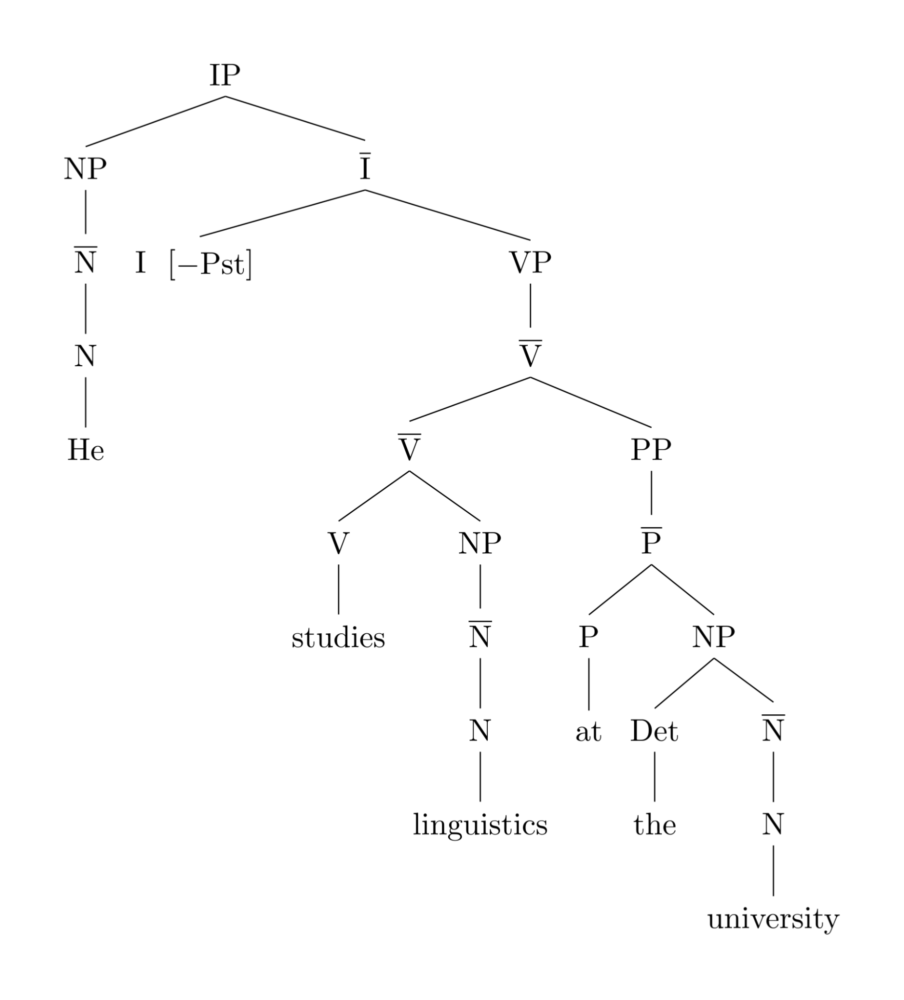
By Xbarst1.jpg: Russky1802 derivative work: Maxdamantus - This file was derived from: Xbarst1.jpg:, Public Domain, https://commons.wikimedia.org/w/index.php?curid=21979041
An NP is a Noun Phrase, V is a Verb, and so on. Observe how the sentence diagram takes a linear sentence and turns it into a tree-shaped representation of the grammatical structure. We want to do the same for programs.
Representing Abstract Syntax
In the rest of this book, except where indicated otherwise, we will implement things in the plait language of Racket. Please make sure you have plait installed to follow along.
We will create a new tree datatype in plait to represent ASTs. In the sentence diagram above, the leaves of the tree are words, and the nodes are grammatical terms. In our AST, the leaves will be numbers, while the nodes will be operations on the trees representing each sub-expression. For now, we have only one operation: addition. Here’s how we can represent this in plait syntax:
(define-type Exp
[num (n : Number)]
[plus (left : Exp) (right : Exp)])
This says:
- We are defining a new type, Exp
- There are two ways of making an Exp
- One way is through the constructor num:
- A num takes one argument
- That argument must be an actual number
- The other way is through the constructor plus:
- A plus takes two arguments
- Both arguments must be Exps
If it helps as you read what follows, this is very analogous to the following Java pseudocode skeleton (or the analog with Python dataclasses):
abstract class Exp {}
class num extends Exp {
num(Number n) { … }
}
class plus extends Exp {
plus(Exp left, Exp right) { … }
}
Let’s look at how some of the previous examples would be represented:
Surface Syntax | AST |
1 | (num 1) |
2.3 | (num 2.3) |
1 + 2 | (plus (num 1) (num 2)) |
(1 + 2) + 3 | (plus (plus (num 1) (num 2)) (num 3)) |
1 + (2 + 3) | (plus (num 1) (plus (num 2) (num 3))) |
1 + ((2 + 3) + 4) | (plus (num 1) (plus (plus (num 2) (num 3)) (num 4))) |
Observe a few things about these examples:
- The datatype definition does not let us directly represent surface syntax terms such as 1 + 2 + 3 + 4; any ambiguity has to be handled by the time we construct the corresponding AST term.
- The number representation might look a bit odd: we have a num constructor whose only job is to “wrap” a number. We do this for consistency of representation. As we start writing programs to process these data, it’ll become clear why we did this.
- Notice that every significant part of the expression went into its AST representation, though not always in the same way. In particular, the + of an addition is represented by the constructor; it is not part of the parameters.
- The AST really doesn’t care what surface syntax was used. The last term could instead have been written as
(+ 1
(+ (+ 2 3)
4))
or even as
and it would presumably produce the same AST.
In short, ASTs are tree-structured data that represent programs in programs. This is a profound idea! In fact, it’s one of the great ideas of the 20th century, building on the brilliant work of Gödel (encoding), Turing (universal machine), von Neumann (stored program computer), and McCarthy (metacircular interpreter).
Aside: Not every part of the source program has been represented in the AST. For instance, presumably both 1 + 2 and 1 + 2 would be represented the same way, ignoring the spaces. In practice, a real language implementation does need to know something about the syntax: for instance, to highlight pieces of the program source when there is an error, as DrRacket does. Therefore, real-world implementations use abstract syntax but with metadata relating it back to the source.
Evaluating Arithmetic
Defining the Evaluator
Having seen how to represent arithmetic programs, we turn to writing an evaluator program that turns them into answers.
What is the type of this evaluator? Clearly it consumes programs, which here are represented by Exps. What does it produce? In this case, all these expressions are going to produce numbers. For this reason, we’ll call this a calculator, or calc for short, for now. We can thus give calc the type
(calc : (Exp -> Number))
Let’s now try to define its body. Clearly we must have
(define (calc e)
…)
In the body, given an Exp, we will want to take it apart using type-case, which tells us there are two options, each with some additional data (this is the moral equivalent of the method dispatch we’d have used in Java):
(type-case Exp e
[(num n) …]
[(plus l r) …])
What happens in the case that the whole expression is already a number? Well, we have our answer, so we just return it. Otherwise, we have to add the two sides:
(type-case Exp e
[(num n) n]
[(plus l r) (+ l r)])
giving us an overall body of:
(define (calc e)
(type-case Exp e
[(num n) n]
[(plus l r) (+ l r)]))
Let’s run it to…oops! We get a type error! It tells us that addition is expecting a number, but l is not a number: it’s an Exp. Ah, that’s because l and r still represent expressions, not the answer that the expressions evaluate to. To fix that, we need something that can turn an expression into a number…which is precisely what we’re defining! Thus, we instead write
(define (calc e)
(type-case Exp e
[(num n) n]
[(plus l r) (+ (calc l) (calc r))]))
The type-checker is happy now. And sure enough, we can confirm that our examples produce what we expect. For instance:
(calc (num 1))
produces 1,
(calc (plus (num 1) (num 2))
produces 3, and
(plus (num 1)
(plus (num 2) (num 3)))
produces 6.
Aside: We’ve glossed over a detail: we’ve assumed that + always means numeric addition (which was already implicit in calling it “plus” in the AST). But some languages allow any number of different types to be “added”: e.g., it can also concatenate strings. In such languages, the name in the AST might be something more generic, and the evaluator would need to handle the different possible behaviors.
In fact, we’ve glossed over something even more basic: what numeric addition means, or for that matter, even what numbers are. As we see from the Mystery Language: Arithmetic, there are many choices here. In our calculator, we have adopted numbers from plait (in num) and addition from plait (by using +). Those places in calc also tell us where we would go to change those choices.
Testing the Evaluator
The examples above are fine, but we should write these in the syntax of tests, so that the computer checks them for us automatically:
(test (calc (num 1)) 1)
(test (calc (num 2.3)) 2.3)
(test (calc (plus (num 1) (num 2))) 3)
(test (calc (plus (plus (num 1) (num 2))
(num 3)))
6)
(test (calc (plus (num 1)
(plus (num 2) (num 3))))
6)
(test (calc (plus (num 1)
(plus (plus (num 2)
(num 3))
(num 4))))
10)
Sure enough, when we run this, Racket confirms that all these tests pass.
Pro Tip: It can get annoying to scan through all this testing output to see whether any of the tests failed. Simply add
(print-only-errors #true)
before your tests and Racket will suppress reporting on the passing tests, so you can focus on the ones that failed: in other words, no news is good news.
In general, test early, often, and extensively. Programming language evaluators translate our thoughts into computer actions. Therefore, it’s critical that they do so precisely. This is why language implementations are some of the most tested software you can imagine (when’s the last time you were stopped by a bug in your language implementation?), and people who will tolerate bugs in just about any other software are much less forgiving of bugs in implementations.
Some Subtler Tests
Try the following test:
(test (calc (plus (num 0.1) (num 0.2))) 0.3)
It succeeds! Are we happy? Suppose we instead write it as:
(test (calc (plus (num 0.1) (num 0.2))) 1/3)
As expected, it fails: but the error message reveals that the left-hand side evaluated to 0.30000000000000004. This should be a cue that we have actually gotten floating point addition. This is because plait treats numbers written with a decimal point, like 0.1, as floating point bitstrings. However, floating point bitstrings cannot precisely represent the number 0.3. In fact, plait’s test allows a little bit of numeric slack so that the passing test above works. (This is because in plait, 0.3 really does precisely represent the number 0.3, because it was written literally and not the result of a floating-point computation.)
This reinforces a point we made in passing above and was therefore easy to miss: by adopting plait’s primitives, we have also inherited its semantics. This may or may not be what we wanted! Therefore, when writing an evaluator using a host language, we have to make sure that its semantics are the one we want, otherwise we could be in for an unpleasant surprise. If we want different behavior, we have to implement it explicitly.
Conclusion
This concludes our first look at SImPl: we have represented a program in a program, and we have processed that represented program in a program. We have just written our first program that processes programs—now we’re off to the races!
Parsing: From Source to ASTs
The Problem
Earlier we went through the basic steps of the SImPl, but we left open a big question: how do we get programs into the AST representation? Of course, the simplest way is what we already did: to write the AST constructors directly, e.g.,
(num 1)
(plus (num 1) (num 2))
(plus (num 1)
(plus (num 2) (num 3)))
which, as we noted, has the virtue of also ignoring exactly how the program source was written.
However, this can get very tedious. We don’t want to have to write (num …) every time we want to write a number, for instance! In particular, the more tedious it is the less likely we are to write many or complex tests, and that would be especially unfortunate. Therefore, we’d like a more convenient surface syntax, along with a program to translate that into ASTs.
As we have already seen, there is a large number of surface syntaxes we can use, and we aren’t even limited to textual syntax: it could be graphical; spoken; gestural (imagine you’re in a virtual reality environment); and so on. As we have noted, this wide range of modalities is important—especially so if the programmer has physical constraints—but it’s outside the range of our current study. Even with textual syntax, we have to deal with issues like ambiguity (e.g., order of operations in arithmetic).
In general, the process of converting the input syntax into ASTs is called parsing. We could write a whole booklet just on parsing…so we won’t. Instead, we’re going to pick one syntax that strikes a reasonable balance between convenience and simplicity, which is the parenthetical syntax of Racket, and has special support in plait. That is, we will write the above examples as
1
(+ 1 2)
(+ 1 (+ 2 3))
and see how Racket can help us make these convenient to work with. In fact, in this book we will follow a convention (that Racket doesn’t care about, because it treats (), [], and {} interchangeably): we’ll write programs to be represented using {} instead of (). Thus, the above three programs become
1
{+ 1 2}
{+ 1 {+ 2 3}}
S-Expressions
There is a name for this syntax: these are called s-expressions (the s- is for historical reasons). In plait, we will write these expressions preceded by a back-tick (`). A back-tick followed by a Racket term is of type S-Exp. Here are examples of s-expressions:
`1
`2.3
`-40
These are all numeric s-expressions. We can also write
`{+ 1 2}
`{+ 1 {+ 2 3}}
It’s not obvious, but these are actually list s-expressions. We can tell by asking
> (s-exp-list? `1)
- Boolean
#f
> (s-exp-list? `{+ 1 2})
- Boolean
#t
> (s-exp-list? `{+ 1 {+ 2 3}})
- Boolean
#t
So the first is not but the second two are; similarly,
> (s-exp-number? `1)
- Boolean
#t
> (s-exp-number? `{+ 1 {+ 2 3}})
- Boolean
#f
The S-Exp type is a container around the actual number or list, which we can extract:
> (s-exp->number `1)
- Number
1
> (s-exp->list `{+ 1 2})
- (Listof S-Exp)
(list `+ `1 `2)
Do Now: What happens if you apply s-exp->number to a list s-exp or s-exp->list to a number s-expression? Or either to something that isn't an s-expression at all? Try it right now and find out! Do you get somewhat different results?
Let’s look at that last output above a bit more closely. The resulting list has three elements, two of which are numbers, but the third is something else:
`+
is a symbol s-expressions. Symbols are like strings but somewhat different in operations and performance. Whereas there are numerous string operations (like substrings), symbols are treated atomically; other than being converted to strings, the only other operation they support is equality. But in return, symbols can be checked for equality in constant time.
Symbols have the same syntax as Racket variables, and hence are perfect for representing variable-like things. Thus
> (s-exp-symbol? `+)
- Boolean
#t
> (s-exp->symbol `+)
- Symbol
'+
This output shows how symbols are written in Racket: with a single-quote (').
There are other kinds of s-expressions as well, but this is all we need for now! With this, we can write our first parser!
Primus Inter Parsers
Do Now: Think about what type we want for our parser.
What does our parser need to produce? Whatever the calculator consumes, i.e., Expr. What does it consume? Program source expressions written in a “convenient” syntax, i.e., S-Exp. Hence, its type must be
(parse : (S-Exp -> Exp))
That is, it converts the human-friendly(ier) syntax into the computer’s internal representation.
Writing this requires a certain degree of pedantry. First, we need a conditional to check what kind of s-exp we were given:
(define (parse s)
(cond
[(s-exp-number? s) …]
[(s-exp-list? s) …]))
If it’s a numeric s-exp, then we need to extract the number and pass it to the num constructor:
(num (s-exp->number s))
Otherwise, we need to extract the list and check whether the first thing in the list is an addition symbol. If it is not, we signal an error:
(let ([l (s-exp->list s)])
(if (symbol=? '+
(s-exp->symbol (first l)))
…
(error 'parse "list not an addition")))
Otherwise, we create a plus term by recurring on the two sub-pieces.
(plus (parse (second l))
(parse (third l)))
Putting it all together:
(define (parse s)
(cond
[(s-exp-number? s)
(num (s-exp->number s))]
[(s-exp-list? s)
(let ([l (s-exp->list s)])
(if (symbol=? '+
(s-exp->symbol (first l)))
(plus (parse (second l))
(parse (third l)))
(error 'parse "list not an addition")))]))
It’s all a bit much, but fortunately this is about as hard as parsing will get in this book! Everything you see from now on will basically be this same sort of pattern, which you can freely copy.
We should, of course, make sure we’ve got good tests for our parser. For instance:
(test (parse `1) (num 1))
(test (parse `2.3) (num 2.3))
(test (parse `{+ 1 2}) (plus (num 1) (num 2)))
(test (parse `{+ 1
{+ {+ 2 3}
4}})
(plus (num 1)
(plus (plus (num 2)
(num 3))
(num 4))))
Do Now: Are there other kinds of tests we should have written?
We have only written positive tests. We can also write negative tests for situations where we expect errors:
(test/exn (parse `{1 + 2}) "")
test/exn takes a string that must be a substring of the error message. You might be surprised that the test above uses the empty string rather than, say, "addition". Try out this example to investigate why. How can you improve your parser to address this?
Other situations we should check for include there being too few or too many sub-parts. Addition, for instance, is defined to take exactly two sub-expressions. What if a source program contains none, one, three, four, …? This is the kind of pedantry that parsing calls for.
Once we have considered these situations, we’re in a happy place, because parse produces output that calc can consume. We can therefore compose the two functions! Better still, we can write a helper function that does it for us:
(run : (S-Exp -> Number))
(define (run s)
(calc (parse s)))
So we can now rewrite our old evaluator tests in a much more convenient way:
(test (run `1) 1)
(test (run `2.3) 2.3)
(test (run `{+ 1 2}) 3)
(test (run `{+ {+ 1 2} 3})
6)
(test (run `{+ 1 {+ 2 3}})
6)
(test (run `{+ 1 {+ {+ 2 3} 4}})
10)
Compare this against the calc tests we had earlier!
Evaluating Conditionals
So far our language has had only arithmetic. Building on Mystery Language: Conditionals, we will now examine how to extend our language to also support conditionals. There can be quite complex conditional expressions in real languages, but for our purposes it will suffice to have an if with three parts: the conditional, the then-branch, and the else-branch. Later, when we learn how to extend the language, we can see how to layer more sophisticated conditional expressions atop this.
In SImPl, we have to do at least two things:
- Extend the datatype representing expressions to include conditionals.
- Extend the evaluator to handle (the representation of) these new expressions.
Optionally, if we have a parser, we should also
- Extend the parser to produce these new representations.
Extending the AST
Because we have fixed our conditionals to have three parts, we just need to represent that in the AST. This is straightforward:
(define-type Exp
[num (n : Number)]
[plus (left : Exp) (right : Exp)]
[cnd (test : Exp) (then : Exp) (else : Exp)])
The real work will happen in the evaluator.
Extending the Calculator
Clearly, adding conditionals doesn’t change what our calculator previously did, we can leave that intact, and just focus on the handling of if:
(define (calc e)
(type-case Exp e
[(num n) n]
[(plus l r) (+ (calc l) (calc r))]
[(cnd c t e) …]))
Indeed, we can recursively evaluate each term, in case it’s useful:
(define (calc e)
(type-case Exp e
[(num n) n]
[(plus l r) (+ (calc l) (calc r))]
[(cnd c t e) … (calc c) … (calc t) … (calc e) …]))
Let’s take these one at a time.
But now we run into a problem. What is the result of calling (calc c)? We expect it to be some kind of Boolean value. But we don’t have Boolean values in the language!
That’s not all. Above, we have written both (calc t) and (calc e). However, the whole point of a conditional is that we don’t want to evaluate both, only one. So we have to pick which one to evaluate based on some criterion.
The Design Space of Conditionals
Even the simplest conditional exposes us to many variations in language design. The intent is that test-expression is evaluated first; if it results in a true value then (only) the then-expression is evaluated, else (only) the else-expression is evaluated. (We usually refer to these two parts as branches, since the program’s control must take one or the other.) However, even this simple construct results in at least three different, mostly independent design decisions:
- What kind of values can the test-expression be? In some languages they must be Boolean values (two values, one representing truth and the other falsehood). In other languages this expression can evaluate to just about any value, with some set—colloquially called truthy—representing truth (i.e., they result in execution of the then-expression) while the remaining ones are falsy, meaning they cause the else-expression to run.
Initially, it may seem attractive to design a language with several truthy and falsy values: after all, this appears to give the programmer more convenience, permitting non-Boolean-valued functions and expressions to be used in conditionals. However, this can lead to bewildering inconsistencies across languages:
Value | JavaScript | Perl | PHP | Python | Ruby |
-1 | truthy | truthy | truthy | truthy | truthy |
0 | falsy | falsy | falsy | falsy | truthy |
"" | falsy | falsy | falsy | falsy | truthy |
"0" | truthy | falsy | falsy | truthy | truthy |
NaN | falsy | truthy | truthy | truthy | truthy |
nil, null, None, undefined | falsy | falsy | falsy | falsy | falsy |
[] | truthy | truthy | falsy | falsy | truthy |
empty map or object | truthy | falsy | falsy | falsy | truthy |
Of course, it need not be so complex. Scheme, for instance, has only one value that is falsy: false itself (written as #false). Every other value is truthy. For those who value allowing non-Boolean values in conditionals, this represents an elegant trade-off: it means a function need not worry that a type-consistent value resulting from a computation might cause a conditional to reverse itself. (For instance, if a function returns strings, it need not worry that the empty string might be treated differently from every other string.) Note that Ruby, which is inspired in part by Scheme, adopted this simple model. Lua, another Scheme-inspired language, is also spartan in its falsy values.
- What kind of terms are the branches? Some languages make a distinction between statements and expressions; in such languages, designers need to decide which of these are permitted. In some languages, there are even two syntactic forms of conditional to reflect these two choices: e.g., in C, if uses statements (and does not return any value) while the “ternary operator” ((...?...:...)) permits expressions and returns a value.
- If the branches are expressions and hence allowed to evaluate to values, how do the values relate? Many (but not all) languages with static type systems expect the two branches to have the same type [👉]. Languages without static type systems usually place no restrictions.
Aside: While writing an earlier version of this very chapter, I stumbled on a strange bug in the Pyret programming language: all numeric s-expressions parsed as s-num values except 0, which parsed as a s-sym. Eventually Justin Pombrio reported: “It’s a silly bug with an if in JavaScript that’s getting 0 and thinking it’s false.” Seems fitting.
Using Truthy-Falsy Values
Some languages use truthy-falsy values to handle partial functions. Instead of signaling an error, they return a falsy value when the argument cannot be handled. For instance, it is common to return #false in Racket or None in Python as an error code, and a proper value for normal execution. Consider this Racket example:
(define (g s)
(+ 1 (or (string->number s) 0)))
This function accepts a string that may or may not represent a number. If it does, it returns one bigger number; otherwise it returns 1:
(test (g "5") 6)
(test (g "hello") 1)
This works because string->number returns a number or, if the string is not legal, #false. In Racket, all values other than #false are truthy. Thus, legitimate strings short-circuit evaluation of the or, while non-numeric strings result in 0. These therefore serve as a rough-and-ready option types in languages that don’t (or didn’t) have proper datatype constructors.
We will discuss this issue further later in the book [👉].
Implementing Conditionals
Okay, so we have many decisions to make! To first get a working evaluator, without having to go beyond numbers, we can use a slightly different conditional construct: one that checks whether evaluates to a special numeric value, such as 0. That is, instead of a proper if, we really have something we might call if0 that works only for numbers.
How do we make this choice? Luckily, we’re writing our interpreter in plait, which of course already has a conditional. Therefore, we can just reuse it:
(define (calc e)
(type-case Exp e
[(num n) n]
[(plus l r) (+ (calc l) (calc r))]
[(cnd c t e) (if (zero? (calc c))
(calc t)
(calc e))]))
Observe that the semantics of the conditional—that 0 is true, and everything else is false—is now made manifest in the body of calc. If we want a different semantics, that’s the part of the program to zero into and change.
This solution, and indeed so far our entire evaluator, might feel a bit… disappointing? We have numbers and conditionals, sure, but all we’ve done is (mostly) deferred to plait to handle these. Here are some thoughts on this:
- This is true!
- This is not entirely true. We have made some conscious decisions, like the handling of conditionals.
- In fact, we have made even more decisions, whether or not we were conscious of them, such as the handling of numbers. We just happened to defer those to plait, but we could have made other decisions if we wanted.
- This reuse is actually part of the power of an interpreter: it lets you exploit features that have already been built instead of having to re-implement all of them from scratch.
- By reusing the host language (here, plait), we can zero in on the differences (like the handling of conditionals), which would otherwise be lost if we had to implement everything. Later we will see stronger departures from the semantics of plait.
Adding Booleans
Okay, so what if we wanted proper Booleans?
Again, to employ SImPl, we need to alter the AST, the evaluator, and the parser.
We can add Booleans much like we did numbers: with a constructor that wraps a plait representation of the Boolean.
(define-type Exp
[num (n : Number)]
[bool (b : Boolean)]
[plus (left : Exp) (right : Exp)]
[cnd (test : Exp) (then : Exp) (else : Exp)])
It’s very important to keep in mind what the num and bool constructors stand for. Recall that this is abstract syntax: we are just (abstractly) representing the program that the user wrote, not the result of its evaluation. Therefore, these constructors are capturing syntactic constants in the source program: values like 3.14 and -1 for the former and #true and #false for the latter. They do not represent compound expressions that will evaluate to numbers or Booleans. What an expression will evaluate to, for now, can only be determined by running it. Later [👉], we will see there are other ways of doing it too!
Aside: The abstract syntax does not dictate what concrete syntax we use. For instance, we may write numbers as 3 or as III. We might write Boolean values as #t, #true, true, True, …. We may even have different concrete syntaxes for the same abstract syntax. This is precisely the abstraction that abstract syntax provides!
Easy peasy! This naturally suggests what we should do in the evaluator:
(define (calc e)
(type-case Exp e
[(num n) n]
[(bool b) b]
[(plus l r) (+ (calc l) (calc r))]
[(cnd c t e) (if (zero? (calc c))
(calc t)
(calc e))]))
Oh…oops. This version of calc doesn’t type-check, because our calculator is supposed to return only numbers, not Booleans!
In fact, we had to know that this couldn’t last. We aren’t interested only in calculators; we want to build full-fledged programming languages. They have a wide range of values, i.e., answers: numbers, Boolean, strings, images, functions, and more.
The Value Datatype
Therefore, we first need to define a datatype that reflects the different kinds of values that an evaluator can produce. We will follow a convention and call the return type constructors …V to distinguish from the inputs. Dually, we’ll call the inputs …E (for expressions) to distinguish from the outputs.
First we’ll rename our expressions:
(define-type Exp
[numE (n : Number)]
[boolE (b : Boolean)]
[plusE (left : Exp) (right : Exp)]
[cndE (test : Exp) (then : Exp) (else : Exp)])
(nothing has changed other than the names of the constructors).
Now we introduce a Value datatype to represent the types of answers our evaluator can produce:
(define-type Value
[numV (the-number : Number)]
[boolV (the-boolean : Boolean)])
We update the type of our evaluator:
(calc : (Exp -> Value))
and the early parts are easy:
(define (calc e)
(type-case Exp e
[(numE n) (numV n)]
[(boolE b) (boolV b)]
…))
Updating the Evaluator
Now suppose we try to use our existing code:
[(plusE l r) (+ (calc l) (calc r))]
This has two problems. The first is we can’t return a number; we have to return a numV:
[(plusE l r) (numV (+ (calc l) (calc r)))]
But now we run into a subtler problem. The type-checker is not happy with this program. Why?
Because the result of calc is a Value, and + consumes only Numbers. Indeed, the type checker is forcing us to make a decision here: what happens if one of the sides of + does not evaluate to a number?
First, let’s build an abstraction to handle this, so that we can keep the core of the interpreter relatively clean:
[(plusE l r) (add (calc l) (calc r))]
Now we can defer all the logic of evaluating + to add. Now we have to make a semantic decision. Should we be allowed to “add” two Boolean values? What about adding a number to a Boolean or vice versa? Though there isn’t quite a SMoL decision here—some languages are very strict while others are very permissive—the least-non-standard policy is to require both branches to evaluate to numbers, which we would express as follows:
(define (add v1 v2)
(type-case Value v1
[(numV n1)
(type-case Value v2
[(numV n2) (numV (+ n1 n2))]
[else (error '+ "expects RHS to be a number")])]
[else (error '+ "expects LHS to be a number")]))
Observe that these else clauses can easily represent other decisions. We can embed an entire family of mystery languages in the different choices available!
Exercise: Why did we write the numV constructor in add rather than in calc?
Pro Tip: You’ve just added a complex chunk of code. Now would be a very good time to test your evaluator. Here are two things to consider:
- Right now the code for conditionals also does not type-check. You may find it convenient to replace the entire RHS with something semantically incorrect but type-correct, like (numV 0), so you restore your working evaluator.
- Don’t forget to test for the error cases! You would do so using test/exn. For instance:
(test/exn (calc (plusE (numE 4) (boolE #false))) "RHS")
Let’s now turn our attention to the conditional (with the constructor name updated):
[(cndE c t e) …]
The core logic must clearly be similar: check something about the condition, and based on it, evaluate only one of the other two clauses. Once again, we have to make decisions about how we handle the conditional: should we strictly require a Boolean value, or should we make a truthy/falsy decision? We can again defer that to a helper function:
[(cndE c t e) (if (boolean-decision (calc c))
(calc t)
(calc e))]))
Again, the least non-standard policy, and one that sets up later material, is to be strict about requiring a Boolean:
(define (boolean-decision v)
(type-case Value v
[(boolV b) b]
[else (error 'if "expects conditional to evaluate to a boolean")]))
But again, starting from a strict interpretation, we can see where we can give in to any urges we feel to design a more liberal semantics: by replacing the else clause.
Observe, by the way, that we did something different with conditionals than we did for addition. With add, we evaluated both branches and gave it their corresponding Values. It would be a terrible idea to do that with conditionals, because the entire point of a conditional is to not evaluate one of the branches! We could have sent the ASTs for the branches to a helper function, but what we have done above also works well: it localizes the variation in the semantics to the helper function, but keeps what is not expected to change (the fact that a conditional syntax leads to a conditional evaluation) in the core of the evaluator.
Evaluating Local Binding
Most programming languages have some notion of local binding. There are two words there, which we’ll tease apart:
- Binding means to associate names with values. For instance, when we call a function, the act of calling associates (“binds”) the formal parameters with the actual values.
- Local means they are limited to some region of the program, and not available outside that region.
For instance, in many languages we can write something like
fun f(x):
y = 2
x + y
This seems clear enough. But here is a more subtle program:
fun f(x):
for(y from 0 to 10):
print(x + y)
y
Is that legal? It depends on whether the y is still “alive” or “active” or “visible” or whatever other phrase you would like; formally, we would say, it depends on whether y is in scope. Specifically, we’d ask whether the last y is a bound instance of the binding that takes place in the for.
This is complicated! Many languages do rather odd, complicated, and certainly unintuitive things, as you will see from Mystery Languages. These odd things are not really part of SMoL; if anything, they are a violation of it.
A Syntax for Local Binding
Part of the problem is actually syntactic. When we write a program like the above, there’s no clear beginning or ending of the scope of y (i.e., the region where y is bound). This is actually a great virtue of parenthetical syntax: it suggests a clear region (between the parentheses). Of course, we have a responsibility to make sure that that’s where the variable is actually bound (though this is something that we’ll find, in a little while, is not so trivial).
Following the syntax of Racket, we’ll add a new construct to our language. At this point it’s getting a bit tricky to keep track of the full syntax, so we’ll use a notation called BNF (short for Backus-Naur Form). Let’s start with our arithmetic language:
<expr> ::= <num>
| {+ <expr> <expr>}
which reads as “define (::=) expr (short for expression) to be either a number or (|) the surface syntax consisting of an opening brace ({), a plus sign (+), an expr, another expr, and a closing brace”. BNF gives us a convenient notation for the grammar of a language through its concrete syntax, and our abstract syntax will usually correspond very directly to the BNF in a very natural manner. (Observe, however, that in the BNF, we simply say that each sub-expression is an expr, because that’s all we need to know to properly form programs. However, in the AST, we give the parts different names to tell them apart.)
Notation: BNF is divided into terminals and non-terminals. Non-terminals are placeholders like expr and num above: they stand for many more possibilities (an expr above can be replaced with one of two possibilities (for now), while there are many possible ways to write nums). They are given this name because the grammar doesn’t “terminate” here: the name is a place-holder that can (and must) be further expanded.
The convention is to write non-terminals inside <pointy brackets>. Terminals, in contrast, are concrete syntax, like {, }, and + above. They are so-called because they stand for themselves and can’t be expanded further. They are sometimes also called literals, because they must be written literally as shown. For this reason, they are not surrounded by any decorative symbols. Everything is written literally unless it’s a non-terminal, in which case it’s replaced by something according to the definition of the non-terminal.
Now we can define an extended language:
<expr> ::= <num>
| {+ <expr> <expr>}
| {let1 {<var> <expr>} <expr>}
That is, we’re adding a new language construct, let1, which has three parts: a variable (var) and two expressions (the two expr’s).
The Meaning of Local Binding
Do Now: Here are some examples of this new construct; what do you expect each one to produce?
{let1 {x 1}
{+ x x}}
{let1 {x 1}
{let1 {y 2}
{+ x y}}}
{let1 {x 1}
{let1 {y 2}
{let1 {x 3}
{+ x y}}}}
{let1 {x 1}
{+ x
{let1 {x 2} x}}}
{let1 {x 1}
{+ {let1 {x 2} x}
x}}
x
Do Now: Oh, did you notice something? None of the above programs is syntactically legal! Why?
It’s because there is no syntax yet for variables. Our syntax permits us to bind variables but not to use them. So we have to fix that:
<expr> ::= <num>
| {+ <expr> <expr>}
| {let1 {<var> <expr>} <expr>}
| <var>
Now the above terms are all syntactically valid, so we can go back to the question of what they should evaluate to.
The first two programs are pretty obvious:
{let1 {x 1}
{+ x x}}
should evaluate to 2, and
{let1 {x 1}
{let1 {y 2}
{+ x y}}}
should evaluate to 3.
How about this program?
{let1 {x 1}
{let1 {y 2}
{let1 {x 3}
{+ x y}}}}
Here we see the advantage of the parenthetical notation. In a more conventional syntax, this might correspond to
x = 1
y = 2
x = 3
x + y
where any number of things could happen: we might have two different x’s; we might have an x bound and then modified; and in some languages, an introduction of x could be “lifted” so that it’s no longer clear which x is most recent. With our parenthetical syntax, though, it’s pretty clear what scopes we want. To determine the value, we can rely on our old friend, substitution. However, when we substitute the outer x, we expect that to stop at the point where the inner x begins: that is, the inner x shadows the outer one. Hence, the result should be 5.
Do Now: The example above is uninteresting in that the outer x never sees any use. What kind of program might we write that has two let bindings of x that lets us clearly see that there are two x’s?
That’s what this program shows:
{let1 {x 1}
{+ x
{let1 {x 2} x}}}
It seems fairly clear that the left x in the addition should be 1, while x in the right expression should be shadowed and hence should evaluate to 2. The sum should therefore be 3. Incidentally, DrRacket is useful in such cases, because we can write an equivalent expression in #lang racket—
(let ([x 1])
(+ x
(let ([x 2])
x)))
—and hover over the last x, and DrRacket (for Racket, which represents a fairly ideal form of SMoL) will automatically draw a blue arrow showing where the variable is bound:
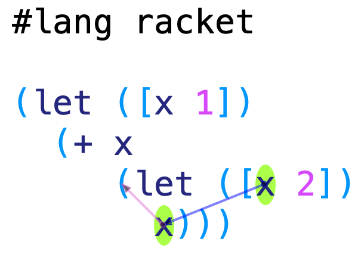
Now for a more complex example:
{let1 {x 1}
{+ {let1 {x 2} x}
x}}
Here, it’s especially useful to turn to substitution to determine the answer. Again, it seems clear that x in the left expression is shadowed and hence should be 2. The big question, of course, is what about the x on the right hand side of the addition (i.e., on the last line)?
Here, again, conventional textual syntax is fraught with ambiguity: is
x = 2
on the left a binding of a new x or a modification of the outer x? Those are two very different things! But with our syntax it’s much clearer that it should be the former, not the latter. Thus, by substitution, the outer x is replaced by 1, giving
{+ {let1 {x 2} x}
1}
in which we perform one more substitution, producing
{+ 2
1}
and hence 3. This time, DrRacket is especially useful confirmation:
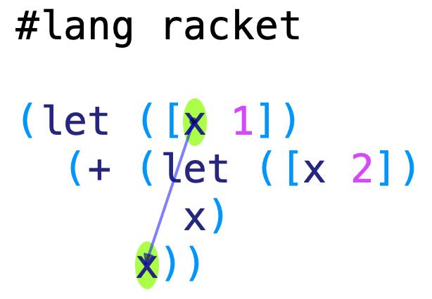
That leaves just one program:
x
Because x is not bound anywhere, this is just a syntax error.
Static Scoping
The program
{let1 {x 1}
{+ {let1 {x 2} x}
x}}
introduces us to a very important concept: indeed, one of the central ideas behind SMoL. This is that a variable’s binding is determined by its position in the source program, and not by the order of the program’s execution. That is, the x on the last line is bound by the same place—and hence obtains the same value—irrespective of other bindings that took place before it was evaluated. To understand this better, let’s see a progression of programs:
{let1 {x 1}
{+ {let1 {x 2} x}
x}}
You might think it’s okay whether it produces 3 or 4. How about this?
{let1 {x 1}
{+ {if true
{let1 {x 2} x}
4}
x}}
You should expect the same out of this: the conditional is always true, so clearly we are always going to evaluate the inner binding, so its answer should be the same as for the previous program. But how about this?
{let1 {x 1}
{+ {if true
4
{let1 {x 2} x}}
x}}
Now you might not be so sure. Since the conditional is never taken, you probably don’t want the inner binding to have an influence. That is, you are willing to let the program’s control flow influence the bindings. On its face that sounds reasonable, but now how about this program?
{let1 {x 1}
{+ {if {random}
4
{let1 {x 2} x}}
x}}
or
{let1 {x 1}
{+ {if {moon-is-currently-full}
4
{let1 {x 2} x}}
x}}
Are you okay with the binding structure changing every two weeks? What about this version:
{let1 {x 1}
{+ {if {moon-is-currently-full}
4
{let1 {y 2} x}}
y}}
Then, depending on the phase of the moon, the program either produces an answer or results in an unbound-variable error.
The decision to let control flow determine binding is called dynamic scope. It is the one unambiguously wrong design decision in programming languages. It has a long and sordid history: the original Lisp had it, and it was not until over a decade later that Scheme fixed it. Unfortunately, those who don’t know history are doomed to repeat it: early versions of Python and JavaScript also had dynamic scope. Taking it back out has been a herculean effort. Dynamic scope means:
- We can’t be sure about the binding structure of our programs.
- The evaluator can’t be sure, either.
- Nor can programmer tools.
For instance, a program refactoring tool needs to know binding structure: even a simple “variable renaming” tool needs to know which variables to rename. In DrRacket, there is no ambiguity, so variable renaming works correctly. This is not true in other languages: see, for instance, Appendix 2 of this paper on the semantics of Python.
The opposite of dynamic scope—where we can determine the binding by following the structure of the AST—is called static scope. Static scope is a defining characteristic of SMoL.
Dynamic scope occurred in early implementations because it was easy to obtain: it was the default behavior. We have to work a bit harder to obtain static scope, as we will see.
An Evaluator for Local Binding
Now that we’ve seen what behavior we want, we should implement it. That is, we’ll extend our calculator to handle local binding (a feature you may well have wished your calculator had). To reflect that our calculator is growing up, from now on we’ll call it an interpreter, abbreviated in code to interp.
Let’s start with the new AST. For simplicity, we’ll ignore conditionals, which are anyway orthogonal to our goal of handling local binding. Recall that we added two new branches to the BNF, so we’ll want two new corresponding branches to the AST:
(define-type Exp
[numE (n : Number)]
[plusE (left : Exp) (right : Exp)]
[varE (name : Symbol)]
[let1E (var : Symbol)
(value : Exp)
(body : Exp)])
We can also copy over our previous calculator, but we pretty quickly run into trouble:
(define (interp e)
(type-case (Exp) e
[(numE n) n]
[(varE s) …]
[(plusE l r) (+ (interp l) (interp r))]
[(let1E var val body) …]))
What do we do when we encounter a let1E? For that matter, what do we do when we encounter a variable? In fact, these two should be intimately connected: the variable binding introduced by the former should substitute the variable use in the latter.
Caching Substitution
We repeatedly—and rightly—refer back to substitution to understand how programs should work, and indeed will do so again later. But substitution as an evaluation technique is messy. This requires us to constantly keep rewriting the program text, which takes time linear in the size of the program (which can get quite large) for every variable binding. Most real language implementations do not work this way.
Instead, we might think of employing a space-time tradeoff: we’ll use a little extra space to save ourselves a whole lot of time. That is, we’ll cache the substitution in a data structure called the environment. An environment records names and their corresponding values: that is, it’s a collection of key-value pairs. Thus, whenever we encounter a binding we remember its value, and when we encounter a variable, we look up its value.
Aside: As with all caches, we want them to only improve performance along a dimension, not change the meaning. That is, we no longer want substitution to define how we produce an answer. But, we still want it to tell us what answer to produce. This will become important below.
We will use a hash table to represent the environment:
(define-type-alias Env (Hashof Symbol Value))
(define mt-env (hash empty)) ;; "empty environment"
We will need the interpreter to actually take an environment as a formal parameter, to use in place of substitution. Thus:
(interp : (Exp Env -> Value))
(define (interp e nv) …)
Now what happens when we encounter a variable? We try to look it up in the environment. That may succeed or, in the case of our last example above, fail. We will use hash-ref, which looks up keys in hash tables, and returns an Optionof type to account for the possibility of failure. We can encapsulate it in a function that we will repeatedly find useful:
(define (lookup (s : Symbol) (n : Env))
(type-case (Optionof Value) (hash-ref n s)
[(none) (error s "not bound")]
[(some v) v]))
In the event the lookup succeeds, then we want the value found, which is wrapped in some. This function enables our interpreter to stay very clean and readable:
[(varE s) (lookup s nv)]
Finally, we are ready to tackle let1. What happens here? We must
- evaluate the body of the expression, in
- an environment that has been extended, with
- the new name
- bound to its value.
Phew!
Fortunately, this isn’t as bad as it sounds. Again, a function will help a lot:
(extend : (Env Symbol Value -> Env))
(define (extend old-env new-name value)
(hash-set old-env new-name value))
With this, we can see the structure clearly:
[(let1E var val body)
(let ([new-env (extend nv
var
(interp val nv))])
(Observe that we used let in plait to define let1 in Paret. We’ll see more of this…)
In sum, our core interpreter is now:
(define (interp e nv)
(type-case Exp e
[(numE n) n]
[(varE s) (lookup s nv)]
[(plusE l r) (+ (interp l nv) (interp r nv))]
[(let1E var val body)
(let ([new-env (extend nv
var
(interp val nv))])
(interp body new-env))]))
Exercise:
- What if we had not called (interp val nv) above?
- What if we’d used nv instead of new-env in the call to interp?}
- Are there any other errors in the interpreter based on copying what we had before?
- We seem to extend the environment but never remove anything from it. Is that okay? If not, it should cause an error. What program would demonstrate this error, and does it actually do so? (If not, why not?)
This concludes our first interesting “programming language”. We have already been forced to deal with some fairly subtle questions of scope, and with how to interpret them. Things will only get more interesting from here!
Evaluating Functions
Now that we have arithmetic and conditionals, let’s proceed to creating a full-fledged programming language by adding functions.
Functions in the Language
There are many ways to think about adding functions to the language. Many languages, for instance, have top-level functions; e.g.:
fun f(x):
x + x
Indeed, some languages (such as C) only have top-level functions. Most modern languages, however, have the ability to write functions outside the top-level: e.g.,
fun f(x):
fun sq(y):
y * y
sq(x) + sq(x)
and even to return those functions, and even to allow them to be written anonymously. Since just about every modern language supports it, we’ll think of this as a component of SMoL. Indeed, with such a facility, we don’t really need a named function construct per se: we could instead have written
fun f(x):
sq = lam(y): y * y
sq(x) + sq(x)
And in turn we can replace f with a name-binding and lam, too.
Extending the Representation
Therefore, let’s think about what it takes to evaluate functions-as-values to SMoL. We don’t need functions to inherently have a name, because naming can be done by let1. We’ll assume, for simplicity, that all functions take only one argument; extending this to multiple arguments is left as an exercise.
Exercise: What issues might we have to deal with when we extend functions from having one argument only to having multiple arguments?
First, we need to extend our abstract syntax.
Do Now: How many new constructs do we need to add to the abstract syntax?
When we added let1, you may recall that it didn’t suffice to add one construct; we needed two: one for variable binding and one for variable use. You’ll often see this pattern when adding values to the language. For any new kind of value, you can expect to see one or more ways to make it and one or more ways to use it. (Even arithmetic: numeric constants were a way to make them, arithmetic operations consumed them—but also made them.)
Likewise with functions, we need a way to represent both
lam(x): x * x
for defining new functions, and
sq(3)
to use them.
Terminology: In more advanced texts, you will sometimes see the (formally correct, but perhaps slightly confusing) terms introduction and elimination: introduction brings the new concept in, elimination uses them. Thus, the lam introduces new functions, and an application eliminates them.
We therefore add
[lamE (var : Symbol) (body : Exp)]
[appE (fun : Exp) (arg : Exp)]
to our AST.
Let’s assume we’ve already extended our parser, so that programs like the following are legal:
{let1 {f {lam x {+ x x}}}
{f 3}}
{let1 {x 3}
{let1 {f {lam y {+ x y}}}
{f 3}}}
These parse, respectively, into
(let1E 'f (lamE 'x (plusE (varE 'x) (varE 'x)))
(appE (varE 'f) (numE 3)))
(let1E 'x (numE 3)
(let1E 'f (lamE 'y (plusE (varE 'x) (varE 'y)))
(appE (varE 'f) (numE 3))))
and should both evaluate to 6.
Evaluating Functions
Now let’s think about the evaluator, which by now we can think of as turning into a full-blown interpreter.
Let’s start with the (almost) simplest kind of new program:
{lam x {+ x x}}
which is represented as
(lamE 'x (plusE (varE 'x) (varE 'x)))
Do Now: What do we want this program to evaluate to? Think in terms of types!
Remember that calc produces numbers. What number does the above expression evaluate to? What number do you expect it to produce?
If we really want to stretch our credibility, we could either make up an encoding of it in a number, or use a number in memory. But neither of these is what we would expect! Let’s look at what some other languages do:
> (lambda (x) (+ x x))
#<procedure>
> (number? (lambda (x) (+ x x)))
#f
>>> lambda x: x + x
<function <lambda> at 0x108fd16a8>
>>> isinstance(lambda x: x + x, numbers.Number)
False
Both Racket and Python agree: the result of creating an anonymous function is a function-kind of value, not a number. What this says is that we have to broaden the kinds of values that interp can produce.
Terminology: A side-effect is a change to the system that is visible from outside the body of a function. Typical side-effects are modifications to variables that are defined outside the function, communication with a network, changes to files, and so on.
Terminology: A function is pure if, for a given input, it always produces the same output, and has no side-effects. In reality, a computation always has some side-effects, such as the consumption of energy and production of heat, but we usually overlook these because they are universal. In a few settings, however, they can matter: e.g., if a cryptographic key can be stolen by measuring these side-effects.
Terminology: Traditionally, some languages have used the terms procedure and function for similar but not identical concepts. Both are function-like entities that encapsulate a body of code and can be applied (or “called”). A procedure is an encapsulation that does not produce a value; therefore, it must have side-effects to be of any use. In contrast, a function always produces a value (and may be expected to not have any side-effects). This terminology has gotten completely scrambled over the years and people now use the terms interchangeably, but if someone seems to be making a distinction between the two, they probably mean something like the above.
Extending Values
What happens when evaluating a function? Both Racket and Python seem to suggest that we return a function.
We could have no additional information about the function:
(define-type Value
[numV (the-number : Number)]
[boolV (the-boolean : Boolean)]
[funV])
(That syntax means funV is a constructor of no parameters. It conveys no information at all other than the fact that it’s a funV; because we can’t mix types, it says, in particular, that a value is not numeric or a Boolean—and nothing more.) But now think about a program like this (assuming x is bound):
{{if0 x
{lam x {+ x 1}}
{lam x {- x 2}}}
5}
In both cases we’re going to get a funV value with no additional information, so when we try to perform the application, we…can’t.
Instead, it’s clear that the function value needs to tell us about the function. We need to know the body, because that’s what we need to evaluate; but the body can (and very likely does) reference the name of the formal parameter, so we need that too. Therefore, what we really need is
(define-type Value
[numV (the-number : Number)]
[boolV (the-boolean : Boolean)]
[funV (var : Symbol) (body : Exp)])
At this point, it seems like we’ve gone to a lot of trouble for nothing. We take numeric and Boolean values and simply re-wrap them in new constructors, and now we’re doing the same thing for functions. A certain Shakespeareian play’s title comes to mind.
Patience.
With what we have, we can already have a functioning interpreter. The lam case is obviously very simple:
[(lamE v b) (funV v b)]
The application case is a bit more detailed. We need to:
- Evaluate the function position, to figure out what kind of value it is.
- Evaluate the argument position, since we’ve agreed that’s what happens in SMoL.
- Check that the function position really does evaluate to a function. If it does not, raise an error.
- Evaluate the body of the function. But because the body can refer to the formal parameter…
- …first make sure the formal is bound to the actual value of the argument.
Codifying this, in stages:
[(appE f a) (let ([fv (interp f nv)]
[av (interp a nv)])
…)]
[(appE f a) (let ([fv (interp f nv)]
[av (interp a nv)])
(type-case Value fv
[(funV v b) …]
[else (error 'app "didn't get a function")]))]
[(appE f a) (let ([fv (interp f nv)]
[av (interp a nv)])
(type-case Value fv
[(funV v b)
(interp b …)]
[else (error 'app "didn't get a function")]))]
[(appE f a) (let ([fv (interp f nv)]
[av (interp a nv)])
(type-case Value fv
[(funV v b)
(interp b (extend nv v av))]
[else (error 'app "didn't get a function")]))]
Stepping Back
Putting it all together, we get the following interpreter:
(interp : (Exp Env -> Value))
(define (interp e nv)
(type-case Exp e
[(numE n) (numV n)]
[(varE s) (lookup s nv)]
[(plusE l r) (add (interp l nv) (interp r nv))]
[(lamE v b) (funV v b)]
[(appE f a) (let ([fv (interp f nv)]
[av (interp a nv)])
(type-case Value fv
[(funV v b)
(interp b (extend nv v av))]
[else (error 'app "didn't get a function")]))]
[(let1E var val body)
(let ([new-env (extend nv
var
(interp val nv))])
(interp body new-env))]))
Exercise: We wrote down a particular ordering above, which we put into practice in the code. But is that the same ordering that actual languages use? In particular, are non-function errors reported after or before evaluating the argument? Experiment and find out!
Since we’ve taken several steps to get here, it’s easy to lose sight of what we’ve just done. In just 20 lines of code (with a few helper functions), we have described the implementation of a full programming language. Not only that, a language that can express all computations. When Turing Award winner Alan Kay first saw the equivalent program, he says,
Yes, that was the big revelation to me when I was in graduate school—when I finally understood that the half page of code on the bottom of page 13 of the Lisp 1.5 manual was Lisp in itself. These were “Maxwell’s Equations of Software!” This is the whole world of programming in a few lines that I can put my hand over.
I realized that anytime I want to know what I’m doing, I can just write down the kernel of this thing in a half page and it’s not going to lose any power. In fact, it’s going to gain power by being able to reenter itself much more readily than most systems done the other way can possibly do.
We’ve just rediscovered this same beautiful, powerful idea! If you want to see the original, here’s that manual (by McCarthy, Abrahams, Edwards, Hart, Levin). Here it is, copied:
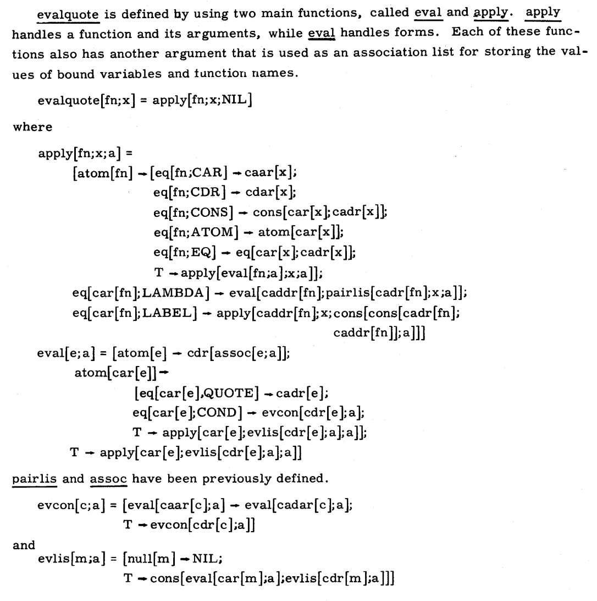
Alright, so we now have a working interpreter for a full-fledged language. But before we can feel sure of that, we should try a few more examples to confirm that we’re happy with what we have.
Extending Tests
Well, actually, we shouldn’t be too happy. Consider the following examples:
(let1E 'x (numE 1)
(let1E 'f (lamE 'y (varE 'x))
(let1E 'x (numE 2)
(appE (varE 'f) (numE 10)))))
What do we expect it to produce? If in doubt, we can write the same thing as a Racket program:
(let ([x 1])
(let ([f (lambda (y) x)])
(let ([x 2])
(f 10))))
What we see is that in Racket, the inner binding of x does not override the outer one, the one that was present at the time the function bound to f was defined. Therefore, this produces 1 in Racket.
We should want this! Otherwise, consider this program:
(let1E 'f (lamE 'y (varE 'x))
(let1E 'x (numE 1)
(appE (varE 'f) (numE 10))))
This corresponds to
(let ([f (lambda (y) x)])
(let ([x 5])
(f 3)))
which has an unbound identifier (x) error. But our interpreter produces 1 instead of halting with an error, which leads us right back to ☠️dynamic scope ☠️!
Return to Static Scope
Exercise: Run the following programs in the Stacker.
So how do we fix this? The examples above actually give us a clue, but there is another source of inspiration as well. Do you remember that we started with substitution? We’ll walk through these examples in Racket, so that you can run each of them directly and check that they produce the same answer. Consider again this program:
(let ([x 1])
(let ([f (lambda (y) x)])
(let ([x 2])
(f 10))))
Substituting 1 for x produces:
(let ([f (lambda (y) 1)])
(let ([x 2])
(f 10)))
Substituting f produces:
(let ([x 2])
((lambda (y) 1) 10))
Finally, substituting x with 2 produces (note that there are no xs left in the program!):
((lambda (y) 1) 10)
When you see it this way, it’s clear why the later binding of x should have no impact: it’s a different x, and the earlier x has effectively already been substituted. Since we have agreed that substitution is how we want our programs to work, our job now is to make sure that the environment actually implements that correctly.
The way to do it is to recognize that the environment represents the substitutions waiting to happen, and just remember them. That is, our representation of a function needs to also keep track of the environment at the moment of function creation:
(define-type Value
[numV (the-number : Number)]
[boolV (the-boolean : Boolean)]
[funV (var : Symbol) (body : Exp) (nv : Env)])
This new and richer kind of funV value has a special name: it’s called a closure. That’s because the expression is “closed” over the environment in which it was defined.
Terminology: A closed term is one that has no unbound variables. The body of a function may have unbound variables—like x above—but the closure makes sure that they aren’t really unbound, because they can get their values from the stored environment.
Quote: “Save the environment! Create a closure today!” —Cormac Flanagan
Quote: “Lambdas are relegated to relative obscurity until Java makes them popular by not having them.” —James Iry, A Brief, Incomplete, and Mostly Wrong History of Programming Languages
That means, when we create a closure, we have to record the environment at the time of its creation:
[(lamE v b) (funV v b nv)]
Finally, when we use a function (represented by a closure), we have to make sure we use the stored environment, not the one present at the point of calling the function, which is the dynamic one:
[(appE f a) (let ([fv (interp f nv)]
[av (interp a nv)])
(type-case Value fv
[(funV v b nv)
(interp b (extend nv v av))]
[else (error 'app "didn't get a function")]))]
Just to be clear: in the code above, the nv in the funV case intentionally shadows the nv bound at the top of the interpreter. Thus, the call to extend extends the environment from the closure, rather than the one present at the point of the call.
Exercise: Notice that the function and argument expressions (f and a, respectively) are evaluated in the environment given to the interpreter, not the one inside the closure. Is this correct? Or should they be using the closure’s environment?
You can do two things: argue from first principles or argue with examples. In the latter case, you would modify the interpreter to make the other choice. You would then use a sample input that produces different answers depending on which environment is used, indicate which one is correct (showing what the equivalent Racket program would produce can be a good argument), and use that to justify the chosen environment. Hint: One of these you will need to argue from first principles, the other you should be able to argue using a program.
A Subtle Test
In the examples above, we always use the closure in the scope in which it was defined. However, our language is actually more powerful than that: we can return a closure and use it outside the scope in which it was defined. Here’s a sample Racket program:
((let ([x 3])
(lambda (y) (+ x y)))
4)
Do Now: Take a moment to read it carefully. What should it produce?
First we bind the x, then we evaluate the lambda. This creates a closure that remembers the binding to x. This closure is the value returned by this expression:
((let ([x 3])
(lambda (y) (+ x y)))
4)
This value is now applied to 4. It’s legal to do this, because the value returned is a function. When we apply it to 4, that evaluates the sum of 4 and 3, producing 7. Sure enough, translating this and sending it to our interpreter produces 7:
(test (interp (appE (let1E 'x (numE 3)
(lamE 'y (plusE (varE 'x) (varE 'y))))
(numE '4))
mt-env)
(numV 7))
Exercise: Here’s another test to try out, written as a Racket program:
((let ([y 3])
(lambda (y) (+ y 1)))
5)
What does it produce in Racket? Translate it and try it in your interpreter.
••••• Syntactic Sugar •••••
We have now seen the essence of a small core language. In practice, programming languages need to also be usable. To do this, they have to provide features that make programming convenient. We will see they can do this while minimizing their effort and pain.
How SMoL Becomes Large
We have already been introduced to the idea of SImPl, the Standard Implementation Plan. The core idea is that the program’s syntax is represented as abstract syntax using a (mutually) recursive algebraic datatype, and we then write a similar (mutually) recursive program to process it. What that program produces depends on the process we are trying to implement: an interpreter produces values, a compiler produces programs (in another language), a type-checker produces judgments about type-correctness (and more, as we’ll soon see), and so on. But they all have the same basic structure.
In practice, this means that a SImPl needs to have a case to handle each of the constructs in the language. This is not a problem in principle, but it can become onerous in practice. Suppose we have two constructs that have a lot of repetition. Not only does it mean we have to duplicate programming, it also means we have to duplicate maintenance: if we fix a bug in one, we have to remember to fix it in the other in the corresponding way.
Redundancy in Languages
Where might we find such redundancy? There are several examples in real languages. For instance, many languages have both for and while loops. Consider a typical for loop in C:
for(x = 0; x < 10; x++) {
sum += x;
}
This is exactly the same as
x = 0;
while (x < 10) {
sum += x;
x++;
}
There is, in fact, a general pattern:
for(INITIAL; CONDITIONAL; UPDATE) {
sum += x;
}
is the same (with some syntactic liberties) as
INITIAL;
while (CONDITIONAL) {
sum += x;
UPDATE;
}
Now imagine you’re writing an interpreter for this. Clearly, the while loop’s implementation has to make several recursive calls, iterate, check, and perhaps perform some other bookkeeping (and maybe even manage temporary scope extensions). All of that work has to be duplicated for for! Wouldn’t it be much simpler to instead implement it just once, and translate the for body into a while body?
Why have both constructs at all? Because each one is convenient for different purposes. In particular, there’s a certain stylistic use of while that would be harder to spot from a mass of while code that is automatically classified for us with for. It adds to our vocabulary as programmers. It just happens to also add to our pain as implementors. We’d like the convenience and richer vocabulary without the pain.
Desugaring
This introduces a distinction between a core language and a surface language. The surface language may have various conveniences, but these get translated into the core language, whose constructs are all handled directly. The extra constructs—those that make it “sweeter” to program—are called syntactic sugar. The program that translates surface programs down to the core is called a desugarer, because it removes sugar. (In principle, a desugarer is actually a compiler from the surface language to the core language. However, since the core language is a sub-language of the surface, this is a very special case of compilation, and we find it useful to have a special term to distinguish it from general compilation. Just like we find it useful to have a special term to distinguish for from the general while…)
Aside: In a real implementation, this compilation requires a little more care. Suppose you make an error using for, but the error was reported in terms of while: you’d be pretty confused, because you never did type the while. As a special case, you may be a student who doesn’t even know what while is! Modern desguaring systems, such as that in Racket, have special support to take care of this in most of the common cases.
There are actually many more desugarings in real languages. For instance, and and or can desugar into nested ifs. In JavaScript, o.x desugars into o["x"] (which will be relevant in a while). In many languages, x += y is sugar for x = x + y. In Python, + desugars into the method __add__. In fact, Python has a whole bunch of these desugarings; these methods are called “dunder” methods (short for double-underscore), and a whole programming style of “protocols” has evolved around it. Many languages (like Haskell and Python) have list comprehensions, which desugar into function and method calls. And so on. In short, desugaring is everywhere in programming. If you don’t notice it, that’s part of the point: it feels like you’re working with a larger surface syntax than the implementor has to manage.
There are many ways in which desugaring can be implemented. One way is to parse the program normally, then rewrite the AST into a subset of the same AST. But in some languages, especially those with parenthetical syntax, there are two levels of parsing: the coarser parenthetical level and the finer level of ASTs. This means we can perform rewriting on the parenthetical terms, and the internal AST never needs to know about the sugars (i.e., it need cover only the core language). These are typically called macro systems: systems in which program source (slightly abstracted) is rewritten into program source, before parsing takes place. It’s important to understand that most languages have syntactic sugar, but very few languages have macro systems, which provide program rewriting capabilities directly to the programmer (as opposed to hiding them inside the compiler).
Macros By Example
Racket is one of the few languages to have a macro system, and in fact has a very powerful one. Its rarity means ideas we learn using macros will take some effort to port to other languages; but its power means we can write quite sophisticated systems by leveraging the full power of Racket, and we will do so. In essence, Racket macros compile an extended version of Racket—call it Racket++, if you like—down to Racket, where we can then exploit the full power of the existing Racket framework.
We will introduce the Racket macro system through a series of examples. In what follows, please switch to using
#lang racket
because the restrictions and types of plait, while very useful for writing interpreters, can get in the way of some of what we’ll write.
A New Conditional
Recall that Racket is a truthy/falsy language, where if takes any non-false value to be true. Suppose we want a strict if that takes only Booleans. That is, we want to extend Racket itself with a strict-if. Let’s try this:
(define (strict-if C T E)
(if (boolean? C)
(if C T E)
(error 'strict-if "expected a boolean")))
Try examples like:
(strict-if true 1 2)
(strict-if 0 1 2)
Seems to work as desired!
Do Now: Do you see what the problem is?
The problem is that we have an eager language (this is true of SMoL in general!), so strict-ifs arguments are going to be evaluated before the body begins to execute. However, the whole point of a conditional is to avoid evaluating part of the evaluation: Try
(strict-if true 1 (/ 1 0))
Compare this to what happens with
(if true 1 (/ 1 0))
Okay, so we can’t use functions for this purpose. We need some other definition mechanism that consumes the syntax and rewrites that, instead of letting it evaluate right away. These are macros.
Let’s dive into how the macro is written, because it’s not so different from the function:
(define-syntax strict-if
(syntax-rules ()
[(strict-if C T E)
(if (boolean? C)
(if C T E)
(error 'strict-if "expected a boolean"))]))
What are the pieces? define-syntax says we’re defining a new piece of syntax (as opposed to a function). syntax-rules introduces a pattern-matcher (for now, ignore what the () means: but you do need to include it). Each rule, in brackets, is a pattern and output: if the input matches the pattern, then the desugarer (here called a macro expander) produces the corresponding output, but with the names in the pattern (here, C, T, and E) copied as program source into the output. Thus, given
(strict-if true 1 (/ 1 0))
the above macro definition transforms it into
(if (boolean? true)
(if true 1 (/ 1 0))
(error 'strict-if "expected a boolean"))
which then evaluates exactly as we’d expect.
One nice feature of Racket is the Macro Stepper (). It shows the program expanding step-by-step, which is useful both for understanding macros and debugging them. If necessary, change the “Macro hiding” option at the bottom-left to read “Standard”.
Exercise: Try it out with the above macro definition and use. See what you get. Observe how, at each step, it highlights the macro use about to be expanded followed by the result of that expansion.
Note: The Macro Stepper is not an evaluator. It does not show the steps of evaluation, only the steps of expansion! Thus, if you write a program that will produce an error at run-time, the Macro Stepper does not show that error. It only shows syntax errors.
Local Binding
Now let’s look at the let bindings we’ve been using until now. Imagine we want to extend Racket with a let1 construct: for example, we want
(let1 (x 3) (+ x x))
to evaluate to 6.
Do Now: Can let1 be defined as a function? Why or why not?
let1 can’t be a function. If it were, we would first try to evaluate each of the sub-terms as arguments. There are two things here that look like argument expressions: (x 3) and (+ x x). Suppose we try to evaluate (x 3). First of all, it looks like an application. Second, x isn’t even bound. Third, there is no meaningful “value” it could produce: its only job is instead to bind x. No, let1 is also a new piece of syntax.
Terminology: We will often refer to these new pieces of syntax as constructs (as in, “a new language construct”). In the Lisp/Scheme/Racket community, these are sometimes also called special forms, because they are syntactic forms with their own special rules for binding and evaluation.
From now on we’ll use the prefix my- on our macros, because we don’t want to clash with the names of macros already built into Racket.
From what we’ve seen above, we can probably figure out half of the macro for my-let1:
(define-syntax my-let1
(syntax-rules ()
[(my-let1 (var val) body)
…]))
But what would it expand into? We certainly could just expand it into the existing let construct in Racket, but there’s another interesting option.
Let’s think about what my-let1 does: it binds a name to a value, and then immediately evaluates its body in an environment extended by its name. Now, can we think of anything else that binds names to values? Yes, functions. And functions evaluate a body in an extended environment. When do functions evaluate their body? When they are applied to an argument. Therefore, we can express my-let1 in terms of an anonymous function that is applied immediately:
(define-syntax my-let1
(syntax-rules ()
[(my-let1 (var val) body)
((lambda (var) body) val)]))
Sure enough,
(my-let1 (x 3) (+ x x))
will produce 6. Use the Macro Stepper to see how!
Terminology: This pattern, of an anonymous function that is used right away, is commonly called left-left-lambda (where “left” stands for left-parenthesis). For a long time this remained an obscure term in the Lisp/Scheme community. But JavaScript made this pattern popular again under the name Immediately Invoked Function Expression (IIFE), because of problems with the handling of scope in earlier versions of the language. If you think the parentheses look bad here, look up some examples of IIFE on the Web.
Exercise: Suppose we make a mistake in the macro and swap two parts:
(define-syntax my-let1
(syntax-rules ()
[(my-let1 (var val) body)
((lambda (var) val) body)]))
What happens when we try to evaluate
(my-let1 (x 3) (+ x x))
? Use the Macro Stepper to see what happened.
Binding More Locals
As we have noticed in Racket, however, the let can bind many names at once, not only one. It becomes clear how: the function takes formal arguments, and is applied to just as many actual arguments. There can be as many as we want! But how do we express this in macro syntax?
In mathematics, it’s common to use ellipses (…) to denote a sequence of arbitrary length. Therefore, it would be nice if we could write something like this:
(define-syntax my-let2
(syntax-rules ()
[(my-let2 ([var val] ...) body)
((lambda (var ...) body) val ...)]))
This would say, my-let2 is followed by any number of var-val pairs, followed by a body. Turn that into a lambda with all the vars as formal arguments, whose body is body, applied to all the same vals as the actual argument expressions. We would use it like so (the extra parens are to help us group the bindings):
(my-let2 ([x 3] [y 4]) (+ x y))
In fact, that is exactly the syntax supported by Racket! Try out the above program: run it, and also examine it in the Macro Stepper!
Multi-Armed Conditionals
Here’s one last example that clarifies what … means: it means “zero or more instances of the preceding pattern”. Using it, we can define our own multi-armed conditional. Suppose we want to define a function called sign that produces a string based on the sign of a number:
(define (sign n)
(my-cond
[(< n 0) "negative"]
[(= n 0) "zero"]
[(> n 0) "positive"]))
Again, it’s clear that my-cond can’t be a function; we need to extend the language with a new construct, using a macro.
How many arms should our multi-armed conditional have? As many as the programmer wants, of course. We’ll further stipulate that if we have exhausted all the questions and none has yielded a true value, the “falling through” produces an error.
Thus, we want to peel off the first question-answer pair and evaluate the question. If it succeeds, we evaluate the answer. Otherwise, we want to recur on the remaining questions…which is essentially a smaller instance of my-cond. (That’s right, we’re recurring on syntax now!)
Since … means “zero or more”, we end up with a pattern where we repeat a pattern: the first copy peels off the first instance, while the second, followed by a …, captures all the remaining instances:
(define-syntax my-cond
(syntax-rules ()
[(my-cond) (error 'my-cond "should not get here")]
[(my-cond [q0 a0] [q1 a1] ...)
(if q0
a0
(my-cond [q1 a1] ...))]))
Exercise: Examine this code in detail. Try out the example above. It’s essential that you run this through the Macro Stepper: you’ll learn a lot about macros from this example!
More on Macros
Note: All the examples from this chapter you can find in a video on YouTube, so if you prefer, you can watch that instead: More on Macros. Be sure to stop and reflect after each example, and try each of them out for yourself!
Now let’s start to look at various idiomatic aspects of using Racket macros. We’ll want this understanding under our belt because we’ll make use of several of these features. Here are five concrete things we’ll see:
- A convenience in definitions
- A major and critical macro feature
- An important idiom in truthy/falsy languages
- A peril in macro definitions
- A push to generalize definitions
A Definitional Convenience
Supposing we want to define a “one-armed if” (e.g., useful for checking erroneous conditions and proceeding only if the coast is clear): this is commonly called unless. We can write it this way:
(define-syntax unless
(syntax-rules ()
[(_ cond body ...)
(if (not cond)
(begin
body
...)
(void))]))
For instance, we can use it this way:
(unless false
(println 1)
(println 2))
Notice that in the pattern, we don’t have to repeat the `unless`; we can just use an `_` instead.
Aside: The full truth is, this isn’t just a convenience. They actually do slightly different things that you can detect in subtle situations. You can safely, and should, just use _ instead of repeating the name of the macro.
Name Capture
But now, what if we use the above code in this kind of context:
(let ([not (λ (v) v)])
(unless false
(println 1)
(println 2)))
This seems problematic: it seems to expand into
(let ([not (λ (v) v)])
(if (not false)
(begin
(println 1)
(println 2))
(void)))
which is pretty much the opposite of what we want. That’s because the not outside the macro seems to have captured the not inside the macro. This is roughly analogous to dynamic scope: any use context can modify what happens inside the abstraction. If this were true, it would be terrifying to be a macro writer!
Do Now: Run both versions. Do they produce the same answer?
But running the macro version makes clear that the name not is not being captured. Most of all, use the Macro Stepper to see how the expansion works. The important thing is that variables are more than just names; they record binding information, which keeps names introduced in different settings separate. They may print the same way, but internally Racket keeps them separate (and shows this separation in the Macro Stepper using colors). That is, it’s as if we start with this program:
(let ([not (λ (v) v)])
(unless false
(println 1)
(println 2)))
which, after expansion, turns into this program:
(let ([not (λ (v) v)])
(if (not false)
(begin
(println 1)
(println 2))
(void)))
So now we can easily keep the identifiers apart: the red not is different from the blue not. The actual internal representation is an efficient analog to colors. If necessary, the macro expander can also use distinct fresh (i.e., previously unused) names—not1, not2, etc.—to represent the different variables of the same name.
This property, which recovers an analog of static scoping for macros, and is called hygiene. Hygiene is a critical feature for macros (and, notably, is one not given by the C pre-processor). It lets programmers use whatever name they want in the macro definition without worrying about what names will be bound in the use context; and similarly, lets users use whatever variable names they want without worrying about the macro’s code.
That said, you may wonder whether hygiene is just for built-in functions like not. We’ll see that it’s not. But to get there, we’ll work through some other idiomatic examples.
A Truthy/Falsy Idiom
Unrelated to macros, here’s something we often see in truthy/falsy languages. Consider a two-arm or, which we can define as a macro:
(define-syntax or-2
(syntax-rules ()
[(_ e1 e2)
(if e1
true
e2)]))
This works well enough for
(or-2 true false)
(or-2 false false)
(or-2 false true)
However, consider a function like member:
(member 'y '(x y z))
When it succeeds, it doesn’t just return true, it returns the entire rest of the list (which is a truthy value). But if we combine this with or-2:
(or-2 (member 'y '(x y z)) "not found")
This is clearly not the result we want: we’ve lost the useful return value. Instead, here’s a different macro that returns rather than suppressing that result:
(define-syntax or-2
(syntax-rules ()
[(_ e1 e2)
(if e1
e1
e2)]))
This makes
(or-2 (member 'y '(x y z)) "not found")
work as expected.
A Macro Definition Peril
However, this macro contains a subtle (almost hidden), important peril. Consider this example:
(or-2 (print "hello") "not found")
That also returns a truthy value, but now we see the print twice. So we need
(define-syntax or-2
(syntax-rules ()
[(_ e1 e2)
(let ([v e1])
(if v v e2))]))
Exercise: Confirm that this produces the correct answer.
Back to Hygiene
This now works fine for the printing example. But now we have to worry about
(let ([v 1])
(or-2 false v))
Using fresh names, there are two things this could expand into:
(let ([v 1])
(let ([v false])
(if v
v
v)))
(let ([v0 1])
(let ([v1 false])
(if v1
v1
v0)))
Which does the macro version produce? That’s right, the latter: the one corresponding to
(let ([v 1])
(let ([v false])
(if v
v
v)))
In other words, hygiene works just as well for local variables, not just for built-in functions! In other words, we have spent a whole bunch of time on something you don’t need to worry about. In return, it means you can use names with impunity in your macro programs, just as you do inside functions and methods because of static scoping.
Generalizing Macros
Finally, unlike the poor programmers stuck with their infix syntaxes and binary operators, parenthetical syntax programmers can generalize constructs to arbitrary arity. We’ve seen … already; let’s put it to work here to create an n-ary or. A natural first definition is
(define-syntax orN
(syntax-rules ()
[(_ e1 e2 ...)
(let ([v e1])
(if v v (orN e2 ...)))]))
Do Now: However, see what happens when we try:
(let ([v true])
(orN false v))
Okay, so that doesn’t work. It’s important to pay attention to the error message:
orN: bad syntax in: (orN)
This highlights the need for a base case. The problem is our definition above requires one or more sub-expressions: e1 is the first, and e2 … means zero or more from the second position onward. But nothing covers the case of no sub-terms. So we need
(define-syntax orN
(syntax-rules ()
[(_) false]
[(_ e1 e2 ...)
(let ([v e1])
(if v v (orN e2 ...)))]))
and of course this works fine.
Exercise: The problem above appears to have been self-inflicted: why did we start with the pattern (_ e1 e2 ...), which requires one-or-more (e1 is the first, e2 … is zero or more)? We should have just written (_ e...) instead, which would be zero-or-more! Rewrite the orN macro using this pattern: can you make it work?
••••• Objects •••••
Objects—the bundling of data with operations over them—are a generalization of closures. Many languages have objects, but in a variety of different forms.
A Standard Model of Objects
Now we’re ready to start looking at our first major language feature that goes beyond SMoL: objects. Not all SMoL languages have objects; though many do, they have them in very different ways. Nevertheless, what we will see is that there is a fairly uniform way to think about objects across all these languages, and furthermore this way of thinking really builds on our understanding of SMoL.
When building the essence of objects, though, we now have a choice: we can do it either in the core or through syntactic sugar. The former is frustrating in several ways:
- We have to do more low-level bookkeeping (e.g., with environments) that may not necessarily be instructive.
- The interpreter gets larger and more unwieldy, because all the new constructs go in the same place rather than each being independent definitions.
- Most of all: it becomes a lot harder to write illustrative programs and tests, because the core language may not have all the features we need to make this convenient.
In contrast, all these problems go away if we use syntactic sugar instead. Therefore, even though a real implementation may well have at least parts of objects (especially the parts needed for efficiency) in the core language, we are going to build objects entirely through desugaring, using macros. In fact, in this book, we will do something even simpler: we will give concrete examples of what programs desugar to. Figuring out the general desugaring will be left as an exercise for you. To aid in that process, we will write code in as stylized a form as possible, not using any short-cuts that might obscure the macro rules.
Note: The programs in this section cannot be written in the language plait. Instead, we will use #lang racket, which does not perform static type-checking. Add the line
(require [only-in plait test print-only-errors])
at the top to access the testing operator and printing control parameter from plait.
Exercise: Spot the point at which the type-checker would become problematic. Hint: The easiest way is, of course, to keep using #lang plait until you run into a problem. Make sure you understand what the problem is!
What is an Object?
The central question we must answer, before we start thinking about implementations, is what an object is. There is a lot of variation between languages, but they all seem to agree that an object is
- a value, that
- maps names to
- stuff: either other values or “methods”.
From a minimalist perspective, methods seem to be just functions, and since we already have those in the language, we can put aside this distinction.
Terminology: We will use the term member to refer to a generic entry in an object, when we don’t want to make a distinction between fields and methods.
How can we capture this? An object is just a value that dispatches on a given name. For simplicity, we’ll use lambda to represent the object and Racket’s case construct to implement the dispatching. Here’s an object that responds to either add1 or sub1, and in each case returns a function that either increments or decrements:
(define o
(lambda (m)
(case m
[(add1) (lambda (x) (+ x 1))]
[(sub1) (lambda (x) (- x 1))])))
We would use this as follows:
(test ((o 'add1) 5) 6)
Aside: Observe that basic objects are a generalization of lambda to have multiple “entry-points”. Conversely, a lambda is an object with only one entry-point; therefore, it doesn’t need a “method name” to disambiguate.
Of course, writing method invocations with these nested function calls is unwieldy (and is about to become even more so), so we’d be best off equipping ourselves with a convenient syntax for invoking methods:
(define (msg o m . a)
(apply (o m) a))
This enables us to rewrite our test:
(test (msg o 'add1 5) 6)
Aside: We’ve taken advantage of Racket’s variable-arity syntax: . a says “bind all the remaining—zero or more—arguments to a list named a”. The apply function “splices” in such lists of arguments to call functions.
Observe something very subtle about our language: nothing precludes us from writing an arbitrary expression in the second position of a call to msg. That is, we can compute which member we want to access. For instance:
(test (msg o (first '(add1)) 5) 6)
This is unlike many languages with objects, which force you to write the literal name of the member (e.g., in Java, in most cases). We’ll return to this later!
Aside: This is a general problem with desugaring: the target language may allow expressions that have no counterpart in the source, and hence cannot be mapped back to it. Fortunately we don’t often need to perform this inverse mapping, though it does arise in some debugging and program comprehension tools. More subtly, however, we must ensure that the target language does not produce values that have no corresponding equivalent in the source.
Now that we have basic objects, let’s start adding the kinds of features we’ve come to expect from most object systems.
The “Object” Pattern
We can consolidate what we have written above as the “object” pattern: code that looks like
(lambda (m)
(case m
… dispatch on each of the members …))
Constructors
A constructor is simply a function that is invoked at object construction time. We currently lack such a feature, but by turning an object from a literal into a function that takes constructor parameters, we achieve this effect:
(define (o-constr x)
(lambda (m)
(case m
[(addX) (lambda (y) (+ x y))])))
(test (msg (o-constr 5) 'addX 3) 8)
(test (msg (o-constr 2) 'addX 3) 5)
In the first example, we pass 5 as the constructor’s argument, so adding 3 yields 8. The second is similar, and shows that the two invocations of the constructors don’t interfere with one another (just as we would expect from static scope).
The “Class” Pattern
We’ve actually made quite a momentous change with this small addition: we’ve gone from objects to functions-that-make-objects (notice the object pattern inside the function). But traditionally, what makes objects? Classes! And classes typically have constructors. So in the process of introducing constructors, we have actually also shifted from objects to classes. The “class” pattern, at its simplest, is:
(define (class constructor-params)
… the object pattern …)
State
Many people believe that objects primarily exist to encapsulate state.
Aside: Curiously, Alan Kay, who won a Turing Award for inventing Smalltalk and modern object technology, disagrees. In The Early History of Smalltalk, he says, “[t]he small scale [motivation for OOP] was to find a more flexible version of assignment, and then to try to eliminate it altogether”. He adds, “It is unfortunate that much of what is called ‘object-oriented programming’ today is simply old style programming with fancier constructs. Many programs are loaded with ‘assignment-style’ operations now done by more expensive attached procedures.”
We certainly haven’t lost that ability. If we desugar to a language with variables, we can easily have multiple methods mutate common state, such as a constructor argument:
(define (mk-o-state count)
(lambda (m)
(case m
[(inc) (lambda () (set! count (+ count 1)))]
[(dec) (lambda () (set! count (- count 1)))]
[(get) (lambda () count)])))
We have changed the name to mk-o-… to reflect the fact that this is an object-maker, i.e., analogous to a class. For instance, we can test a sequence of operations:
(test (let ([o (mk-o-state 5)])
(begin (msg o 'inc)
(msg o 'inc)
(msg o 'dec)
(msg o 'get)))
6)
and also notice that mutating one object doesn’t affect another:
(test (let ([o1 (mk-o-state 3)]
[o2 (mk-o-state 3)])
(begin (msg o1 'inc)
(msg o1 'inc)
(+ (msg o1 'get)
(msg o2 'get))))
(+ 5 3))
Private Members
Another common object language feature is private members: ones that are visible only inside the object, not outside it.
Aside: Except that, in Java, instances of other classes of the same type are privy to “private” members. Otherwise, you would simply never be able to implement an Abstract Data Type. Note that classes are not Abstract Data Types!
These may seem like an additional feature we need to implement, but we already have the necessary mechanism in the form of locally-scoped, lexically-bound variables:
(define (mk-o-state/priv init)
(let ([count init])
(lambda (m)
(case m
[(inc) (lambda () (set! count (+ count 1)))]
[(dec) (lambda () (set! count (- count 1)))]
[(get) (lambda () count)]))))
The code above uses lexical scoping to ensure that count remains hidden to the world. Trying to access count directly from the outside will fail.
A Refined “Class” Pattern
With this change, we can now refine our pattern for classes:
(define (class-w/-private constructor-params)
(let ([private-vars …] …)
… the object pattern …))
which we can also write as:
(define class-w/-private
(lambda (constructor-params)
(let ([private-vars …] …)
… the object pattern …)))
We’ll see in a moment why we might want to do this.
Static Members
Another feature often valuable to users of objects is static members: those that are common to all instances of the same type of object. This, however, is merely a lexically-scoped identifier (making it private) that lives outside the constructor (making it common to all uses of the constructor).
Suppose we want to keep a count of how many instances of a kind of object are created. This count cannot be inside any one of those objects, because they would not “know” about each other; rather, the constructor needs to keep track of this. This is the role of static members, and the variable counter plays this role in the following example:
(define mk-o-static
(let ([counter 0])
(lambda (amount)
(begin
(set! counter (+ 1 counter))
(lambda (m)
(case m
[(inc) (lambda (n) (set! amount (+ amount n)))]
[(dec) (lambda (n) (set! amount (- amount n)))]
[(get) (lambda () amount)]
[(count) (lambda () counter)]))))))
We’ve written the counter increment where the “constructor” for this object would go, though it could just as well be manipulated inside the methods.
To test it, we should make multiple objects and ensure they each affect the global count:
(test (let ([o (mk-o-static 1000)])
(msg o 'count))
1)
(test (let ([o (mk-o-static 0)])
(msg o 'count))
2)
It is productive to see how this program runs through the Stacker. For simplicity, we can ignore most of the details and focus just on the core static pattern. Here is a Stacker-friendly translation:
#lang stacker/smol/hof
(defvar mk-o-static
(let ([counter 0])
(lambda (amount)
(begin
(set! counter (+ 1 counter))
(lambda (m)
(if (equal? m "get")
(lambda () amount)
(if (equal? m "count")
counter
(error "no such member"))))))))
(defvar o1 (mk-o-static 1000))
(defvar o2 (mk-o-static 0))
(o1 "count")
(o2 "count")
Run this and see how the static member works!
A Re-Refined “Class” Pattern
Now we can refine our pattern for classes even further:
(define class-w/-private&static
(let ([static-vars …] …)
(lambda (constructor-params)
(let ([private-vars …] …)
… the object pattern …))))
Put differently:
(define class-w/-private&static
(let ([static-vars …] …)
… the class-w/-private pattern …))
Exercise: Statics, as defined here, are accessed through objects. However, statics by definition belong to a class, not to objects, and hence should be accessible through the class itself—for instance, even if no instances of the class have ever been created. (In the working example above, one should be able to access the count when it is still 0.) Modify the pattern above to respect this by making static members be accessible directly through the class rather than through objects.
Objects with Self Reference
Until now, our objects have simply been packages of named functions: functions with multiple named entry-points, if you will. We’ve seen that many of the features considered important in object systems are actually simple patterns over functions and scope, and have indeed been used—without names assigned to them—for decades by programmers armed with lambdas.
What this means is that the different members are actually independent of each other: they can’t, for instance, directly reference one another. This is too limiting for a true object system, where a method has a way of referencing the object it is part of so that it can use other members of that object. To enable this, many object systems automatically equip each object with a reference to itself, often called self or this. Can we implement this?
Aside: I prefer this slightly dry way of putting it to the anthropomorphic “knows about itself” terminology often adopted by object advocates. Indeed, note that we have gotten this far into object system properties without ever needing to resort to anthropomorphism.
Self-Reference Using Mutation
Yes, we can! This relies on a pattern that sets up the name for the recursive reference, then uses that to create the body that will employ the recursion, and finally uses mutation to make the name refer to the defined body. For simplicity, we will go back to the object pattern, ignoring the class-related features:
(define o-self!
(let ([self 'dummy])
(begin
(set! self
(lambda (m)
(case m
[(first) (lambda (x) (msg self 'second (+ x 1)))]
[(second) (lambda (x) (+ x 1))])))
self)))
We can test it by having first invoke second. Sure enough, this produces the expected answer:
(test (msg o-self! 'first 5) 7)
Here is the above program translated into the simpler smol/fun language. Once translated, we can run it in the Stacker:
#lang stacker/smol/hof
(defvar o-self!
(let ([self 0])
(begin
(set! self
(lambda (m)
(if (equal? m "first")
(lambda (x) ((self "second") (+ x 1)))
(if (equal? m "second")
(lambda (x) (+ x 1))
(error "no such member")))))
self)))
((o-self! "first") 5)
Run it for yourself! What do you learn from it? Do you see how self works?
Exercise: This change to the object pattern is essentially independent of the class pattern. Extend the class pattern to include self-reference.
Self-Reference Without Mutation
There’s another pattern we can use that avoids mutation, which is to send the object itself as a parameter:
(define o-self-no!
(lambda (m)
(case m
[(first) (lambda (self x) (msg/self self 'second (+ x 1)))]
[(second) (lambda (self x) (+ x 1))])))
Each method now takes self as an argument. That means method invocation must be modified to follow this new pattern:
(define (msg/self o m . a)
(apply (o m) o a))
That is, when invoking a method on o, we must pass o as a parameter to the method. Notice that we did not do any such thing when invoking a function! This distinguishes functions and methods.
Obviously, this approach is dangerous because we can potentially pass a different object as the “self”. Exposing this to the developer is therefore probably a bad idea; if this implementation technique is used, it should only be done in desugaring. (Unfortunately, Python exposes exactly this in its surface syntax.) Sure enough:
(test (msg/self o-self-no! 'first 5) 7)
Dynamic Dispatch
Finally, we should make sure our objects can handle a characteristic attribute of object systems, which is the ability to invoke a method without the caller having to know or decide which object will handle the invocation.
Suppose we have a binary tree data structure, where a tree consists of either empty nodes or leaves that hold a value. In traditional functions, we are forced to implement some form of conditional—such as a type-case—that exhaustively lists and selects between the different kinds of trees. If the definition of a tree grows to include new kinds of trees, each of these code fragments must be modified.
Dynamic dispatch solves this problem by making that conditional branch disappear from the user’s program and instead be handled by the method selection code built into the language. The key feature that this provides is an extensible conditional. This is one dimension of the extensibility that objects provide.
Let’s first define our two kinds of tree objects:
(define (mt)
(let ([self 'dummy])
(begin
(set! self
(lambda (m)
(case m
[(sum) (lambda () 0)])))
self)))
(define (node v l r)
(let ([self 'dummy])
(begin
(set! self
(lambda (m)
(case m
[(sum) (lambda () (+ v
(msg l 'sum)
(msg r 'sum)))])))
self)))
With these, we can make a concrete tree:
(define a-tree
(node 10
(node 5 (mt) (mt))
(node 15 (node 6 (mt) (mt)) (mt))))
And finally, test it:
(test (msg a-tree 'sum) (+ 10 5 15 6))
Observe that both in the test case and in the sum method of node, there is a reference to ’sum without checking whether the recipient is a mt or node. Instead, the language’s run-time system extracts the recipient’s sum method and invokes it. This conditional missing from the user’s program, and handled automatically by the language, is the essence of dynamic dispatch.
It’s worth noting that we didn’t have to change our pattern to add dynamic dispatch; it simply followed as a result of the rest of the design.
Aside: This property—which appears to make systems more black-box extensible because one part of the system can grow without the other part needing to be modified to accommodate those changes—is often hailed as a key benefit of object-orientation. While this is indeed an advantage objects have over functions, there is a dual advantage that functions have over objects, and indeed many object programmers end up contorting their code—using the Visitor pattern—to make it look more like a function-based organization. Read Synthesizing Object-Oriented and Functional Design to Promote Re-Use for a running example that will lay out the problem in its full glory. Try to solve it in your favorite language, and see the Racket solution.
What Else do Objects Have?
Member Name Design Space
Now we will focus on the names of members (a term we use to not distinguish between fields and methods). Also, let’s set aside the distinction between classes and objects for a moment: whether through classes or not, we eventually end up with objects, which programs use. So the two questions are:
- Is the set of member names statically fixed, or can it be changed dynamically?
- Is the member being accessed at a point statically fixed, or can it be computed dynamically?
This gives us a 2x2 table, and it’s worthwhile to ask whether each cell makes sense (and whether we’ve seen it in any real languages). We get:
| Name is Static | Name is Computed |
Fixed Set of Members | As in base Java. | As in Java with reflection to compute the name. |
Variable Set of Members
| Difficult to envision (what use would it be?). | Most “scripting” languages. |
Only one case does not quite make sense: if the member being accessed must be fixed in the source program, then the set of names is pre-decided, so it doesn’t seem to make sense to be able to dynamically change the set of members (new members would not be accessible, while deleted members would cause some existing accesses might fail). All other points in this design space have, however, been explored by languages.
The lower-right quadrant corresponds closely with languages that use hash-tables to represent objects. Then the name is simply the index into the hash-table. Some languages carry this to an extreme and use the same representation even for numeric indices, thereby (for instance) conflating objects with dictionaries and even arrays. Even when the object only handles “member names”, this style of object creates significant difficulty for type-checking and is hence not automatically desirable.
Therefore, in the rest of this section, we will stick with “traditional” objects that have a fixed set of names and even static member name references (the top-left quadrant). Even then, we will find there is much, much more to study.
What (Goes In) Else?
Until now, our case statements have not had an else clause. One reason to do so would be if we had a variable set of members in an object, though that is probably better handled through a different representation than a conditional: a hash-table, for instance, as we’ve discussed above. In contrast, if an object’s set of members is fixed, desugaring to a conditional works well for the purpose of illustration (because it emphasizes the fixed nature of the set of member names, which a hash table leaves open to interpretation—and also error). There is, however, another reason for an else clause, which is to “chain” control to another, parent, object. This is called inheritance.
Let’s return to our model of desugared objects. To implement inheritance, the object must be given “something” to which it can delegate method invocations that it does not recognize. A great deal will depend on what that “something” is.
One answer could be that it is simply another object:
(case m
...
[else (parent-object m)])
Due to our representation of objects, this application effectively searches for the member in the parent object (and, presumably, recursively in its parents). If a member matching the name is found, it returns through this chain to the original call in msg that sought the member. If none is found, the final object presumably signals a “message not found” error.
Exercise: If you know what an l-value is, then you might notice that the application (parent-object m) is like “half a msg”, just like an l-value was “half a value lookup”. Is there any connection?
Let’s try this by extending our trees to implement another method, size. We’ll write an “extension” (you may be tempted to say “sub-class”, but hold off for now!) for each node and mt to implement the size method. We intend these to extend the existing definitions of node and mt, so we’ll use the extension pattern described above. In other words, if we previously had the rough equivalent of this Java code:
class Mt { … Mt() { … } sum() { … } }
class Node { … Node(v, l, r) { … } sum() { … } }
now we want to extend it:
class MtSize extends Mt { … size() { … } … }
class NodeSize extends Node { … size() { … } … }
Aside: We’re not editing the existing definitions because that is supposed to be the whole point of object inheritance: to reuse code in a black-box fashion. This also means different parties, who do not know one another, can each extend the same base code. If they had to edit the base, first they have to find out about each other, and in addition, one might dislike the edits of the other. Inheritance is meant to sidestep these issues entirely.
Aside: Relatedly, read about the fragile base class problem.
A Java Excursion
Let’s first understand what’s going on in Java. For simplicity, let’s use a canonical “2d point” and “3d point” example. We’ll start with this class:
class Pt2 {
Pt2(int x, int y) {
System.out.println("Pt2 with " + x + " and " + y);
}
}
We can make instances of it easily enough:
class Main {
public static void main(String[] args) {
Pt2 p2 = new Pt2(1, 2);
}
}
and this prints the expected output. Now suppose we extend this class:
class Pt3 extends Pt2 {
Pt3(int x, int y, int z) {
System.out.println("Pt3 with " + z);
}
}
This won’t even compile. We will get a somewhat strange-looking error. The error is because Java is expecting to make an instance of Pt2 as well, but we have not told it how to. In the absence of anything else, it invokes a “default constructor”, which takes no parameters (because Java has no way of knowing which parameters to pass). If we modify Pt2 to instead be
class Pt2 {
Pt2() {
System.out.println("default constructor");
}
Pt2(int x, int y) {
System.out.println("Pt2 with " + x + " and " + y);
}
}
then we find that the program compiles and, if we change Main suitably,
class Main {
public static void main(String[] args) {
Pt3 p3 = new Pt3(1, 2, 3);
}
}
it runs, but perhaps without the effect we were expecting. The solution, in Java terms, is to explicitly invoke the constructor of the super-class:
class Pt3 extends Pt2 {
Pt3(int x, int y, int z) {
System.out.println("Pt3 with " + z);
super(x, y);
}
}
but this won’t work either: Java expects the super invocation to be the first thing in the sub-class’s constructor.
As the error message above reveals, hidden in the constructor of the extended class is lurking something important: it tries to create an instance of the super-class, just as if we had written new Pt2. This is entirely masked by the syntactic sugar of super. The actual Pt2 instance is hidden out of sight, and it takes a little effort to coax it into view.
To see it, let’s first add some instance variables:
class Pt2 {
public int x;
Pt2(int x, int y) {
this.x = x - 3;
System.out.println("Pt2 with " + x + " and " + y);
}
}
class Pt3 extends Pt2 {
public int x;
Pt3(int x, int y, int z) {
super(x, y);
this.x = x + 7;
System.out.println("Pt3 with " + z);
}
}
We’ve purposely made the instance variables have values that look different from those of the parameters, so that when we try to examine them, we can tell them apart. Now let’s modify the constructor to make two objects:
class Main {
public static void main(String[] args) {
Pt3 p3345 = new Pt3(3, 4, 5);
Pt3 p3678 = new Pt3(6, 7, 8);
}
}
Two objects…how many objects did we really make? Well, we made at least two, because adding
System.out.println(p3345.x);
System.out.println(p3678.x);
to the constructor shows that there are two different objects with two different values for x. So far, so unsurprising.
However, I’ve claimed that there are two more objects, of type Pt2. Can we see them? Yes, in fact, we can. The problem is that they’re of type Pt2, and what we have are Pt3 objects. We can’t just make a Pt2, because that doesn’t reveal the hidden Pt2. But in fact the Java type system lets us get to the Pt2 by casting:
System.out.println(((Pt2)p3345).x);
System.out.println(((Pt2)p3678).x);
And that’s how we can see that there are actually two Pt2 objects lurking as well!
Extending Classes
Now we have to port all this code over to our world of desugaring. Is this the constructor pattern?
(define (node/size parent-object v l r)
...)
That suggests that the parent is at the “same level” as the object’s constructor fields. That seems reasonable, in that once all these parameters are given, the object is “fully defined”. However, we also still have
(define (node v l r)
...)
The crucial issue here is that we need to make two objects: one of node/size and one more of node. We could imagine a protocol where the user of node/size constructs a node object and passes it to node/size, but in doing so, they could make any number of mistakes. Alternatively, we can leave it to node/size to invoke node, and keep track of the object constructed through this process. That is, node/size’s parent parameter should not be the parent object but rather the parent object’s maker.
(define (node/size parent-maker v l r)
(let ([parent-object (parent-maker v l r)]
[self 'dummy])
(begin
(set! self
(lambda (m)
(case m
[(size) (lambda () (+ 1
(msg l 'size)
(msg r 'size)))]
[else (parent-object m)])))
self)))
(define (mt/size parent-maker)
(let ([parent-object (parent-maker)]
[self 'dummy])
(begin
(set! self
(lambda (m)
(case m
[(size) (lambda () 0)]
[else (parent-object m)])))
self)))
Then the object constructor must remember to pass the parent-object maker on every invocation:
(define a-tree/size
(node/size node
10
(node/size node 5 (mt/size mt) (mt/size mt))
(node/size node 15
(node/size node 6 (mt/size mt) (mt/size mt))
(mt/size mt))))
Aside: Note the repeated pattern of invoking the “super” class: e.g., (mt/size mt). We would instead want to do this just once. Essentially, this binding of mt/size to mt is precisely what the extends clause of Java does. We could simulate that here, but later in this chapter we’ll see a much more elegant way of achieving this end while also making programming with classes much more flexible.
We can confirm that both the old and new tests still work:
(test (msg a-tree/size 'sum) (+ 10 5 15 6))
(test (msg a-tree/size 'size) 4)
Exercise: Rewrite this block of code using self-application instead of mutation.
What we have done is capture the essence of a class. Each function parameterized over a parent is...well, it’s a bit tricky, really. Let’s call it a class extension—we’ll soon see why. A class extension corresponds to what a Java programmer defines when they write:
class NodeSize extends Node { ... }
Exercise: So why are we going out of the way to not call it a “class”?
When a developer invokes a Java class’s constructor, it in effect constructs objects all the way up the inheritance chain (in practice, a compiler might optimize this to require only one constructor invocation and one object allocation). These are effectively “personal” copies of the objects corresponding to the parent classes (personal, that is, up to the presence of static members). There is, however, a question of how much of these objects is visible. Java chooses that—unlike in our implementation above—only one method of a given name (and signature) remains, no matter how many there might have been on the inheritance chain, whereas every field remains in the result, and can be accessed by casting. The latter makes some sense because each field presumably has invariants governing it, so keeping them separate (and hence all present) is wise. In contrast, it is easy to imagine an implementation that also makes all the methods available, not only the ones lowest (i.e., most refined) in the inheritance hierarchy. Many scripting languages take the latter approach.
Exercise: The code above is not what we would really want as programmers. The self-reference is to the same syntactic object, whereas it needs to refer to the most-refined object: this is known as open recursion. Modify the object representations so that self always refers to the most refined version of the object. Hint: You will find the self-application method (Self-Reference Without Mutation) of recursion handy.
Aside: This demonstrates the other form of extensibility we get from traditional objects: extensible recursion.
Extending Prototypes
In our description above, we’ve supplied each class with a description of its parent class. Object construction then makes instances of each as it goes up the inheritance chain. There is another way to think of the parent: not as a class to be instantiated but, instead, directly as an object itself. Then all children with the same parent would observe the very same object, which means changes to it from one child object would be visible to another child. The shared parent object is known as a prototype.
Aside: The archetypal prototype-based language is Self. Though you may have read that languages like JavaScript are “based on” Self, there is value to studying the idea from its source, especially because Self presents these ideas in their purest form.
Some language designers have argued that prototypes are more primitive than classes in that, with other basic mechanisms such as functions, one can recover classes from prototypes—but not the other way around. That is essentially what we have done above: each “class” function contains inside it an object description, so a class is an object-returning-function. Had we exposed these as two different operations and chosen to inherit directly an object, we would have something akin to prototypes.
Exercise: Modify the inheritance pattern above to implement a Self-like, prototype-based language, instead of a class-based language. Because classes provide each object with distinct copies of their parent objects, a prototype-language might provide a “clone” operation to simplify creation of the operation that simulates classes atop prototypes.
Multiple Inheritance
Now you might ask, why is there only one fall-through option? It’s easy to generalize this to there being many, which leads naturally to multiple inheritance. In effect, we have multiple objects to which we can chain the lookup, which of course raises the question of what order in which we should do so.
It would be bad enough if the ascendants were arranged in a tree, because even a tree does not have a canonical order of traversal: take just breadth-first and depth-first traversal, for instance (each of which has compelling uses). Worse, suppose a blob A extends B and C; but now suppose B and C each extend D. Now we have to confront this question: will there be one or two D objects in the instance of A? Having only one saves space and might interact better with our expectations, but then, will we visit this object once or twice? Visiting it twice should not make any difference, so it seems unnecessary. But visiting it once means the behavior of one of B or C might change. And so on. As a result, virtually every multiple-inheritance language is accompanied by a subtle algorithm merely to define the lookup order.
This infamous situation is called the “diamond problem” (or even, “the Deadly Diamond of Death”!). If you choose to include multiple inheritance in your language you can lose yourself for days in design decisions on this. Because it is highly unlikely you will find a canonical answer, your pain will have only begun. Multiple inheritance is only attractive until you’ve thought it through.
Class Extensions: Mixins and Traits
When we write class in Java, what are we really defining between the opening and closing braces? It is not the entire class: that depends on the parent that it extends, and so on recursively. Rather, what we define inside the braces is a class extension. It only becomes a full-blown class because we also identify the parent class in the same place.
Naturally, we should ask: Why? Why not separate the act of defining an extension from applying the extension to a base class? That is, suppose instead of
class C extends B { ... }
we instead write:
classext E { ... }
and separately
class C = E(B)
where B is some already-defined class?
Thus far, it looks like we’ve just gone to great lengths to obtain what we had before. However, the function-application-like syntax is meant to be suggestive: we can “apply” this extension to several different base classes. Thus:
class C1 = E(B1);
class C2 = E(B2);
and so on. What we have done by separating the definition of E from that of the class it extends is to liberate class extensions from the tyranny of the fixed base class. We have a name for these extensions: they’re called mixins.
Mixins make class definition more compositional. They provide many of the benefits of multiple-inheritance (reusing multiple fragments of functionality) but within the aegis of a single-inheritance language (i.e., no complicated rules about lookup order). Observe that when desugaring, it’s actually quite easy to add mixins to the language. A mixin is just a “function over classes”. Because we have already determined how to desugar classes, and our target language for desugaring also has functions, and classes desugar to expressions that can be nested inside functions, it becomes almost trivial to implement a simple model of mixins.
Aside: This is a case where the greater generality of the target language of desugaring can lead us to a better construct, if we reflect it back into the source language.
In a typed language, a good design for mixins can actually improve object-oriented programming practice. Suppose we’re defining a mixin-based version of Java. If a mixin is effectively a class-to-class function, what is the “type” of this “function”? Clearly, mixins ought to use interfaces to describe what they expect and what they provide. Java already enables (but does not require) the latter, namely classes can say what interfaces they provide. However, it does not enable the former, namely specifying its parent as an interface: a class (extension) in Java extends its parent class—with all the parent’s members visible to the extension—rather than an interface that stands for the parent (or any other class that matches that same interface). That means it obtains all of the parent’s behavior, not a specification thereof. In turn, if the parent changes, the class might break. Mixins help break this asymmetry between extension and provision.
In a mixin language, we can instead write
mixin M extends I1 implements I2 { ... }
where I1 and I2 are interfaces. Then M can only be applied to a class that satisfies the interface I1, and in turn the language can ensure that only members specified in I1 are visible in M. This becomes directly analogous to how a client of M can only see what is provided by I2, and follows one of the important principles of good software design:
Quote: “Program to an interface, not an implementation.” —Design Patterns
In short, a mixin is a class that has been turned into a function over parent classes:
M :: I1 -> I2
A good design for mixins can go even further. A class can only be used once in an inheritance chain, by definition (if a class eventually referred back to itself, there would be a cycle in the inheritance chain, causing potential infinite loops). In contrast, when we compose functions, we have no qualms about using the same function twice (e.g.: (map ... (filter ... (map ...)))). Is there value to using a mixin twice?
Aside: There certainly is! See sections 3 and 4 of Classes and Mixins.
Mixins solve an important problem that arises in the design of libraries. Suppose we have a dozen different features which can be combined in different ways. How many classes should we provide? Furthermore, not all of these can be combined with each other. It is obviously impractical to generate the entire combinatorial explosion of classes. It would be better if the developer could pick and choose the features they care about, with some mechanism to prevent unreasonable combinations. This is precisely the problem that mixins solve: they provide the class extensions, which the developers can combine, in an interface-preserving way, to create just the classes they need.
Aside: Mixins are used extensively in the Racket GUI library. For instance, color:text-mixin consumes basic text editor interfaces and implements the colored text editor interface. The latter is itself a basic text editor interface, so additional basic text mixins can be applied to the result.
Exercise: How does the analogous library in your favorite object-oriented language solve this same problem?
Mixins do have one limitation: they enforce a linearity of composition. This strictness is sometimes misplaced, because it puts a burden on programmers that may not be necessary. A generalization of mixins called traits says that instead of extending a single mixin, we can extend a set of them. Of course, the moment we extend more than one, we must again contend with potential name-clashes. Thus traits must be equipped with mechanisms for resolving name clashes, often in the form of some name-combination algebra. Traits thus offer a nice complement to mixins, enabling programmers to choose the mechanism that best fits their needs. As a result, Racket provides both mixins and traits.
••••• Types •••••
Types that are checked before program execution—what are known as static types—are a vital part of programming, and a growing number of languages either have them from the start or, realizing their importance, are adding them in various forms. Types are a common first step towards proving properties about programs. If you use a typed language, you write small proofs about your programs every day, whether you realize it or not.
Introduction to Types
We’re done with objects. Why weren’t objects in SMoL?
- Not all languages have them.
- The ones that do have them can’t seem to agree on the details (classes versus prototypes, single- versus multiple-inheritance, classes versus traits and mixins, etc.). There’s very little “standard” there.
- We can add most notions through desugaring!
Now we move on to types. We will always use the term type to refer to a static check, i.e., one that can be done purely with the program source. This means types cannot refer to dynamic conditions, and may suffer from either false-positive or false-negative errors (e.g., something that is in the code but can never run in practice may still cause a type error); in return, they give us guarantees without ever having to run the program. This is important when the program is expensive to run, impossible (e.g., it depends on conditions that can’t be reproduced by the developer), or dangerous.
Types aren’t really a part of SMoL either, but not because we can add them through desugaring (which we can’t); rather, it’s for the first two reasons: many languages don’t have them, and those that do don’t often agree on their form (in large part because of their disagreement over the nature of objects). However, there are parts they do (largely) agree on, which we will begin with.
A Standard Model of Types
Types can be thought of as abstractions of run-time values. That is, whereas at run-time we can have a very large number of numbers and strings and images (and two Booleans), we will collapse the distinctions within these and preserve only the distinctions between them. Therefore, it is instructive to start with a basic interpreter and try to build a type checker from there:
(define-type BinOp
[plus])
(define-type Expr
[binE (operator : BinOp)
(left : Exp)
(right : Exp)]
[numE (value : Number)])
(calc : (Exp -> Number))
(define (calc e)
(type-case Exp e
[(binE o l r)
(type-case BinOp o
[(plus) (+ (calc l) (calc r))])]
[(numE v) v]))
(test (calc (binE (plus) (numE 5) (numE 6))) 11)
Now let’s see what needs to happen with a type-checker. The label on the tin says “checker”: that is, the job of a type-checker is to pass judgment on programs, i.e., to determine whether or not they are type-correct. Thus, a natural type (for the type checker) would be
(tc : (Exp -> Boolean))
(In practice, of course, we would want more information in case the program is not type-correct, i.e., we’d like an error diagnostic. But we’re ignoring human factors considerations here.) With this type, we can now rewrite the relevant parts of the interpreter above:
(define (tc e)
(type-case Exp e
[(binE o l r)
(type-case BinOp o
[(plus) (and (tc l) (tc r))])]
[(numE v) #true]))
(test (tc (binE (plus) (numE 5) (numE 6))) #true)
Actually, let’s peer at this for a moment. Given a number, the type-checker returns #true. In the recursive cases, it computes the and of type-checking the pieces. And that’s it. Since there is no way to return #false, the entire type-checker must always only return #true. That is, every program is type-correct.
The problem is because we have only one type, numbers, and only one operation, also on numbers, so what could possibly go wrong? We need to extend the types and operations so that there are meaningful possibilities for errors. Therefore, suppose we add a ++ operation that concatenates strings.
(define-type BinOp
[plus] [++])
(define-type Expr
[binE (operator : BinOp)
(left : Exp)
(right : Exp)]
[numE (value : Number)]
[strE (value : String)])
Various things break, and need to be fixed. How about this?
(define (tc e)
(type-case Exp e
[(binE o l r)
(type-case BinOp o
[(plus) (and (tc l) (tc r))]
[(++) (and (tc l) (tc r))])]
[(numE v) #true]
[(strE v) #true]))
(test (tc (binE (++) (strE "hello") (strE "world"))) #true)
So this looks pretty good, right?
Do Now: This is not at all what we want! Write a test case that demonstrates that.
Here are two tests that demonstrate desirable behavior:
(test (tc (binE (++) (numE 5) (numE 6))) #false)
(test (tc (binE (plus) (strE "hello") (strE "world"))) #false)
The first string-concatenates two numbers, the second adds two strings. Therefore, both should be rejected by the type-checker. Yet both of them pass (i.e., the tests above fail).
What is the core problem here? It’s that, given an expression, we only know whether its sub-expressions typed correctly, but not what their types are. That is insufficient to determine whether the current expression is type-correct. For instance, the ++ operator needs to check not only whether its two sub-expressions are well-typed, but also whether they produced strings; if they did not, then the concatenation is erroneous.
What this shows is that we need the type-checker to have a richer type: it must instead be
(tc : (Exp -> Type))
That is, the type “checker” must actually be a type calculator, i.e., it even more closely parallels the evaluator, just over the universe of abstracted values (types) rather than concrete ones. Following convention, however, we’ll continue to call it a checker, because it also checks in the process of calculating types.
In the type declaration above, Type is a new (plait type) definition that records the possible types:
(define-type Type [numT] [strT])
With this, we can rewrite our type-“checker”:
(define (tc e)
(type-case Exp e
[(binE o l r)
(type-case BinOp o
[(plus) (if (and (numT? (tc l)) (numT? (tc r)))
(numT)
(error 'tc "not both numbers"))]
[(++) (if (and (strT? (tc l)) (strT? (tc r)))
(strT)
(error 'tc "not both strings"))])]
[(numE v) (numT)]
[(strE v) (strT)]))
(test (tc (binE (plus) (numE 5) (numE 6))) (numT))
(test (tc (binE (++) (strE "hello") (strE "world"))) (strT))
(test/exn (tc (binE (++) (numE 5) (numE 6))) "strings")
(test/exn (tc (binE (plus) (strE "hello") (strE "world"))) "numbers")
There are three take-aways from this:
- The type-checker follows the same implementation schema as the interpreter: an algebraic datatype to represent the AST, and structural recursion to process it. This is the schema we’re calling SImPl.
- A type-checker, unlike an interpreter, operates with “weak” values: note, for instance, how the numE case ignores the actual numeric values. Both the strengths and weaknesses of traditional type-checking arise from this ignorance.
- In mathematical terms, the upgrade we performed in going from a type-checker to a type-calculator was a process of strengthening the inductive hypothesis: instead of returning only a Boolean, we had to return the actual type of each expression. This may not seem like a literal strengthening; but it is inasmuch as the former #true has been replaced by a Type and the #false by an error.
Exercise: Add division to the language and type-check it.
A Concise Notation
As we extend our type system, it is increasingly unwieldy to write everything out as code. Instead, we will adopt a notation commonly used in the world of types (though it can also be used for interpreters and other SImPl programs). We will write terms of the form
|- e : T
where the e are expressions, T are types, and : is pronounced as “has type”: i.e., the notation above says “e has type T”. For now we won’t pronounce |- as anything at all; later, we will see that it should be read as “proves”.
First, we can very concisely say that all numeric expressions have numeric type and all string expressions have string type:
|- n : Num
|- s : Str
where n stands for all the syntactic terms with the syntax of numbers, and s likewise for strings. (We can think of this as an infinite number of rules, one for each number and each string. We’re in the realm of mathematics, so what’s an infinite number of rules between friends?) The former is exactly equivalent to writing
[(numC n) (numT)]
but much more concisely.
When we get to Booleans, we have a choice: we can either write
|- b : Bool
where b stands for all the syntactic terms with the syntax of Booleans, or—because there are only two of them—just enumerate them explicitly:
|- true : Bool
|- false : Bool
Okay, so these correspond to the base cases of the type-checker. These are called axioms. Now let’s get to the conditional cases, which are called (typing) rules. Remember our code for typing addition:
[(plus) (if (and (numT? (tc l)) (numT? (tc r)))
(numT)
(error 'tc "not both numbers"))]
We can write it in this notation very concisely as follows:
|- e1 : Num |- e2 : Num
--------------------------
|- (+ e1 e2) : Num
We read the line as “if (what’s above) then (what’s below)”, and the space as “and”. So this says: “if e1 has type Num and e2 has type Num, then (+ e1 e2) has type Num”. This is of course the exact same thing the code says, but with rather less noise.
Terminology: The part above is called the antecedent (that which goes before) and the part below is called the consequent (that which comes after). Don’t call these the numerator and denominator!
Growing Types: Division, Conditionals
Handling Division
Addition, multiplication, and subtraction are total functions over numbers: they consume two numbers and produce one. In contrast, division is a partial function: it isn’t defined when the denominator is zero. Therefore, we need a strategy for handling it. There are several available strategies:
- We can declare that division doesn’t return a number but instead something else that captures its partiality, such as (Optionof Number). This can work just fine. However, it means every single use of division will need to check whether it obtained a proper number or not. This can get quite onerous.
- We can declare that division only consumes non-zero numbers in its second argument. This is a major change to our type system, because until now we had lumped all numbers together into a single numeric type. This now affects all callers of division, who must now prove that they are not calling it on zero as the second argument. This is onerous in a different way. Observe that the type checker cannot automatically prove that a value is non-zero without error, because this is not decidable (see Rice’s Theorem).
- We give it the same type as other binary numeric operations, and declare that the exceptional case will be handled by an exception or error. This implicitly puts the burden on the rest of the program, which must be aware of this possibility and handle it.
For more about general strategies for handling partial functions, see
https://dcic-world.org/2022-08-28/partial-domains.html
Most programming languages have taken the third option above, which seems the most pragmatic. However, a growing number of languages are exploring the first two options. They get around Rice’s Theorem in the second case by trying to prove non-zero-ness and, when they cannot, putting the burden on the programmer. While this creates more effort for the programmer, it increases the program’s robustness.
Another Perspective on Types
We have already seen how we can think of types as abstractions of values, and type-checking as running a program over these abstract values. As we’ll soon see, the analogy will break down a bit.
Another perspective is to think of types as a static discipline: a way of statically making judgments about programs. In a way, we have already been doing just this: it’s called parsing. A parser statically (i.e., before the program runs) passes judgment (i.e., decides that some programs are good and others are bad). Types can be viewed as an extension of this idea.
Aside: In computability theory terms, parsers are usually context-free, whereas types usually reflect context-sensitive constraints. Computability theory then helps us understand why we might separate these checks into two separate phases, and in particular why we might do one before the other. Essentially, the type-checker only needs to deal with programs that have already passed the parsing, i.e., context-free check, so it has much less complexity than if it had to do everything. We already saw this: our previous checker only consumed Exprs, which are produced by the parser.
From Axioms and Rules to Judgments
When we need to apply type rules to a program, we compose them recursively, just as the type-checker runs. Consider this program:
(+ 5 (+ 6 7))
To decide its type, we will use our current rules [👉]. Observe that it does not fit any axiom, because the program does not match the syntax of a single number or string. Therefore, we have to use a conditional rule. We have seen only one so far, and fortunately this term does match the consequent: it requires two terms, and we have two terms, so e1 is 5 and e2 is (+ 6 7). Therefore, applying this conditional rule, we get:
|- 5 : Num |- (+ 6 7) : Num
----------------------
|- (+ 5 (+ 6 7)) : Num
So far, so good. Now let’s look at the two terms in the antecedent. The first one now actually matches to an axiom; therefore, we’ll mark that in green and can stop with that:
|- 5 : Num |- (+ 6 7) : Num
----------------------
|- (+ 5 (+ 6 7)) : Num
For the other, we have to apply the same conditional rule again:
|- 6 : Num |- 7 : Num
------------------------
|- 5 : Num |- (+ 6 7) : Num
----------------------
|- (+ 5 (+ 6 7)) : Num
These new terms also match the axiom for numbers, so we can mark them also in green:
|- 6 : Num |- 7 : Num
------------------------
|- 5 : Num |- (+ 6 7) : Num
----------------------
|- (+ 5 (+ 6 7)) : Num
Every part of the tree now terminates in an axiom. We therefore consider this program to have successfully type-checked. This tree is called a judgment, because it passes judgment on the initial term: in this case, judging it to have type-checked and to produce a value of type Num.
Observe closely that this is the same pattern of execution we had with the type-checker! The difference is that we were able to skip the tedious details of passing and returning things, and instead simply used pattern-matching. This will save us a fair bit of work as we go forward.
Judgments and Errors
Let’s see another example, which will illustrate an important principle:
(+ 5 (+ 6 "hi"))
This proceeds analogously to the previous example. This leaves us with the following attempted judgment:
|- 6 : Num |- "hi" : Num
---------------------------
|- 5 : Num |- (+ 6 "hi") : Num
-------------------------
|- (+ 5 (+ 6 "hi")) : Num
But now we have a problem: we need to type-check
|- "hi" : Num
but we don’t have a rule that matches. Therefore, we cannot construct a successful tree:
|- 6 : Num |- "hi" : Num
---------------------------
|- 5 : Num |- (+ 6 "hi") :
-------------------------
|- (+ 5 (+ 6 "hi")) :
Remember the “if … and … then” interpretation. Because we cannot satisfy all the antecedents, we cannot prove anything about the consequents, leaving the tree incomplete.
A type error is simply a failure to construct a judgment. It may not be the most satisfying user feedback, but our concern here is with a concise way of expressing ideas; going from this to an implementation is not too hard, and the user interface details can be added to the latter.
This requires some clarification. We only call it a judgment if the tree is “checked off” completely: i.e., every antecedent is generated using given rules, and all the leaves are actual axioms. In this example, we are unable to check off the tree: there is no available rule or axiom that lets us conclude that "hi" is a Num. Therefore, we cannot “judge” the initial expression. This is a technical meaning of the word judgment, not to be confused with potentially colloquial interpretations of the term.
Similarly, imagine that we started with this program:
(+ 5 (- 6 7))
We would get this far:
|- 5 : Num |- (- 6 7) : Num
----------------------
|- (+ 5 (- 6 7)) : Num
Again we would fail, this time because we haven’t provided a (conditional) rule for (- e1 e2). Obviously it’s not difficult to define one; we just haven’t done so yet, so our pattern-matcher would fail.
Exercise: Construct the conditional rule for ++ (string concatenation). Compare it to the code in the type-checker.
Typing Conditionals
Now we’re ready to add a rule for if. As we have seen, different languages have different rules for what can go in the conditional clause. Since the goal of a type-checker is to catch type errors, it is common for languages with type-checkers to demand that the conditional be a Boolean (without a truthy/falsy set of Boolean values). Our goal here is not to make a value judgment but rather to illustrate how we would add a type rule for it.
By now, we can see that we will need a conditional rule (because we want to type-check more than just constants); following SImPl, and we will need the antecedent to say something about the sub-expressions. Clearly, we need at least:
|- C : Bool …
------------------
|- (if C T E) : …
Okay, what now? What is the type of the entire conditional expression? Technically, it should be whatever type is returned by the branch that was executed. However, a type-checker can’t know which branch will be executed; over time, both might. So we have to somehow capture the uncertainty in this situation. There are two common solutions:
- Introduce a new kind of type that stands for “this type or that type” (a union). This is easy to introduce but creates a burden for every piece of code that will consume such a value.
- Just rule that both branches should have the same type.
The latter is a very elegant solution, because it eliminates the uncertainty entirely.
Okay, so we need to do the following things:
- Compute the type of T.
- Compute the type of E.
- Make sure T and E have the same type.
- Make this (same) type the result of the conditional.
That seems like a lot: how will we express all that? Very easily, actually:
|- C : Bool |- T : U |- E : U
-----------------------------------
|- (if C T E) : U
Here, U is a placeholder: it isn’t a concrete type but rather stands for whatever type might go in that place. The repeated use of U accomplishes all of our goals above. Read this as: “if C has type Bool and T has type U and E has [the same] type U, then (if C T E) has [the same] type U”.
Let’s see this in action on the following program:
(if true 1 2)
We get:
|- true : Bool |- 1 : U |- 2 : U
--------------------------------------
|- (if true 1 2) : U
Either of the axioms for the other two antecedents tells us what U must be, which lets us fill in the result of U everywhere:
|- true : Bool |- 1 : Num |- 2 : Num
------------------------------------------
|- (if true 1 2) : Num
Fortunately, the other two antecedents are also axioms:
|- true : Bool |- 1 : Num |- 2 : Num
------------------------------------------
|- (if true 1 2) : Num
This lets us conclude that the overall term is well-typed, and that it has type Num.
Now let’s look at:
(if 4 1 2)
Applying the conditional rule gives us:
|- 4 : Bool |- 1 : U |- 2 : U
-----------------------------------
|- (if 4 1 2) : U
However, we do not have any axiom or conditional rule that lets us conclude that 4 has type Bool (because, in fact, it does not). Therefore, we cannot complete the judgment:
|- 4 : Bool |- 1 : U |- 2 : U
-----------------------------------
|- (if 4 1 2) : U
and the program is (rightly) judged to have a type error.
One last example:
(if true 1 "hi")
Again, applying the conditional rule and checking off the first antecedent:
|- true : Bool |- 1 : U |- "hi" : U
-----------------------------------------
|- (if true 1 "hi") : U
But now we have a problem. If we apply the axiom for numbers, we replace all instances of U with Num to get:
|- true : Bool |- 1 : Num |- "hi" : Num
---------------------------------------------
|- (if true 1 "hi") : Num
Maybe we just tried the wrong axiom? We do have one more option! However, it ends up with the same net effect:
|- true : Bool |- 1 : Str |- "hi" : Str
---------------------------------------------
|- (if true 1 "hi") : Str
Because there is no way to construct a judgment for this program, it too has a type error.
Exercise: Let’s now add functions. We need two new constructs: one to introduce them (lambda) and one to use them (function application). Write down judgments for each. Hint: You may need to revisit the set of types, too.
Observe that because let desugars into lambda, once we have this, in principle we also have a conditional rule for let. (For more sophisticated language constructs this is not so straightforward; this paper works out some of the details.)
Exercise: Add desugaring to the type-checker.
Where Types Diverge from Evaluation
Something very important, and subtle, happened above. Compare the type rule for a conditional with the evaluation process [👉]. If the rule is too abstract, just look at the example judgments (or failed judgments) above. The evaluator evaluates only one branch out of T and E; indeed, that is the entire point of a conditional. The type-checker, in contrast, traverses both branches! In other words, it looks at code that might evaluate, not only code that absolutely does evaluate.
In other words, the idea that a type-checker is like an “evaluator that runs over simple values” is a convenient starting analogy, but it is in fact false. An evaluator and type-checker follow different traversal strategies. That is why a program like (if true 1 "hi") might run without any difficulty but is rejected by a type-checker. While this particular example may make the type-checker look overly pedantic, what if the same program were
(if (is-full-moon) 1 "hi")
What now? Should the type-checker pass the program every month? Should it consider the moon’s phase at the time of type-checking or at execution? Unfortunately, the type-checker doesn’t know when the program will run; indeed, the program is type-checked once but may run an arbitrary number of times. Therefore, a type-checker must necessarily be conservative.
This also lets us relate type-checking to testing. In software testing, making sure that all branches are visited is called branch coverage, and making sure all branches have coverage is both important and very difficult (because each branch may have additional branches which in turn may have even more branches which…). In contrast, a type-checker effortlessly covers both branches. The trade-off is that it does so only at the type level (and indeed, the abstraction of values to types is precisely what enables it to do this).
Thus, testing and type-checking are complementary. Type-checking provides code coverage at a lightweight level; testing typically provides only partial coverage but at the deep level of specific values. In recent years, people have invented a notion of concolic—i.e., “concrete” + “symbolic”—testing to try to create the best of both worlds.
Growing Types: Typing Functions
Now we’re ready to grow our language further, to include functions. As we’ve noted before, concepts like functions come in pairs: a way to introduce them and a way to use (“eliminate”) them. As in our interpreter, we’ll use a lambda form to represent the former and application for the latter. We’ve already seen that once we have lambda, we use syntactic sugar to obtain other forms like let, so this suffices for our core language. (Mostly, as we’ll see…)
So we have to come up with typing rules for application and lambda. Let’s do them in that order.
Typing Function Applications
A function application expression has two parts: the function and the arguments. For simplicity, we’re going to assume that we’re working with single-argument functions.
Exercise: Extend the rules below to deal with functions of arbitrary number of parameters (formally called arity).
Because functions are first-class values, the function position is itself an expression. We have to check each sub-expression before we can type the whole expression. Therefore, function applications are conditional rules with two terms in the antecedent:
|- F : ??? |- A : ???
------------------------
|- (F A) : ???
First, let’s notice that functions are different kinds of values than other values: a function is not itself a number, or string, or Boolean—it may produce one of those, but it is not itself one of those (an important distinction). Therefore, we need a different type for functions, which reflects what functions consume and what they produce. A natural idea is to assume functions have some “function” type, here called Fun:
|- F : Fun |- A : ???
------------------------
|- (F A) : ???
What do we know about the argument expression (the actual parameter)? It had better match the type demanded by the formal parameter. But how do we check that here? We’ve collapsed all functions in the world into a single type, Fun. That’s far too coarse.
Instead, following convention, we’ll use the “arrow” syntax for functions:
|- F : (??? -> ???) |- A : ???
---------------------------------
|- (F A) : ???
(Technically, the arrow is a constructor of function types. It’s a two-place constructor, for reasons we will see below.)
With this, we can now say that the function’s formal parameter’s type had better match up with the type of the actual argument. Which type, exactly? Functions could consume numbers, strings, even other functions…all we know is that these should be consistent. Notice that this is very similar to the consistency we expected of the branches of a conditional. We can again encode this by using the same placeholder in both places:
|- F : (T -> ???) |- A : T
-----------------------------
|- (F A) : ???
Now, what about what the function returns? Again, it could return values of any type. Whatever that type is, that is what the entire application produces. Again, we use a common placeholder to reflect this:
|- F : (T -> U) |- A : T
---------------------------
|- (F A) : U
So here’s how we read this:
- Type-check the F position. Make sure it’s a function type (->). Assuming it is, call the formal parameter’s type T and the return type U.
- Type-check the actual parameter (the argument). Make sure it has the same type as what the function is expecting in its formal parameter.
- If both of those hold, then the function’s return type is the type of the entire application.
This list of steps is what a conventional type-checker would implement. Observe that again, a type error is the result of a failure to construct a judgment. If, for instance, the actual argument’s type doesn’t match that of the formal parameter, then the conditional rule above doesn’t apply (it applies only when we can write the same type for the T placeholder), which is how we learn that the program has a type error.
Exercise: Construct an example to illustrate the above type-error case.
Aside: We intentionally don’t use a numbered list because formally, the semantics of judgments doesn’t say that these steps have to occur in this order! For instance, the argument can be type-checked before the function; if so, that determines what the placeholder T stands for, and the checking of F confirms that F’s type matches that.
Even more perversely, you can imagine checking the application, determining—from the context—what its type needs to be (e.g., if it’s in an addition, it had better produce a number), and using that to drive the checking of F. In fact, all of these things can happen if instead of a checker, we implement type-inference—as we will soon see.
Typing Function Definitions
Now we’re ready to type lambda. Here, we have to be careful about how many sub-expressions there are. Given (lambda V B), it is tempting to think that there are two: V (the formal parameter) and B (the body). This is wrong! The formal parameter is a literal name, not an expression: we can’t replace that name with some larger expression, which is what it would mean for it to be an expression. Furthermore, we can’t evaluate it: it would (most likely) produce an unbound variable error, because its whole job is to bind that variable, so it can’t assume it has already been bound. Therefore, there is only one sub-expression, the body.
Therefore, we expect to end up with a conditional rule that looks like this:
|- B : ???
---------------------
|- (lambda V B) : ???
If we think about this for a moment, we can see that there’s going to be a problem. We just said that the lambda introduces a binding for the variable in the V position. This is precisely so that the body, B, can make use of that variable. So let’s imagine the simplest function:
|- x : ???
---------------------
|- (lambda x x) : ???
But we don’t have any typing rule that covers variables! Furthermore, we have no way of knowing what the type of any old variable will be. So we have a problem.
Typing Variables
Remember how we addressed this problem in our interpreter: we had an environment for recording the value bound to each variable. We will use this same idea again: we’ll have a type environment for recording the type of each variable. That is, just as our interpreter had the type
(interp : (Exp Env -> Value))
our type-checker will have the type
(tc : (Exp TEnv -> Type))
In our type-checker notation, we will use a slightly different way of writing it, which will finally make make |- stop being silent and take it proper pronounciation, “proves”: all type rules will have the form
Γ |- e : T
where Γ, the capital Greek letter gamma, is conventionally used for the environment. We read this as “the environment Γ proves that e has type T”. So in fact there’s been an environment hiding in all our judgments, but we didn’t have to worry about it when we didn’t have variables; but now we do, so from now on we have to make it explicit. Fortunately, in most cases the environment is unchanged, and just passes recursively to the sub-terms, as you would expect from writing the interpreter.
With this, we can write a type for variables. What is the type of a variable? It’s whatever the environment says it is! We’ll treat the environment as a function, so we can just write the following axiom (where v stands for all the syntactically valid variable names):
Γ |- v : Γ(v)
Back to Typing Function Definitions
Now we’re in a position to fill in the holes. When we check the body of the function, we should do it in an extended environment:
Γ[V <- ???] |- B : ???
-----------------------
Γ |- (lambda V B) : ???
where Γ[V <- _] is how we write “Γ is extended with V bound to _”: this is the same environment-extension function that we’ve written before, for type environments instead of value environments, but operationally the same.
Okay, but two questions: extend which environment, and extend it with what?
Which is easy: it’s the environment of the function definition (static scope!). The repetition of Γ in both the consequent and antecedent accomplishes that.
In terms of what: We need to provide a type for the variable so that, when we try to look up its type, the environment can return something. But we don’t know what to extend it with! The type-checker needs the programmer to tell it what type the function is expecting. This is one of the reasons why programming languages expect annotations in function and method definitions. (Another—equally good—reason is because it better documents the function for people who have to use it and maintain it.)
Therefore, we have to extend the syntax of functions to include a type annotation:
(lambda V : T B)
which says that V is expecting to be bound to a value of type T in body B. Once we accept this modification, we can make progress on the conditional rule:
Γ[V <- T] |- B : ???
---------------------------
Γ |- (lambda V : T B) : ???
What type are we expecting for the function definition? Clearly it must be a function type:
Γ[V <- T] |- B : ???
------------------------------------
Γ |- (lambda V : T B) : (??? -> ???)
Furthermore, we know that the type expected by the function must be T:
Γ[V <- T] |- B : ???
----------------------------------
Γ |- (lambda V : T B) : (T -> ???)
Given a value of type T, the function will return whatever the body produces:
Γ[V <- T] |- B : U
--------------------------------
Γ |- (lambda V : T B) : (T -> U)
And that gives us our final rule for function definitions.
More Divergence Between Types and Evaluation
It is interesting to contrast the above pair of typing rules with the corresponding evaluation rules. In the evaluator, we visit the body of the function on every application—which could be as many as an infinite number of times in a program. In contrast, we visit the body of the function on definition, which happens only once. Therefore, even if the program runs forever, the type-checker is guaranteed to terminate!
Why can we get away with this? The evaluator has to run the body with the specific value it was given. The type-checker, however, has abstracted the concrete values away. Therefore, it only needs to make one pass through the body with the “abstract value”, the type.
Aside: Earlier, when we proposed the type Fun, we said that it collapsed all functions in the world into one type. This was too coarse, and we had to refine the type of a function. However, we are still collapsing an infinite number of functions into each of those function types—just as we collapse an infinite number of strings into Str, and so on. Both the strength and weakness of type-checking lies in this collapsing.
For the same reason, observe that a function application rule only cares about the type of the function, not which specific function is being applied. Therefore, any function that has that type can be used. For that same reason, the type-checker cannot traverse the function’s body at application time—it doesn’t even know which function might be used! All communication between the function body and application must happen entirely through the type boundary.
Assume-Guarantee Reasoning
There is a delicate dance going on between these typing rules for application and definition (now updated to have the environment). We’ll use colors to highlight this:
Γ |- F : (T -> U) Γ |- A : T
-------------------------------
Γ |- (F A) : U
Γ[V <- T] |- B : U
--------------------------------
Γ |- (lambda V : T B) : (T -> U)
The rule for lambda assumes the parameter will be given a value of type T; the application rule guarantees that that the actual parameter will indeed have the expected type. The application rule assumes that the function, if given a T, will produce a U (because the type is (T -> U)); the lambda rule guarantees that the function will indeed perform that way.
Aside: The notation (T -> U) is not chosen at random. The -> may remind you of the notation for implication in mathematics. That’s intentional. We can read the type as “giving the function a T implies that it will produce a U” (not giving it a T implies nothing about what it will do…). It is that implication that is assumed in the application rule, and that is guaranteed by the rule for lambda.
This assume-guarantee reasoning shows up in many places, so look out for this pattern in other places as well.
Recursion and Infinite Loops
We alluded, earlier, to how we can desugar more interesting features into functions and application. Let’s take a look at a very specific feature: an infinite loop. Let’s first confirm that we can write an infinite loop. Here’s a program that does it:
fun f():
f()
f()
But this assumes we already have recursion. Can we write it without recursion? Actually we can! We’ll use historical names (ω is the lower-case Greek omega):
(let ([ω (lambda (x) (x x))])
(ω ω))
Run this in Racket and confirm that it runs forever!
Do Now: Write a conditional type rule for let.
Now let’s see what happens when we try to type this. We have to provide a type annotation:
(let ([ω (lambda (x : ???) (x x))])
(ω ω))
Historically, the overall term is called Ω (the capital Greek omega).
Okay, so what is the annotation? To determine a type for x, we have to see how it’s used. It’s used twice. One use is in a function application position, so we know that the type must be of the form (T -> U); now we have to determine what T and U are. Let’s focus on the parameter type, T. But what are we passing in? We’re passing in x, whose type is (T -> U). So we need a solution to the equation
T = (T -> U)
with one coming from the application position and the other from the argument position. Of course, there is no finite type that can fit this equation! Therefore, it appears that this program cannot be typed!
Of course, this is not a proof. However, there is a formal property associated with this programming language, which is called the Simply Typed Lambda Calculus (STLC): the property is called strong normalization, and it means that all programs in this language terminate.
Aside: If you have heard about the Halting Problem, how does that square with what you just read?
It may seem rather useless to have a language in which all programs terminate—you can’t write an operating system, or Web server, or many other programs in such a language. However, that misses two things.
First, there are many cases where we want programs to always terminate. You don’t want a network packet filter or a device driver or a compiler or a type-checker or … to run forever. Of course we also want them to run quickly, but it would be nice if we had a guarantee that no matter what we did, we cannot create an infinite loop. The STLC is very useful in some of these settings. Another example of a place where we want guaranteed termination is in program linking, and the module language of Standard ML is therefore built atop the STLC: it lets you even write higher-order programs, but the type language guarantees that all module compositions (linkages) will terminate.
Second, many long-running programs are actually a composition of an infinite loop and a short-running program. Think about an operating system with device drivers, a Web server with a Web application, a GUI with callbacks, etc. In each case, there is a “spine” of an infinite loop that simply keeps the program reactive, and “ribs” of short computations that do a little specific work and terminate. In fact, on the Web these programs must terminate quickly, otherwise the Web browser thinks the server has hung and offers to kill the window! These kinds of reactive systems are therefore a composition of a very generic infinite loop calling out to specific programs for which a termination guarantee will often be very useful.
Finally, observe that we’ve learned something profound. Until now, we have probably thought of types as just a convenience or as a way of eliminating basic errors. However, we have just now seen that adding a type system can change the expressive power of a language. That is, these types are “semantic”.
Typing Recursion
What went wrong above? The problem is that each application “uses up an arrow” in a function type; because a program text must be finite, it can contain at most a finite number of “arrows”, so eventually the program must terminate. To get around this, we need a way to effectively have an “infinite quiver”.
We typically do this by adding a recursive function construct to the language, and create a custom type for it. Let’s start with a type rule for the analogous, but simpler, let:
Γ |- E : T Γ[V <- T] |- B : U
--------------------------------
Γ |- (let V : T E B) : U
Note that we’re going to expect an annotation in let for the same reason we do for function definitions. So this says that we’ll check that E actually does have the type promised in the declaration, T; when we extend the type environment with the V having type T, if the body B produces type U, then that’s the type of the whole expression.
Aside: Notice that there’s an assume-guarantee pair in the antecedent: the first term is guaranteeing the annotation, which the second term is assuming.
Aside: Technically, the type of E could be calculated. Therefore, the T annotation is not strictly necessary.
Observe that this is basically the type rule we would get from expanding the syntactic sugar for let. Therefore, this still doesn’t let us write a recursive definition. We need something more. Let’s introduce a new construct, rec, for recursive definitions. An example of a rec (in an untyped setting) might be
(rec ([inf-loop (lambda (n) (inf-loop n))])
(inf-loop 0))
(rec ([fact (lambda (n) (if (zero? n) 1 (* n (fact (- n 1)))))])
(fact 10))
In the typed world, we’ll want rec to have the form
(rec V : T E B)
so we’d instead have to write
(rec inf-loop : (Number -> Number)
(lambda (n) (inf-loop n))
(inf-loop 0))
(rec fact : (Number -> Number)
(lambda (n) (if (zero? n) 1 (* n (fact (- n 1)))))
(fact 10))
where V is fact, T is (Number -> Number), E is the big lambda term, and B is (fact 10).
So this introduces a recursive definition, and then uses it. How might we type this?
???
------------------------
Γ |- (rec V : T E B) : U
Well, clearly one part of it must be the same: we have to type the body in the extended environment, and the environment must be extended with the annotated type:
??? Γ[V <- T] |- B : U
-------------------------
Γ |- (rec V : T E B) : U
We also know that we need to confirm that the annotation is correct:
??? |- E : T Γ[V <- T] |- B : U
----------------------------------
Γ |- (rec V : T E B) : U
But clearly, something needs to be different, otherwise we’ve just reproduced let. Look at the example use of rec: the E term also needs to have V bound in it! In other words, both E and B are typed in the same environment:
Γ[V <- T] |- E : T Γ[V <- T] |- B : U
----------------------------------------
Γ |- (rec V : T E B) : U
From the type, we can read off how the recursion happens: the extended environment for B initiates the recursion, while that for E sustains it. Essentially, the environment of E enables arbitrary recursive depth.
In short, to obtain arbitrary recursion—and hence infinite loops—we have to add a special construct to the language and its type-checker; we cannot obtain it just through desugaring. Once we add rec to the STLC, however, we obtain a conventional programming language again.
Safety and Soundness
A critical component of SMoL is the concept of safety: that some operations are partial over the set of all values, and that a SMoL language enforces this by reporting violations. Typical examples of partiality may include + applying only to certain types of values. However, I intentionally write “operations” rather than, say, “functions”, because these could be primitive operations like application (expecting the first position to be a function or method) as well. In fact, in some languages like JavaScript, there are very few violations, as the Wat talk shows.
How must these be enforced? It can be either statically or dynamically. In Python and JavaScript, for instance, all safety violations are reported dynamically. In Java or OCaml, most of them are reported statically. Either way, safety means that data have integrity: there is some notion of “what they are”, and that identity is respected by operations. Put differently, data are not misinterpreted.
These are all very abstract statements, which we will soon concretize.
Revisiting the Basic Calculator
We will start with a very basic calculator that has two types, numbers and strings, and an operation (addition and concatenation, respectively) on them. Note that it helps to have more than one type if we want to talk about safety. We will skip most of the boilerplate code and focus on the core of the calculator:
(define-type Exp
[num (n : Number)]
[str (s : String)]
[plus (l : Exp) (r : Exp)]
[cat (l : Exp) (r : Exp)])
(define-type Value
(numV (n : Number))
(strV (s : String)))
(calc : (Exp -> Value))
(define (calc e)
(type-case Exp e
[(num n) (numV n)]
[(str s) (strV s)]
[(plus l r) (num+ (calc l) (calc r))]
[(cat l r) (str++ (calc l) (calc r))]))
(define (num+ lv rv)
(type-case Value lv
((numV ln)
(type-case Value rv
((numV rn) (numV (+ ln rn)))
(else (error '+ "right not a number"))))
(else (error '+ "left not a number"))))
(define (str++ lv rv)
(type-case Value lv
((strV ls)
(type-case Value rv
((strV rs) (strV (string-append ls rs)))
(else (error '++ "right not a string"))))
(else (error '++ "left not a string"))))
You might have imagined the latter two functions to be merely convenient helpers, and hence wonder why they are part of the “core”. You will soon see why!
With a suitable parser, we can run tests such as the following:
(test (calc (plus (num 1) (num 2))) (numV 3))
(test (calc (plus (num 1) (plus (num 2) (num 3)))) (numV 6))
(test (calc (cat (str "hel") (str "lo"))) (strV "hello"))
(test (calc (cat (cat (str "hel") (str "l")) (str "o"))) (strV "hello"))
(test/exn (calc (cat (num 1) (str "hello"))) "left")
(test/exn (calc (plus (num 1) (str "hello"))) "right")
The last two, in particular, show that the language is safe. The checks inside the primitives—in num+, for instance—are called safety checks.
Making Memory Explicit (Unsafely)
Now we’re going to do something fun: we’re going to make the memory allocation of values explicit. As we go through this, remember what we’ve said before: a value in SMoL is just a memory address.
Let’s do this in stages. First, we’ll use a vector to represent memory:
(define MEMORY (make-vector 100 -1))
The value -1 is useful for identifying parts of memory that have not yet been touched (assuming, of course, we don’t write a program that produces -1—which we can avoid doing easily enough in this illustration).
Aside: To run the code below, you will need to import some Racket primitives into plait:
(require (typed-in racket/base
[char->integer : (Char -> Number)]
[integer->char : (Number -> Char)]
[number->string : (Number -> String)]))
It will be useful to have a helper to use the next available bit of memory:
(define next-addr 0)
(define (write-and-bump v)
(let ([n next-addr])
(begin
(vector-set! MEMORY n v)
(set! next-addr (add1 next-addr))
n)))
Now let’s say we want to store a number in memory. We put it in the next available memory place, and return the address of the place where the number was stored. Be careful here: the number we return is a memory address (which, here, is represented as an array index), which is not at all necessarily the same as the numeric value being stored.
(define (store-num n)
(write-and-bump n))
Correspondingly, when we want to read a number, we simply return what is at the address corresponding to the number.
(define (read-num a)
(vector-ref MEMORY a))
We want the property that when we read-num from the address where we store-num a number, we get back that same number: for all N,
(read-num (store-num N)) is N
Aside: This is not quite exactly how numbers are stored in most languages. As we will see when we update the calculator below, this means every time we produce a particular number—1730, say—we store it afresh in memory. That would be extremely wasteful. Rather, language implementations use representation tricks to make sure there is only one copy of numbers and that they don’t need to take up space on the heap at all, as we describe below [👉]. However, we will continue to work with this simple model because this optimization is not the focus of this chapter. In addition, some numbers—that don’t fit in a small amount of space—do need to be stored on the heap.
Now let’s look at strings. We are going to convert the string into a sequence of character codes, and store those codes explicitly:
(define (store-str s)
(let ([a0 (write-and-bump (string-length s))])
(begin
(map write-and-bump
(map char->integer (string->list s)))
a0)))
In particular, the value stored at the address representing the string is the length of the string, followed by the individual characters. (Endless blood has been spent over whether strings should store their lengths at the front, or whether they should only be delimited by a special value, or both. The question is uninteresting here.) Thus, suppose with a fresh memory we run
(store-str "hello")
this would return the address 0. The resulting value of MEMORY would be
'#(5
104
101
108
108
111
-1
-1
-1
…)
That is, at address 0 we have the length of the string, followed by five character codes; these six memory entries together constitute the five-character string "hello". The rest of the memory remains untouched. To read a string we have to reassemble it:
(define (read-str a)
(letrec ([loop
(lambda (count a)
(if (zero? count)
empty
(cons (vector-ref MEMORY a)
(loop (sub1 count) (add1 a)))))])
(list->string
(map integer->char
(loop (vector-ref MEMORY a) (add1 a))))))
Once again, we want the result of reading a written string to give us the same string.
Now let’s update the calculator. First, we’re in for a surprise: we no longer need (or want) a fancy Racket datatype to track values, because values are just addresses (i.e., array indices)! So:
(define-type-alias Value Number)
The type of the calculator doesn’t change; it still produces values. It’s just that the representation of values has changed…dramatically. (Recall, again, that these Numbers are addresses, not numeric values in the interpreted language.)
The calculator remains the same. What has changed is in the helper functions. In the primitive value cases, we have to explicitly allocate them—which is what we were doing when we called the previous definitions of numV and strV (which store data on the heap), except it may not have been so evident. We will make it explicit as follows:
(define numV store-num)
(define strV store-str)
Okay, now to update the helper functions. Let’s focus on num+. The core logic is currently
[(numV rn) (numV (+ ln rn))]
Observe that now we’re calling it on the result of calling calc, i.e., on Values. That means num+ is going to get two addresses as arguments, and it needs to look up the corresponding numbers in memory, and then produce the resulting number:
(define (num+ la ra)
(numV (+ (read-num la) (read-num ra))))
Aside: In case you’re wondering: yes, we’re cheating a tiny bit. We’re using Racket numbers rather than dealing with even lower-level representations. We’ll give ourselves this little bit of leeway since this is not the point we’re trying to illustrate.
Analogously, we can define concatenation as well:
(define (str++ la ra)
(strV (string-append (read-str la) (read-str ra))))
Aside: Yes, we’re cheating again, and quite a bit. If we were less lazy, we’d write a big loop over MEMORY that copies all the values from the first and second strings into a new, third string, explicitly. But we’re lazy.
Finally, we have to update our tests as well. Because calc now returns addresses, all our answers appear to be incorrect. Instead, we have to obtain the corresponding numbers or strings at those addresses. Once we do so, calc passes the tests:
(test (read-num (calc (plus (num 1) (num 2)))) 3)
(test (read-num (calc (plus (num 1) (plus (num 2) (num 3))))) 6)
(test (read-str (calc (cat (str "hel") (str "lo")))) "hello")
(test (read-str (calc (cat (cat (str "hel") (str "l")) (str "o")))) "hello")
Except…does it? These two tests do not pass:
(test/exn (calc (cat (num 1) (str "hello"))) "left")
(test/exn (calc (plus (num 1) (str "hello"))) "right")
In fact, how can they? In all the above code, there are no errors left! Rather, when we run
(calc (cat (num 1) (str "hello")))
we get an address back (maybe 69; it depends on what you ran earlier and hence what is in MEMORY). In fact, we can decide how we want to treat this: as a number?
> (read-num 69)
- Number
6
> (read-str 69)
- String
"\u0005hello"
How can something be both a number and a string? Well, actually, the situation is a bit more confusing than that: 69 above is just an address in memory from which we can read off whatever we want however we want it (i.e., the content of that address is interpreted by the function that reads from it), which can result in garbage. It can get even worse:
> (read-num (calc (plus (num 1) (str "hello"))))
- Number
6
> (read-str (calc (plus (num 1) (str "hello"))))
- String
. . integer->char: contract violation
expected: valid-unicode-scalar-value?
given: -1
That is, we’ve tried to read “off the end of memory”. It was dumb luck that we had a -1 as the initial value; the -1 triggered an error when we tried to convert it to a character because Racket’s primitives are safe, which halted the program. If integer->char did not have a safety check, we would have gotten some garbled string instead.
In short, what we have created is an unsafe language. Data have no integrity. Any value can be treated as any kind of datum. This, in short, is the memory model of C, and it’s largely proven to be a disaster for modern programming, which is why SMoL languages evolved.
Recovering Safety
Fortunately, it does not take too much work to make the language safe again. What we’ve just written holds the key: every value needs to record what kind of value it is. And any use of that value needs to check that it’s the right kind of value. This information is called a tag; it takes a fixed amount of space, and represents metadata about the subsequent datum. All subsequent values are interpreted in accordance with the tag.
We need two tags for the two kinds of values. Let’s use
(define NUMBER-TAG 1337)
(define STRING-TAG 5712)
It’s important that the two tags be different, so they are unambiguous. However, we don’t need to worry about the tags themselves being confused with other data (e.g., numbers), because the tags will never be processed directly as program data (unless, of course, there is a bug in our implementation that accidentally does so…which is why language implementations need to be tested extensively).
Now, when we allocate a number, we write its tag into the first address, followed by the actual numeric value:
(define (store-num n)
(let ([a0 (write-and-bump NUMBER-TAG)])
(begin
(write-and-bump n)
a0)))
And when we try to read a number, we first check that it really is a number, and only then obtain the actual numeric value:
(define (safe-read-num a)
(if (= (vector-ref MEMORY a) NUMBER-TAG)
(vector-ref MEMORY (add1 a))
(error 'number (number->string a))))
Strings are analogous:
(define (store-str s)
(let ([a0 (write-and-bump STRING-TAG)])
(begin
(write-and-bump (string-length s))
(map write-and-bump
(map char->integer (string->list s)))
a0)))
(define (safe-read-str a)
(if (= (vector-ref MEMORY a) STRING-TAG)
(letrec ([loop
(lambda (count a)
(if (zero? count)
empty
(cons (vector-ref MEMORY a)
(loop (sub1 count) (add1 a)))))])
(list->string
(map integer->char
(loop (vector-ref MEMORY (add1 a)) (+ a 2)))))
(error 'string (number->string a))))
So now, starting from a fresh memory, running
(store-str "hello")
still produces 0, but the content of MEMORY looks a bit different:
'#(5712
5
104
101
108
108
111
-1
-1
-1
…)
That is, at address 0 we first encounter the tag for strings. Only then do we get the string’s length, followed by its contents. Observe that now, storing the length up front makes even more sense: the first two locations contain the tag and the length, both of which are metadata that help us interpret what comes later, with the second (the length) refining the first (the tag).
With this change, the interpreter stays unchanged, and effectively so do the helpers, other than using the new names we’ve chosen:
(define (num+ la ra)
(store-num (+ (safe-read-num la) (safe-read-num ra))))
(define (str++ la ra)
(store-str (string-append (safe-read-str la) (safe-read-str ra))))
All our “good” tests still pass, but interestingly, our “bad” tests now fail:
(test/exn (calc (cat (num 1) (str "hello"))) "string")
(test/exn (calc (plus (num 1) (str "hello"))) "number")
Exercise: You may notice the error message strings above have changed slightly. Why?
What Price Safety?
Our safe evaluator has, however, come at a price relative to the unsafe evaluator. In terms of running time, we are now clearly paying for the overhead of safety checks. In terms of space, we are paying for the tags. Thus, we have had to get worse space and time.
Nevertheless, the price of unsafe languages is so high—e.g., in the form of security problems—and the cost of safety is often so low, that programmers gladly pay this price (or do so without even particularly noticing it).
Still, it would be nice if we didn’t have to pay the price at all. And there is a way to accomplish that: types.
Look at our “bad” programs. These are programs that can statically be rejected by a type-checker. If we could reject all such programs, then—since no “bad” programs would be left—we can then run the program on the unsafe evaluator without worrying about negative consequences. This, in effect, is what most typed languages, like Java and OCaml, do. Thus we find another use for types: to improve program performance. But this requires care.
Exercise: Usually, in computer science, we talk about a space-time tradeoff. Yet here we seem to have a situation where we’ve improved (i.e., reduced the use of) both the space and the time! How is that possible?
Soundness
Running on an unsafe evaluator is, as the name suggests, dangerous. Therefore, we should only do it if we can be sure that nothing can go wrong. That means that our type system needs to come with a guarantee.
The way this guarantee is usually formulated is as follows. Suppose we have
e : t
and suppose we evaluate it and find that
e -> v
The latter—its value—is the ground truth. The type checker’s job is to make sure it matches what the evaluator produces. That is, we would ideally like that
e : t if and only if e -> v and v : t
This says that the type checker's job is to perfectly mirror the evaluator: whatever type the program’s result value has is the same type the type-checker says it has.
Unfortunately, for a Turing-complete language, this full guarantee is impossible to obtain, because of Rice’s Theorem. Instead, we have to compromise and see if we can get at least one of the two directions. When we think about it, we realize that, in a typed language, we’re only really interested in programs that pass the type-checker (i.e., have a type). Therefore, we expect that
If e : t then
if e -> v, then v : t
This says that whatever type the type-checker predicted is exactly the type that the program has. That means we can rely on the type-checker’s prediction. Which in turn means that we can be sure there are no type violations. Which tells us we can safely run the program atop an unsafe evaluator! This property is called type soundness.
Note that soundness is not a given: it’s a property that must be formally, mathematically proven of a given type-checker and evaluator. The proof can be quite complex. This is because the “shape” of program evaluation and that of type-checking can be very different, as we have seen before for conditionals [👉] and functions [👉]. And failure to prove it correctly—i.e., claiming it holds when in fact it doesn’t—means we’ve allowed a vulnerability to slip through. This can manifest as uncaught exceptions, crashes, segmentation faults, etc. In addition, a clever attacker can construct a program that exploits the vulnerability, and our system can be subjected to a security or other attack. Thus, any soundness violations are emergencies and result in panic.
Generic Printing
One of the consequences of our tagged representation is that when extracting a value from memory, we don’t have to know whether to use safe-read-num or safe-read-str; the tag at the address can tell us which to use. That is, we can define
(define (generic-read a)
(let ([tag (vector-ref MEMORY a)])
(cond
[(= tag NUMBER-TAG) (safe-read-num a)]
[(= tag STRING-TAG) (safe-read-str a)]
[else (error 'generic-print "invalid tag")])))
Unfortunately, this code can’t be typed by plait because the two branches return different types. We can solve this in two ways:
- We can use a hack: use #lang plait #:untyped, which provides the same syntactic language, features, and run-time behavior, but turns off the type-checker. (Curiously, we were using the type-checker to keep us disciplined: so that the only values we could store in MEMORY would be numbers! Therefore, it’s good to not use the untyped version often.)
- Notice that in the end, what printers do is essentially print a string. Therefore, we just need to return a string in all cases:
(define (generic-read a)
(let ([tag (vector-ref MEMORY a)])
(cond
[(= tag NUMBER-TAG) (number->string (safe-read-num a))]
[(= tag STRING-TAG) (safe-read-str a)]
[else (error 'generic-print "invalid tag")])))
A consequence of having this function is that we can rewrite our tests to be more proper:
(test (generic-read (calc (plus (num 1) (num 2)))) "3")
(test (generic-read (calc (plus (num 1) (plus (num 2) (num 3))))) "6")
(test (generic-read (calc (cat (str "hel") (str "lo")))) "hello")
(test (generic-read (calc (cat (cat (str "hel") (str "l")) (str "o")))) "hello")
This is much closer to how we would write the test in the original interpreter; the only difference here is that the evaluator produces an address as the value, but we would like to inspect the value in a human-readable and -writable form, so we use generic-read.
Alert: If you run these tests in addition to the preceding ones, you may need to enlarge MEMORY.
The Representation of Numbers
Examining the content of MEMORY gives the impression that every single number we compute is stored afresh on the heap, and furthermore, if we compute a certain number (say 3) twice, each instance will be stored and hence take up space. However, this is not the space consumption model of real implementations.
On most modern architectures, values are stored at “word” boundaries: depending on the machine, starting at addresses that are multiples of 4 or 8. For the purposes of illustration, let’s say we have a 32-bit machine, with 4-byte alignment. (The reasons for this are due to details of computer architecture that are outside the scope of this book.) That means every legal memory address, when viewed in binary, ends in …00. However, there are four legal values for those two bits, only one of which is being used. This creates an opportunity.
A common technique is to therefore use a pattern like …01 to be the tag for numbers. The actual number itself is stored in the remaining (say 30) bits of the “address”. That means, “addresses” that end in 01 are not true addresses, and must not be looked up; they are actually just numbers.
Thus, in principle, the first thing to do with a value (that is, an address) is to test its 0’th bit. If this is 1, then shift the value right by 2 places. This drops the 01 tag, leaving the number in place. Similarly, when a number is constructed, provided it fits in 30 bits, it is shifted left by two places, and the last bit is made 1 (resulting in the 01 tag).
As a consequence, every number has a tag; but every number is also stored in registers and on the stack, not on the heap. All numbers with the same value have the same bit-pattern representation (the 30-bit numeric value followed by 01). Thus, there will be zero instances of them on the heap, and they can be accurately compared for equality in constant time.
Aside: Notice that the above technique only works for numbers that can fit in 30 bits (or about 60 bits in a 64-bit machine). Larger numbers have to still be stored on the heap.
As you might imagine, we have further room to play: we still have the patterns …10 and …11. Another good candidate for fitting entirely in the address is a Boolean, so the pattern …10 could be used for that. Very short strings might fit in a word. And so on. There are many architectural, instruction-set, and program considerations in designing these tags at the low level.
Type Inference
Unannotated Programs and Types
Consider the following plait program:
(lambda (x y)
(if x
(+ y 1)
(+ y 2)))
If we enter this program into plait, e.g., as follows, something remarkable happens:
> (lambda (x y)
(if x
(+ y 1)
(+ y 2)))
- (Boolean Number -> Number)
#<procedure>
In response, plait figures out the type of this function without our having to provide any annotations. This is in contrast to the type-checker we just wrote [👉], which required us to extend the syntax just to provide (required) type annotations. That tells us that something different—and more—must be happening under plait. In contrast, consider another example:
(lambda (x)
(if x
(+ x 1)
(+ x 2)))
This produces an error, observing that we are using x both in a position that requires it to be a Boolean (in if) and a number (in the two additions). Again, plait has figured this out without our having to write any annotations at all!
The algorithm that sits underneath plait is essentially the same algorithm under OCaml, Haskell, and several other programming languages. These languages provide type inference: figuring out (inferring) types automatically from the program source. Now we’re going to see how this works.
The key idea is to break this seemingly very complex problem into two rather simple parts. In the first, we recursively visit each sub-expression of the program (following SImPl) and generate a set of constraints that formally do what we’ve been doing informally above. The second phase solves this set of constraints, using a process that is a generalization of the process you used for solving “systems of simultaneous equations” in school. The solution is a type for each variable. That lets us fill in the annotations that the programmer left blank.
The process of generation will also have applied the type constraints, so there will be no further need to type-check the program; but we can use the annotations, for instance, in an IDE for tool-tips, in a compiler for optimization, etc. That is, with inference, we can program as if we’re in a “scripty” language without annotations, yet achieve most of the benefits of types. (I say “most” because one of the benefits is documentation; leaving off all annotations makes programs harder to read and understand. For that reason, inference should be used sparingly.)
Imagining a Solution
Until now, our type checker has required us to annotate the parameter of every function. But let’s imagine someone handed us a piece of code without annotations; can we figure out the type anyway? For instance, consider:
(+ 1 2)
We clearly know the type of this; even our type-checker can calculate it for us without any annotations. But of course that’s not surprising: there are no variables to annotate. So now consider this expression:
(lambda (x : ___) (+ x 1))
With a moment’s inspection, we can tell that the function has type (Num -> Num). But our type-checker couldn’t have calculated that, because it would have tripped on the empty annotation. So how can we figure it out?
Well, let’s see. First we have to figure out the type of x. To determine its type, we should look for uses of x. There is only one, and it’s used in an addition. But the rule for addition
Γ |- e1 : Num Γ |- e2 : Num
------------------------------
Γ |- (+ e1 e2) : Num
tells us that the term in that position must have type Num. There is no additional information we have about x (this remark will become clearer in a moment). Therefore, we can determine that its type must be Num. Furthermore, we know that the result of an addition is also a Num. From that, we can conclude that the function has type (Num -> Num).
Unique Variable Names
In what follows, we will assume that all variable names in the program are unique. That is, a given variable name is bound in at most one place in a program. This greatly simplifies the presentation below, because we can speak of the type of a variable and know which variable it refers to, instead of having to constantly qualify which variable of that name we mean.
This restriction does not actually preclude any programs in a language with static scope. Consider this program, which produces 7:
(let ([x 3])
(+ (let ([x 4])
x)
x))
We can just as well consistently rename one of the xs to something else (heck, we can even use the DrRacket interface to have Racket do the renaming for us), and leave the program meaning exactly the same:
(let ([x 3])
(+ (let ([y 4])
y)
x))
This renaming process is called alpha conversion or alpha renaming.
More Informal Examples
With that important detail out of the way, let’s return to our process of inferring or reconstructing the types of variables from the way they’re used in a program. Here’s another example with a two-parameter function:
(lambda ((x : ___) (y : ___))
(if x
(+ y 1)
(+ y 2)))
Once again, we can’t just calculate its type with our type-checker; instead, we must reconstruct the type from the function body. Let’s do that. What can we tell? Let’s again refer to the conditional rule:
Γ |- C : Bool Γ |- T : U Γ |- E : U
-----------------------------------------
Γ |- (if C T E) : U
This tells us that what’s in the C position—here, x—must be a Bool. Furthermore, both branches (+ y 1) and (+ y 2) must have the same type. That’s all we can learn from the rule for if! But now we can (and must) recur into the sub-expressions. Each one is an addition, and the addition rule tells us that both arguments must be Nums. Both of these indicate that the type of y must be Num. Furthermore, both indicate that the overall addition returns a Num. From that we can tell that the entire expression must have the type
(Bool Num -> Num)
By this process, we can figure out what types to put in the missing annotations. More subtly, notice that by running through this process, we have effectively applied all the typing rules; therefore, if we have successfully reconstructed the type annotations, we need not bother type-checking the program with those annotations: it will have to type-check.
Now let’s consider a slight variation on the above program:
(lambda (x : ___)
(if x
(+ x 1)
(+ x 2)))
Now let’s figure out everything we can learn about x from the function’s body:
- x is used in the conditional position of an if. Therefore, it must have type Bool.
- x is used as a parameter to +. Therefore, it must have type Num.
- x is again used as a parameter to +. Therefore, it must have type Num.
Notice that each of these conclusions is perfectly fine on its own. However, when we put them together (which is what we meant by “additional information” above), there’s a problem: x cannot be both of those. That is, we are unable to find a single type for x. This inability to find a type for x means that the program has a type error. And indeed, there is no type we could have given that would have enabled this program to execute safely.
Observe something subtle. While we can report that the program clearly has a type error, our error message must necessarily be much more ambiguous. Previously, when we had a type annotation on x, we could pinpoint where the error occurred. Now, all we can say is that the program is not type-consistent, but cannot blame one spot or the other without potentially misleading the programmer. Instead, we must report all these locations and let the programmer decide where the error is based on their unstated intent (in the form of a type annotation).
Algorithmic Details
The details of this algorithm—called Hindley-Milner inference—are fascinating, and worked out in detail in both the first and second editions of this book, PLAI (Chapter 30 in the first edition and Chapter 15.3.2 in the second edition). For several worked examples of both constraint generation and constraint solving, refer to the first edition. The first edition has a more algorithmic presentation, while the second provides code (it may be useful to compare the two). The prose in the second is different from that in the first, so different readers may prefer one over the other.
Algebraic Datatypes
We have written numerous define-type definitions so far, e.g., for expressions. Now we will study this mechanism, which is increasingly found in many new programming languages, in more detail.
To simplify things, consider a simple plait data definition of a binary tree of numbers:
(define-type BT
[mt]
[node (v : Number) (l : BT) (r : BT)])
The define-type construct here is doing three different things, and it’s worth teasing them apart:
- Giving a name to a new type, BT.
- Allowing the type to be defined by multiple cases or variants (mt and node).
- Permitting a recursive definition (BT references BT).
It’s worth asking whether all these pieces of functionality really have to be bundled together, or whether they can be handled separately. While they can indeed be separated, they often end up working in concert, especially when it comes to recursive definitions, which are quite common. A recursive definition needs a name for creating the recursion; therefore, the third feature requires the first. Furthermore, a recursive definition often needs a non-recursive case to “bottom out”; this requires there to be more than one variant, using the second feature. Putting the three together, therefore, makes a lot of sense.
This construct is called an algebraic datatype, sometimes also known as a “sum of products”. That is because the variants are read as an “or”: a BT is an mt or a node. Each variant is an “and” of its fields: a node has a v and an l and an r. In Boolean algebra, “or” is analogous to a sum and “and” is analogous to a product.
Sometimes, you will also see this referred to as a tagged union. The word “union” is because we can conceptually think of a BT as a union of mts and nodes. The tag is the constructor. This term makes more sense once we compare it against “untagged” union types [👉].
Generated Bindings
Now the question is, how do we type code that uses such a definition? First, let’s take an inventory of all the definitions that this might create. It at least creates two constructors:
(mt : ( -> BT))
(node : (Number BT BT -> BT))
We have been starting our interpretation and type-checking with the empty environment, but there is no reason we need to, nor do we do so in practice: the primordial environment can contain all kinds of pre-defined values and their types. Thus, we can imagine the define-type above adding the above two definitions to the initial type environment, enabling uses of mt and node to be type-checked.
This much is standard across various languages. But less commonly, in plait you get two more families of functions: predicates for distinguishing between the variants:
(mt? : (BT -> Boolean))
(node? : (BT -> Boolean))
and accessors for getting the values out of fields:
(node-v : (BT -> Number))
(node-l : (BT -> BT))
(node-r : (BT -> BT))
Static Type Safety
We should be troubled by the types of these accessors. They seem to indiscriminately try to pull out field values, whether the variant has them or not. For instance, we can write and type-check this program, which is appealing:
(size-correct : (BT -> Number))
(define (size-correct (t : BT))
(if (mt? t)
0
(+ 1 (+ (size-correct (node-l t)) (size-correct (node-r t))))))
(test (size-correct (mt)) 0)
However, we can just as well type-check this program:
(define (size-wrong (t : BT))
(+ 1 (+ (size-wrong (node-l t)) (size-wrong (node-r t)))))
This should not type-check because it has a clear type-error. The type of size-wrong is
(size-wrong : (BT -> Number))
so it is perfectly type-correct to write:
(size-wrong (mt))
But running this, of course, results in a run-time error, the very kind of error we might have hoped the type-checker would catch.
Pattern-Matching and Type-Checking
This kind of error cannot occur naturally in languages like OCaml and Haskell. Instead of exposing all these predicates and accessors, instances of an algebraic datatype are deconstructed using pattern-matching. Thus, the size computation would be written as (-pm stands for “pattern matching”):
(size-pm : (BT -> Number))
(define (size-pm t)
(type-case BT t
[(mt) 0]
[(node v l r) (+ 1 (+ (size-pm l) (size-pm r)))]))
This might seem like a convenience—it certainly makes the code much more compact and perhaps also much more readable—but it’s also doing something more. The pattern-matcher is effectively baked into the way programs are type-checked. That is, the above algebraic datatype definition effectively adds the following typing rule to the type checker:
Γ |- e : BT
Γ |- e1 : T
Γ[V <- Number, L <- BT, R <- BT] |- e2 : T
-----------------------------------------
Γ |- (type-case BT e
[(mt) e1]
[(node V L R) e2]) : T
The first antecedent is clear: we have to confirm that the expression e evaluates to a BT before we pattern-match BT patterns against it. The second type-checks e1 in the same environment as in the consequent because the mt variant does not add any local bindings. The type of this expression needs to be the same as the type from the other branch, due to how we’re handling conditionals. Finally, to type-check e2, we have to extend the consequent’s type environment with the bound variables; their types we can read off directly from the data definition. In short, the above typing rule can be defined automatically by desugaring.
Aside: Notice that there is also an assume-guarantee here: we type-check e2 in an environment that assumes the annotated types; this is guaranteed by the node constructor.
In particular, observe what we couldn’t do! We didn’t have awkward selectors, like node-v, for which we had to come up with some type. By saying they consumed a BT, we had to let them statically consume any kind of BT, which caused a problem at run-time. Here, there is no selector: pattern-matching means we can only write pattern-variables in variants where the algebraic datatype definition permits it, and the variables automatically gets the right type. Thus, pattern-matching plays a crucial role in the statically safe handling of types.
Algebraic Datatypes and Space
Earlier, we’ve seen that types can save us both time and space. We have to be a little more nuanced when it comes to algebraic datatypes.
The new type introduced by an algebraic datatype still enjoys the space saving. Because the type checker can tell a BT apart from every other type, at run-time we don’t need to record that a value is a BT: it doesn’t need a type-tag. However, we still need to tell apart the different variants: the function size-pm effectively desugars into (-ds stands for “desugared”):
(define (size-pm-ds (t : BT))
(cond
[(mt? t) 0]
[(node? t)
(let ([v (node-v t)]
[l (node-l t)]
[r (node-r t)])
(+ 1 (+ (size-pm-ds l) (size-pm-ds r))))]))
(We’ve introduced the let to bind the names introduced by the pattern.) What this shows is that at run-time, there are conditional checks that need to know what kind of BT is bound to t on this iteration. Therefore, we need just enough tagging to tell the variants apart. In practice, this means we need as many bits as the logarithm of the number of variants; since this number is usually small, this information can often be squeezed into other parts of the data representation.
Union Types and Retrofitted Types
Typed Racket is an instance of a retrofitted type system: adding a type system to a language that did not previously have types. The original language, which does not have a static type system, is usually called dynamic. There are now numerous retrofitted type systems: e.g., TypeScript for JavaScript and Static Python for Python. There are even multiple retrofitted type systems for some languages: e.g., both TypeScript and Flow add types to JavaScript.
The goal of a retrofitted type system is to turn run-time errors into static type errors. Due to the Halting Problem, we cannot precisely turn every single run-time error into a static one, so the designer of the type system must make some decisions about which errors matter more than others. In addition, programmers have already written considerable code in many dynamic languages, so changes that require programmers to rewrite code significantly would not be adopted. Instead, as much as possible, type system designers need to accommodate idiomatic type-safe programs.
Algebraic datatypes present a good example. Typically, they have tended to not be found in dynamic languages. Instead, these languages have some kind of structure definition mechanism (such as classes, or lightweight variants thereof, like Python’s dataclasses). Therefore, the elegant typing that goes with algebraic datatypes and their pattern-matching does not apply. Because it is not practical to force dynamic language programmers to wholesale change to this “new” (to that dynamic language) style of programming, type system designers must find the idioms they use (that happen to be type-safe) and try to bless them. We will look at some examples of this.
A good working example of a retrofitted typed language is Typed Racket, which adds types to Racket while trying to preserve idiomatic Racket programs. (This is in contrast to plait, which is also a typed form of Racket but does not try very hard to preserve Racket idioms. The accessors we saw earlier, for algebraic datatypes [👉], are forgiving in what they accept, at the cost of static safety.)
You Get a Type! And You Get a Type! And You Get a Type!
Let’s return [👉] to our non-statically-type-safe accessors in plait: e.g.,
(node-v : (BT -> Number))
In a way, it’s not fair to blame the accessor: the fault is really with the constructor, because
(node : (Number BT BT -> BT))
Once the node constructor creates a BT, the information about node-ness is lost, and there’s not much that the accessors can do. So perhaps the alternative is to not create a BT, but instead create a value of the node type.
So let’s start over. This time, we’ll use a different typed language, Typed Racket:
#lang typed/racket
In Typed Racket, we can create products, called structures, which define a new type:
(struct mt ())
This creates a constructor with the type we’d expect:
> mt
- : (-> mt)
#<procedure:mt>
It also creates a predicate, whose type is a bit different; previously we had a function that could only take a BT, because it didn’t make sense to apply mt? to any other type. Now, however, there isn’t even a concept of a BT (yet), so mt? will take values of any type:
> mt?
- : (-> Any Boolean : mt)
#<procedure:mt?>
(The additional text, : mt, is telling us when the Boolean is true; ignore this for now.)
Now let’s try to define nodes. Here we run into a problem:
(struct node ([v : Number] [l :
Union Types
Oops—what do we write here?!? We have to also introduce a notion of a binary tree. But we already have two existing types, mt and (in progress) node. Therefore, we need a way to define a binary tree that has a sum that combines these two existing types. This suggests that we have a way of describing a new type as a union of existing types:
(define-type-alias BT (U mt node))
Observe that in this case, there are no special constructors to distinguish between the two kinds of BT. Therefore, this is called an untagged union, in contrast to tagged unions [👉].
Now we can go back and complete our definition of node:
(struct node ([v : Number] [l : BT] [r : BT]))
Now let’s look at what Typed Racket tells us are the types of node’s constructor, predicate, and selectors:
> node
- : (-> Number BT BT node)
> node-v
- : (-> node Number)
> node-l
- : (-> node BT)
> node-r
- : (-> node BT)
Using these definitions we can create trees: e.g.,
(define t1
(node 5
(node 3
(node 1 (mt) (mt))
(mt))
(node 7
(mt)
(node 9 (mt) (mt)))))
But now let’s try to write a program to compute its size:
(define (size-tr [t : BT]) : Number
(cond
[(mt? t) 0]
[(node? t) (+ 1 (size-tr (node-l t)) (size-tr (node-r t)))]))
It is not clear at all that this program should type-check. Consider the expression (node-l t). The type of node-l expects its argument to be of type node. However, all we know is that t is of type BT. Yet this program type-checks!
The fact that this does type-check, however, should not fill us with too much joy. We saw how size-wrong type-checked, only to halt with an undesired run-time error. So what if we instead write its analog, which is this?
(define (size-tr-wrong [t : BT]) : Number
(+ 1 (size (node-l t)) (size (node-r t))))
This program does not type-check! Instead, it gives us a type error of exactly the sort we would have expected: node-l and node-r both complain that they were expecting an node and were given a BT. So the wonder is not that size-tr-wrong has a type-error, but rather that size-tr does not!
To understand why it type-checks, we have to go back to the types of the predicates:
> mt?
- : (-> Any Boolean : mt)
> node?
- : (-> Any Boolean : node)
Critically, the : mt and : node are Typed Racket’s way of saying that the Boolean will be true only when the input is an mt or node, respectively. This crucial refinement information is picked up by the type-checker. In the right-hand-side of the cond clauses, it narrows the type of t to be mt and node, respectively. Thus, (node-l t) is type-checked in a type environment where the type of t is node and not BT.
To test this theory, we can try another wrong program:
(define (size-tr-w2 [t : BT]) : Number
(cond
[(node? t) 0]
[(mt? t) (+ 1 (size-tr-w2 (node-l t)) (size-tr-w2 (node-r t)))]))
Here, we have swapped the predicates. It is not only important that this version produces a type error, it is also instructive to understand why, by reading the type error. This explicitly says that the program expected an node (for instance, in node-l) and was given an mt (based on the mt?). This confirms that Typed Racket is refining the types in branches based on predicates.
If-Splitting
To summarize, size-tr type-checks is because the type-checker is doing something special when it sees the pattern
(define (size-tr [t : BT]) : Number
(cond
[(mt? t) …]
[(node? t) …]))
It knows that every BT is related to mt and node through the union. When it sees the predicate, it narrows the type from the full union to the branch of the union that the predicate has checked. Thus, in the mt? branch, it narrows the type of t from BT to mt; in the node? branch, similarly, it narrows the type of t to just node. Now, node-l, say, gets confirmation that it is indeed processing a node value, and the program is statically type-safe. In the absence of those predicates, in size-tr-wrong, the type of t does not get narrowed, resulting in the error. In size-tr-w2, swapping the predicates also gives an error. Here is one more version:
(define (size-tr-else [t : BT]) : Number
(cond
[(mt? t) 0]
[else (+ 1 (size-tr (node-l t)) (size-tr (node-r t)))]))
This program could go either way! It just so happens that it does type-check in typed/racket, because typed/racket is “smart” enough to determine that there are only two kinds of BT and one has been excluded, so in the else case, it must be the other kind. But one could also imagine a less clever checker that expects to see an explicit test of node? to be able to bless the second clause.
In short, both the algebraic datatype and union type approaches need some special treatment of syntax by the type-checker to handle variants. In the former case it’s through pattern-matching. The narrowing technique above is sometimes called if-splitting, because an if (which cond and other conditional constructs desugar to) “splits” the union. You will sometimes also see the terms occurrence typing and flow typing to describe variants of the ideas in this chapter.
Aside: This idea was invented by Typed Racket by studying how programmers write code in Scheme and Racket programs. It has later proved to be relevant to many real-world retrofitted type systems.
Introducing Union Types
As we discussed when evaluating conditionals [👉], union types can be useful to represent partial functions. There are several ways of handling them:
https://dcic-world.org/2022-08-28/partial-domains.html
Using an option type avoids the need for ad-hoc type unions. If we have unions anyway, however, then we can give types to partial functions: e.g., (V U Boolean) in Racket or (V U None) in Python, respectively, where V is the normal return type. Thus, Racket’s string->number can be given the type (Number U Boolean).
What we’ve just seen is that with if-splitting, we can eliminate union types. That then raises the possibility that we can also introduce union types! One way is of course by giving union types to built-in functions, as above. But what about in user programs? Previously we had rejected such a solution: if we introduced a union, we had no way to deal with it. Now we can safely introduce them in languages that have solutions for deconstructing them.
How do we introduce union types? Curiously, using the same construct that eliminates them! Observe that we no longer need both branches of a conditional to return the same type:
Γ |- C : Bool Γ |- T : V Γ |- E : W
-----------------------------------------
Γ |- (if C T E) : (U V W)
where our notation means “the union of the types represented by V and W”.
How Many Unions?
When we wrote an algebraic datatype, the variants “belonged” to the new type. We had no mechanism for mixing-and-matching variants.
In contrast, with union types, a new type is a collection of existing types. There’s nothing that prevents those existing types from engaging in several different unions. For instance, we had
(define-type-alias BT (U mt node))
But we could also write, say,
(struct link ((v : Number) (r : LinkedList)))
and reusing mt to define
(define-type-alias LinkedList (U mt link))
Therefore, given an mt, what “is” it? Is it a BT? A LinkedList? It’s all those, but it’s also just an mt, which can participate in any number of unions. This provides a degree of flexibility that we don’t get with algebraic datatypes—since we can create ad-hoc unions of existing types—but that also means it becomes harder to tell all the ways a value might be used, and also complicates inferring types (if we see an mt constructed, are we also constructing a BT? a LinkedList?). The Hindley-Milner inference algorithm [👉] doesn’t cover these cases, though it can be extended to do so.
Union Types and Space
Therefore, union types combined with if-splitting gives us an alternate approach of obtaining something akin to algebraic datatypes in our programming language. However, we don’t obtain the space benefits of the algebraic datatype definition. We created two distinct types; in principle, that’s not a problem. However, to write programs, we needed to have predicates (mt? and node?) that took any value. Therefore, those predicates need type-tags on the values to be able to tell what kind of value they are looking at. Observe that these are type tags, not variant tags, so the amount of space they need is proportional to the number of types in the whole program, not just the number of variants in that particular algebraic datatype definition.
If-Splitting with Control Flow
This pattern, of dispatching based on type-tests and values, is quite common in dynamic (or “scripting”) languages. These languages do not have a static type system, but they do have safe run-times, which attach type tags to values and provide predicates that can check them. Programmers then adopt programming patterns that take advantage of this.
Aside: The term dynamic language seems to have no clear fixed definition. It means, at least, that the language doesn't have static types. Sometimes it's implicit that the language is nevertheless safe. But some people use it to mean that the language has features that let you do things like inspect or even modify the program as it's running (features like eval). In this book I use it in the second sense: not-statically typed, but still safe.
Aside: What, then, is a “scripting” language? I use the term to mean a dynamic language that is also very liberal with its types: e.g., many operations are either overloaded and/or very forgiving of what a statically-typed language would consider an error. Scripting languages tend to be dynamic in all three senses: they do not have a static type-system, they are safe, and they tend to have rich features for introspection and even modification. They are designed to maximize expressiveness and thus minimize just about any useful static analysis.
For instance, here’s an example from JavaScript, of a serialization function. A serializer takes a value of (almost) any type and converts it into a string to be stored or transmitted. (This version is adapted from version 1.6.1 of Prototype.js.)
function serialize(val) {
switch (typeof val) {
case "undefined":
case "function":
return false;
case "boolean":
return val ? "true" :
"false";
case "number":
return "" + val;
case "string":
return val;
}
if (val === null)
{ return "null"; }
var fields = [ ];
for (var p in val) {
var v = serialize(val[p]);
if (typeof v === "string") {
fields.push(p + ": " + v);
}
}
return "{ " +
fields.join(", ") +
" }";
}
Now suppose we’re trying to retrofit a type system onto JavaScript. We would need to type-check such programs. But before we even ask how to do it, we should know what answer to expect: i.e., is this program even type-safe?
The answer is quite subtle. It uses JavaScript’s typeof operator to check the tags. For two kinds of values, it returns false (that is, the type of this function is not Any -> String, it’s actually Any -> (String U Boolean), where the false value is used to signal that the value can’t be serialized—observe that an actual false value is serialized to "false"). For Booleans, numbers, and strings, it translates them appropriately into strings. In all these cases, execution returns. (Note, however, that the code also exploits JavaScript’s “fall-through” behavior in switch, so that "undefined" and "function" are treated the same without having to repeat code. The type-checker needs to understand this part of JavaScript semantics.)
If none of these cases apply, then execution falls through; we need to know enough JavaScript to know that this corresponds to the one other return from typeof, namely objects. Now the code splits between objects that are and aren’t null. In the non-null case, it iterates through each field, serializing it in turn. Therefore, this program is actually type-safe…but for very complicated reasons!
If-Splitting with Control Flow and State
Here’s another program, taken from the Python 2.5.2 standard library:
def insort_right(a, x, lo=0, hi=None):
if hi is None:
hi = len(a)
while lo < hi:
mid = (lo+hi)//2
if x < a[mid]: hi = mid
else: lo = mid+1
a.insert(lo, x)
This function inserts an element (x) into an already-sorted list (a). It also takes a low search interval index (lo), which defaults to 0, and a high interval (hi), which defaults to None. It inserts the element into the right place in the array.
Now let’s ask whether this is actually type-correct. Observe that lo and hi are used in several arithmetic operations. These are the ones we’re most interested in.
If it helps, here’s the code with type annotations in Static Python:
from typing import Optional
def insort_right(a, x, lo: int = 0, hi: Optional[int] = None):
if hi is None:
hi = len(a)
while lo < hi:
mid = (lo+hi)//2
if x < a[mid]:
hi = mid
else:
lo = mid+1
a.insert(lo, x)
(In Static Python, Optional[T] is an abbreviation for (T U None). So the annotation on hi above allows the user to pass in either an int or None. What makes the last two arguments optional is (perhaps confusingly) not the type Optional but rather the fact that they have default values in the function header.)
It’s easier to see what’s happening with lo: it’s allowed to be optional; if the optional argument is provided, it must be an int; and if it’s not provided, it has value 0, which also has type int. So its type is effectively (int U int), which is just int, so all uses of lo as an int are fine.
But now consider the type of hi. It is also optional. If it is provided, it has to be an int, which would be fine. But if it’s not provided, its value is None, which cannot be used in arithmetic. However, right at the top, the function checks whether it is None and, if so, changes it to the result of len(a)—which is an int. Therefore, once the if is done, no matter which path the program takes, hi is an int. Thus, the program is actually type-safe.
That’s all well and good for us to reason about by hand. However, our job is to build a type-checker that will neither reject programs needlessly nor approve type-incorrect programs. This balance is very hard to maintain.
This represents the challenge retrofitted type system designers face: they must either reject idiomatic programs or add complexity to the type system to handle them. If we reject the program, we reject many other programs like it, which are idiomatically found in many “scripting” languages. The result would be very safe, but also very useless—indeed, safe because it would be very useless—type-checker (a type-checker that rejects every program would be extremely safe…). Instead, we need an even more complicated solution than what we have seen until now.
Aside: See this paper for how to type such programs.
The Price of Retrofitting
Retrofitting a type-system onto an existing untyped language clearly puts a heavy burden on the creator of the type system. But it also puts a burden on developers. If the type system is to not reject a bunch of existing code, then it must be based on some heuristics about program structure. The more complex these heuristics grow (as we’ve seen hints of in this chapter), the stranger it will be when a program falls outside what they can handle.
You might argue that it was ever thus: when type-checking algebraic datatypes, too, we had to use pattern-matching to help the type-checker. The difference there is that the type-checker was around at program construction time, so we adhered to its rules from the very start; we didn’t try to add types after the fact. The problem arises when programmers are allowed to write code however they like, and the type-checker must retroactively try to bless them.
Types and Tags
Finally, we should clarify something important about the typeof operator in JavaScript, which is analogous to the type function in Python. When we impose a type system on JavaScript, we expect, say, the type (Number -> String) to be different from the type (String -> Boolean). Similarly, an object that contains only the fields x and y is very different from the object that contains only the method draw.
However, these nuances are lost on typeof, which is innocent to even the existence of any such type systems. Therefore, all those functions are lumped under one tag, "function", and all those objects are similarly treated uniformly as one tag, "object" (and analogously in Python). This is because their names are misleading: what they are reporting are not the types but rather the run-time tags.
The difference between types and tags can grow arbitrarily big. After all, the number of types in a program can grow without bound, and so can their size (e.g., you can have a list of lists of arrays of functions from …). But the set of tags is fixed in many languages, though in those that allow you to define new (data)classes, this set might grow. Nevertheless, tags are meant to take up a fixed amount of space and be checked in a small constant amount of time.
Of course, this difference is not inherently problematic. After all, even in statically-typed languages with algebraic datatypes, we still need space to track variants, which requires a kind of (intra-type) tag. The issue is rather with the choice of name: that typeof and type do not, actually, return “types”. A more accurate name for them would be something like tagof, leaving the term “type” free for actual static type systems.
Nominal Types, Structural Types, and Subtyping
Let’s go back to
(define-type BT
[mt]
[node (v : Number) (l : BT) (r : BT)])
and ask how we could have represented this in Java.
Do Now: Represent this in Java!
How did you do it? Did you create a single class with null for the empty case?
Exercise: Why is that solution not object-oriented?
Algebraic Datatypes Encoded With Nominal Types
We’ll take a different approach. Observe from the datatype definition that we have two constructors, and one type that represents their union. We can encode this in Java as:
abstract class BT {
abstract public int size();
}
class mt extends BT {
public int size() {
return 0;
}
}
class node extends BT {
int v;
BT l, r;
node(int v, BT l, BT r) {
this.v = v;
this.l = l;
this.r = r;
}
public int size() {
return 1 + this.l.size() + this.r.size();
}
}
class Main {
public static void main(String[] args) {
BT t = new node(5, new node(3, new mt(), new mt()), new mt());
System.out.println(t.size());
}
}
How is the “if-splitting” addressed here? It’s done in a hidden way, through dynamic dispatch. When we invoke a method, Java makes sure we run the right method: there are actually two concrete size methods, and the run-time picks the right one. Once that choice is made, the class in which the method resides automatically determines what is bound. Thus, the size in node can safely use this.l and this.r, and the type-checker knows that those fields exist.
This is, then, similar to, yet different from, our two prior solutions: using algebraic datatypes and union types. The solutions are structurally different, but they are all similar in that some syntactic pattern must be used to make the program statically type-able. With algebraic datatypes, it was pattern-matching; with union types, it was if-splitting; in Java, it’s the splitting of the code into separate methods.
The algebraic datatype and Java solutions are even more connected than we might imagine. With algebraic datatypes, we fixed the set of variants; but we were free to add new functions without having to edit existing code. In Java, we fix the set of behaviors (above, one method), but can add new variants without having to edit existing code. Therefore, neither has an inherent advantage over the other, and one’s strengths are the other’s weakness. How to do both at once is the essence of the Expression Problem. See also the concrete examples and approaches given in these two papers, one focusing on a Java-based approach and another function-centric.
Nominal Types
The type system in Java is representative of an entire class of languages. These have nominal types, which means the name of a class matters. (“Nominal” comes from the Latin nomen, or name.) It’s easiest to explain with an example.
Above we have the following class:
class mt extends BT {
public int size() {
return 0;
}
}
Let’s now suppose we create another class that is identical in every respect but its name:
class empty extends BT {
public int size() {
return 0;
}
}
Let’s say we have a method that takes mt objects:
class Main {
static int m(mt o) {
return o.size();
}
public static void main(String[] args) {
System.out.println(m(new mt()));
}
}
But observe that empty is a perfectly good substitute for mt: it too has a size method, which too takes no arguments, and it too returns an int (in fact, the very same value). Therefore, we try:
class Main {
static int m(mt o) {
return o.size();
}
public static void main(String[] args) {
System.out.println(m(new empty()));
}
}
But Java rejects this. That’s because it expects an object that was constructed by the actual class mt, not just one that “looks like” it. That is, what matters is which actual (named) class, not what structure of class, created the value.
Structural Types
In contrast, we can imagine a different type system: one where the type of each of the above classes is not its name but rather a description of what fields and methods it has: i.e., it’s structure, or its “services”. For instance, we might have:
mt : {size : ( -> int)}
node : {size : ( -> int)}
That is, each of these is a collection of names (one name, to be precise), which is a method that takes no parameters and returns an int. Whenever two types are the same, objects of one can be used where objects of the other kind are expected. Indeed, it is unsurprising that both kinds of trees have the same type, because programs that process one will invariably also need to process the other because trees are a union of these two types. Similarly, we also have
empty : {size : ( -> int)}
The above m method might be written as:
static int m(o : {size : (-> int)}) {
return o.size();
}
That is, it only indicates what shape of object it expects, and doesn’t indicate which constructor should have made it. This is called structural typing, though the Internet appears to have decided to call this “duck” typing (though it’s hard to be clear: there is no actual theory of duck typing to compare against well-defined theories of structural typing: Abadi and Cardelli represent a classical viewpoint, and here’s an extension for modern “scripting” languages).
Nominal Subtyping
We’ve been writing a bit gingerly about Java above: because we know that the m method will accept not only mt’s but also anything that is a sub-class of mt. Let’s explore this further.
To simplify things, let’s make some basic classes:
class A { String who = "A"; }
class B extends A { String who = "B"; }
class C extends A { String who = "C"; }
class D { String who = "D"; }
We’ll also create a shell “runner”:
class Main {
public static void main(String[] args) {
System.out.println((true ? _____ : _____).who);
}
}
and try filling in different values for the blanks and seeing what output we get:
System.out.println((true ? new B() : new B()).who);
Unsurprisingly, this prints "B". What about:
System.out.println((true ? new B() : new A()).who);
You might expect this to also print "B", because that’s the value that we created. However, it actually prints "A"! Let’s see a few more examples:
System.out.println((true ? new B() : new C()).who);
Will this print "B"? No, in fact, this also prints "A"! How about:
System.out.println((true ? new B() : new D()).who)
System.out.println((true ? new B() : 3).who)
Both of these produce a static error. It’s instructive to read the error message: in both cases they reference Object. In the former case, it’s because there is nothing else common to B and D. But in the latter case, the primitive value 3 was effectively converted into an object—new Integer(3)—and those two object types were compared.
What is happening in the type system that causes this error? The cause is documented here:
https://docs.oracle.com/javase/specs/jls/se8/html/jls-15.html#jls-15.25.3
Specifically, the document says:
The type of the conditional expression is the result of applying capture conversion (§5.1.10) to lub(T1, T2).
where “lub” stands for “least upper bound”: the “lowest” class “above” all the given ones. This type is determined statically. That is, the type rule is essentially:
Γ |- C : Bool Γ |- T : V Γ |- E : W X = lub(V, W)
----------------------------------------------------------
Γ |- (if C T E) : X
Contrast this to the other rules we’ve seen for conditionals! The first type rule we saw was the most rigid, but produced the most usable values (because there was no ambiguity). The second type rule, for union types, was less rigid, but as a result the output type could have a union that needed to be split. This type rule is even less rigid (in terms of what the two branches produce), but the result could be as general as Object, with which we can do almost nothing.
Subtyping
The general principle here is called subtyping: we say that type X is a subtype of Y, written X <: Y (read the <: like a “less than” or “contained”), whenever X can be used wherever a Y was expected: i.e., X can safely be substituted for Y.
Java chose to make sub-classes into sub-types. Not all object-oriented languages do this, and indeed many consider it to be a mistake, but that’s the design Java has. Therefore, a sub-class is expected to offer at least as many services as its super-class; and hence, it can be substituted where a super-class is expected. The lub computation above finds the most specific common super-type.
This is an account of how subtyping works for nominal systems. This has the virtue of being fairly easy to understand. We can also define subtyping for structural systems, but that is rather more complex: some parts are easy to follow, other parts are a bit more tricky (but essential to obtain a sound type system). For a detailed explanation, with an illustrative example, see section 33.6.1 of PAPL.
Gradual Typing
From Scripts to Programs
As dynamic language programs grow, they become increasingly hard to maintain. Programmers use types to define interfaces, communicate expectations of behavior, document, and so on, and in their absence, we need several ad hoc tools. Put differently, we want “scripts” to grow up and become “programs”.
Thus, one of the most visible trends in programming languages over the past ten years is dynamic languages adding a static counterpart. In principle, this is as simple as adding a type-system to an existing language. As we’ve already seen when discussing retrofitted types [👉], however, such a type system needs to take into account the idiomatic style of programming in the language; otherwise it would report as erroneous too many programs that are actually type-correct, and this high false-positive rate would make people not use the type system at all. Therefore, we discussed some patterns of code that need to be supported.
Another major obstacle to adoption is that people often have a large amount of code lying around, and it is simply impractical to convert all of it to a typed language in one go. In fact, some of it may not even be typeable by most reasonable type systems: e.g., the eval construct, which takes a dynamic string (e.g., one that may be constructed on-the-fly during program execution) and runs it. By definition, we statically do not know what this string is; without knowing it, we can’t possibly type it statically.
In short, there are two reasons why we cannot expect the whole program to make an instant transition from untyped to typed:
- The program is too large, and programmers have other things to do with their time.
- Some parts of the program may not even be typeable.
(You don’t need eval to make things hard to type. Many dynamic constructs that look at program behavior and modify it have the same flavor. They enter the language because it’s dynamic and doesn’t have to worry about a static type discipline, and then create an obstacle for later typing.)
Despite this, type systems have been built for many real-world dynamic languages. These type systems exhibit a property called gradual typing: as the name suggests, you add types “gradually” to the program, hopefully making it more-and-more typed. What started out as an academic idea in the Scheme community (two papers in 2006 introduced gradual typing for Scheme) is now widely used in industry.
Micro Versus Macro
In gradual typing, we are going to add annotations to programs and then type-check the program. Within this broad principle, there are two schools of thought.
In “micro” gradual typing we can add annotations to any subset of the variables of the language. We saw this earlier in the Static Python example:
def insort_right(a, x, lo: int = 0, hi: Optional[int] = None):
Here, we have annotations on lo and hi, but not on a and x. Ergonomically, this is very convenient for the programmer: use annotations for the parts you care about, and not for the parts you don’t. Unfortunately, this comes at a cost: there is now a much more complex language where any parts of a program can be static and any other parts dynamic, and they can freely commingle in the same body of code, even in a single expression or line (e.g., from the same example: hi = len(a)). The type system needs to somehow deal with constructs it cannot meaningfully type (like eval). Also, previously we had a clean and simple soundness result for the typed program; now it is rather unclear what soundness means. In turn, that means that programmers may put a lot of effort into annotations, but without a clear guarantee of what they are getting in return. (A large body of literature now tries to make sense of this.)
In contrast, there is another approach, often called “macro” gradual typing. In the macro approach, there are two languages: the typed and the dynamic one. They are expected to be very similar—so similar that they have the same run-time system and can freely share values—so we’ll refer to them as “sibling” languages. However, they may not have the same constructs (e.g., the typed language would not contain eval). Instead of freely mixing code between typed and untyped, we only have to figure out what happens when values travel between the languages, not within each one. The expectation is that the programmer will gradually migrate part of their codebase from the dynamic to the typed language, typically a function at a time. Each language can import code from the other, but when importing into typed code, the programmer must specify a type for the imported code.
A canonical example of this approach is Typed Racket. Because Typed Racket is one of the oldest and most developed gradually typed languages (technically, it’s the combination of Racket and Typed Racket that is gradually typed—Typed Racket itself is fully typed), and also offers some of the most interesting perspective on what happens when values travel between languages, we will use that as our exemplar for study.
Typed Racket at Work
In what follows, it’s critical to pay attention to the exact details of error messages!
First, let’s write the following function in #lang racket and test it out:
(define (g s)
(+ 1 (or (string->number s) 0)))
As we would expect,
> (g "5")
6
because the string represents a valid number,
> (g "hi")
1
because the string doesn’t represent a valid number, and
> (g 5)
string->number: contract violation
expected: string?
given: 5
because 5 isn’t a string at all.
Now let’s define it in Typed Racket:
#lang typed/racket
(define (f [s : String]) : Number
(+ 1 (or (string->number s) 0)))
The type-checker confirms that this program is well-typed.
Exercise: As a test, try
(define (f [s : String]) : Number
(+ 1 (string->number s)))
and see what happens.
Now suppose we export this function from Typed Racket:
(provide f)
and import it into the Racket module:
(require "typed.rkt") ;; or whatever filename you’ve chosen
Let’s try the same three tests. Predictably, two of them work the same:
> (f "5")
6
> (f "hi")
1
The third still produces an error, but a rather different kind of error:
> (f 5)
f: contract violation
expected: string?
given: 5
in: the 1st argument of
(-> string? any)
contract from: typed.rkt
blaming: untyped.rkt
(assuming the contract is correct)
at: typed.rkt:5:9
Here’s what is happening. When we export f from Typed Racket, we don’t just export the function in its raw form. Rather, Typed Racket wraps the function in contracts that “protect” it in a dynamic setting. Thus, it is as if the function that was exported was
(define (wrapped-f s)
(if (string? s)
(let ([b (+ 1 (or (string->number s) 0))])
(if (number? b)
b
(error 'contract "returned value was not a Number")))
(error 'contract "provided value was not a String")))
(with suitably different error messages). Notice that wrapped-f behaves exactly like our imported f does: the error when given 5 is from a contract check, rather than from an internal operation. Observe also that this wrapped version is quite easy to produce in a completely mechanical way, i.e., through desugaring:
(define (f [s : String]) : Number
(+ 1 (or (string->number s) 0)))
became
(define (wrapped-f s)
(if (string? s)
(let ([b (+ 1 (or (string->number s) 0))])
(if (number? b)
b
(error 'contract "returned value was not a Number")))
(error 'contract "provided value was not a String")))
Exercise: Why do we bind b to the result of the body? Why not use the body expression directly?
The point of this wrapping is to put the type annotations to work in a dynamic setting. Essentially, the programmer who has put the effort to add annotations and get the program through the type-checker gets assurance that their function will not be abused through checks that are early and more informative than an internal error (that may not even occur, depending on the inputs, leaving the error to lurk!).
Here is a more interesting example. We define the following typed function:
(define (h [i : (-> String Number)]) : Number
(+ (i "5") 1))
Here is its Racket counterpart:
(define (j i)
(+ (i "5") 1))
Now let’s assume we are trying to use both of these from Racket. We first define a function that produces strings from strings, i.e., one that does not match the function expected by either h or j:
(define (str-dbl s) (string-append s s))
Now watch what happens when we run (j str-dbl) and (h str-dbl). Both produce a run-time error, but very different ones. The former (which is entirely in Racket) gives an error at +: the “doubled” string is produced and makes it as far as +, which reports a violation. In contrast, in the latter case, the doubled string is produced but, when it tries to return from (i "5"), the type (-> String Number) has been turned into a contract, which halts execution saying that there is a contract violation!
Aside: To get a sense of Racket’s contract system, see Contracts in the Racket Guide.
Exercise: Another interesting static-dynamic language combination is Racket with plait. plait does not try very much to accommodate Racket idioms, though it does to some extent: recall the predicates and accessors in algebraic dataytypes [👉], though at the cost of static type safety. Largely, however, plait is trying to implement the Standard ML type language. Nevertheless, because plait lives in the context of Racket, its values can be exported and used from Racket. Try the above examples in plait!
••••• Non-Standard Models •••••
We have already seen some non-standard features, but they are in widespread use. Here we look at some that are less widely used (though some are growing in prominence, and others are enjoying a renaissance) but provide fascinating views of what programming languages can do.
Relations
A Language Genealogy
Suppose we want to record a genealogy of programming languages and determine which languages obtained ideas from which ones. We start by recording which languages directly borrowed ideas from which ones: e.g., Java directly borrowed from C++, and C++ directly borrowed from C. From that, we can also trace the descendants down a chain of borrowing.
We will write some of these in the following, maybe peculiar, syntax:
borrows(A, B)
means that the language A borrows from the language B (i.e., A is newer, B is older). For another peculiar reason, we will write constants not as quotes but as alphanumeric strings with a lower-case initial. Given that, here are some facts (with cpp standing for C++):
borrows(java, cpp).
borrows(cpp, c).
borrows(c, bcpl).
borrows(pascal, algol).
Now we can express the notion of being a descendant: there are two ways that A can be a descendant of B. One is if A borrows directly from B. The other is if it borrows from some language Z that is itself a descendant of B. We express these two rules using this syntax:
descends(A, B) :- borrows(A, B).
descends(A, B) :- borrows(A, Z), descends(Z, B).
Congratulations, you’ve just written your first Prolog program. To see this run, you can use SWI Prolog online. But what does it mean to “run” this? Prolog answers questions: we can ask several questions like:
Does cpp borrow from c?
borrows(cpp, c).
→ true
Does cpp borrow from bcpl?
borrows(cpp, bcpl).
→ false
That is, we can see that Prolog is acting like a basic database. But we can do more:
Does cpp descend from bcpl?
descends(cpp, bcpl).
→ true
Does bcpl descend from cpp?
descends(bcpl, cpp).
→ false
Aha: so Prolog will not only query basic facts, it will also process queries through rules.
But we can actually ask Prolog more sophisticated questions that look more like function applications. Consider:
What does cpp borrow from?
borrows(cpp, X).
→
X = c
This seems to treat borrows like a rather funny function, calling it with a variable (a name that begins with a capital letter) and letting Prolog fill in the variable. Does that work only for basic definitions, or also for rules?
What does cpp descend from?
descends(cpp, X).
→
X = c
X = bcpl
Oh, this is interesting! Prolog didn’t return just one answer; it returned all the answers. And this was done by using a variable (a name that begins with a capital letter). This naturally suggests the question, what if we did it the other way around?
What descends from cpp?
descends(X, cpp).
→
X = java
This is even stranger: it’s like passing a variable as an argument and asking what inputs will produce a particular result from the function!
In fact, a function is just the wrong way to think about any of this. What is happening in Prolog is that we’re defining relations. So borrows and descends are actually relations, where one (borrows) is defined by concrete examples and the other (descends) by abstract rules.
Once we understand these are relations, we no longer need to limit ourselves to just one source of borrowing, to better reflect reality. That is, let’s say this is our set of facts:
borrows(java, cpp).
borrows(cpp, c).
borrows(cpp, simula).
borrows(smalltalk, simula).
borrows(self, smalltalk).
borrows(c, bcpl).
borrows(pascal, algol).
borrows(scheme, algol).
borrows(scheme, lisp).
borrows(javascript, self).
borrows(javascript, scheme).
Now we can ask what all languages contributed to JavaScript:
descends(javascript, X).
From this set of facts, we learn:
X = self
X = scheme
X = smalltalk
X = simula
X = algol
X = lisp
Similarly, we can ask how widely Lisp’s influence spread:
descends(X, lisp).
And we learn that for this very limited set of languages:
X = scheme
X = javascript
Encoding Type Rules
You may have noticed that we’re writing rules that are quite similar to the typing rules we’ve written. Let’s see whether we can encode them directly.
First, we need to encode the rules for syntactic constants:
tc(numE, numT).
tc(strE, strT).
tc(boolE, boolT).
We will use the Prolog constant numE to stand for a syntactic numeric expression, and so on.
Now, using just what we already know, we can encode the conditional rules:
tc(plusE(L, R), numT) :-
tc(L, numT),
tc(R, numT).
tc(catE(L, R), strT) :-
tc(L, strT),
tc(R, strT).
tc(ifE(C, T, E), Ty) :-
tc(C, boolT),
tc(T, Ty),
tc(E, Ty).
Note that this is literally just a syntactic transformation of the rules we wrote before!
With this, we can now use Prolog as a checker:
tc(ifE(boolE, plusE(numE, numE), numE), numT).
→ true
and as a calculator:
tc(ifE(boolE, plusE(numE, numE), numE), Y).
→
Y = numT
But we can do something much more intriguing: what if we leave variables in the program?
tc(ifE(boolE, plusE(numE, Y), numE), numT).
This is asking Prolog to come up with programs that will make this program have numeric type. Prolog responds with:
Y = numE
Y = plusE(numE, numE)
Y = plusE(numE, plusE(numE, numE))
Y = plusE(numE, plusE(numE, plusE(numE, numE)))
(and many more; the structure of terms reveals something about how Prolog works). That is, Prolog is acting as a program synthesizer.
Now let’s see how to extend this to include the type environment. For that, we have to enlarge our typing rules to include an environment as well. Recall that the environment doesn’t matter for the axioms, while the other rules just pass the environment through:
tc(numE, _, numT).
tc(strE, _, strT).
tc(boolE, _, boolT).
tc(plusE(L, R), Env, numT) :-
tc(L, Env, numT),
tc(R, Env, numT).
tc(catE(L, R), Env, strT) :-
tc(L, Env, strT),
tc(R, Env, strT).
tc(ifE(C, T, E), Env, Ty) :-
tc(C, Env, boolT),
tc(T, Env, Ty),
tc(E, Env, Ty).
Now let’s add the three variable-oriented rules. We will use a list of bind relations to capture the environment. To look up a variable, we pattern-match on whether the variable is the first binding; if it is we can respond with the relevant type, otherwise we must search in the remaining bindings:
tc(varE(V), [bind(V, T) | _], T).
tc(varE(V), [bind(_, _) | RestTEnv], T) :-
tc(varE(V), RestTEnv, T).
The Prolog notation [ … | … ] means to decompose a list into a first, or head, element to the left of the | and the rest, or tail, to the right of the |.
The other two rules look much more like the type rules we wrote earlier:
tc(lamE(V, B), TEnv, funT(A, R)) :-
tc(B, [bind(V, A) | TEnv], R).
Observe that in the above rule, we have done away with the type annotation! This rule looks more like what we would write with type inference than with type checking. Finally:
tc(appE(F, A), TEnv, U) :-
tc(F, TEnv, funT(T, U)),
tc(A, TEnv, T).
We can now use these definitions with the example we used for type inference. Let’s translate this program (we have only single-argument functions) from before:
(lambda (v)
(lambda (w)
(if v
(+ w 1)
(+ w 2))))
We pass this to the tc relation, encoded as follows, with the type environment and result type left variable:
tc(lamE(v,
lamE(w,
ifE(varE(v),
plusE(varE(w), numE),
plusE(varE(w), numE)))), TEnv, T)
Prolog produces the following output:
T = funT(boolT, funT(numT, numT))
In other words, it has effectively inferred the type of the function: v has Boolean type, w has numeric type, and the result of the whole expression is a number.
In other words, it has inferred the types of the parameters. Now let’s consider some type-erroneous programs:
tc(lamE(v, ifE(boolE, strE, numE)), _, _)
→ false
Here, Prolog tells us it can’t find any variable name that would satisfy this shape of program. But if instead we give it a program with holes to fill in for expressions:
tc(lamE(w, ifE(A, strE, numE)), _, _)
Prolog tries to build bigger and bigger terms that might work, and goes into an infinite loop trying to find a program that is typeable! In general, this is a problem for synthesis systems: if the problem they are given has a solution they can often find one quickly, but if it does not have a solution, they have to spend a long time trying to find one—either very long, if it’s a large but finite space to search, or infinitely long, if the space is infinite. Often, synthesizers will use heuristics to truncate this search.
Generators
A Canonical Example
Consider the following canonical Python program that uses generators:
def nats():
n = 0
while True:
yield n
n += 1
g = nats()
next(g) + next(g) + next(g)
produces 0 + 1 + 2 = 3. But how does it work?
At a textual level, we can understand it as follows. nats looks like a function, but it has the keyword yield in it. This makes it not a function but a generator. Its body initializes n to 0, then goes into an infinite loop. Each time through the loop, it yields the current value of n, then increments it, before continuing the loop.
Outside the definition of nats, we define g to be an instance of the generator, and each call to next gets the next yielded value. This explains the result. What we need to do is understand what is going on inside nats, and hence what happens with generators in general.
It is clear that we cannot think of nats (or of the generator returned by it) as a function. If we do, then clearly it goes into an infinite loop. That means the very first next call would run forever; it would never produce a value, which enables the next next call, and then the third, producing the sum. To see this, imagine we had the following version instead:
def natsr():
n = 0
while True:
return n
n += 1
natsr() + natsr() + natsr()
Here, even though natsr (“nats with return”) has an infinite loop, every time Python runs the return, it halts the function and returns. Furthermore, on the next call, we start again from the beginning of natsr. As a result, each call produces 0 so the sum is also 0.
In contrast, that is clearly not what is happening in (the generator created by) nats. Rather, it’s clear that—as the name yield suggests—the computation is halting when the yield occurs. When we call next, computation does not start at the top of nats; if it did, n would be 0. Instead, it resumes from where it left off, so that the value of n is incremented and the next iteration of the while loop occurs.
If all of this sounds suspiciously like variables in a scope being held on to by a closure, you’re on the right track. To understand this more, though, we need to peer a bit more closely at the evaluation. While we could run this in the Python Tutor, that tool does not really have the support necessary for us to understand what is happening in this program. Instead, we will turn to our Stacker.
Aside: In Python, generators are merely syntactic sugar over the more general notion of iterators. Iterators respond to the next protocol. To learn how a generator desugars into an iterator, see this StackOverflow post. To understand Python generators in more depth, see sections 4.1 and 4.3 of this paper.
Translating to SMoL
The following program is a rough simulation of the above Python program if SMoL had a notion of yield, which it does not. To avoid unbound identifier errors, we will use the following simple definition of yield:
(deffun (yield n)
n)
We can then translate the above code as follows:
(deffun (gen)
(defvar n 0)
(deffun (loop)
(yield n)
(set! n (+ n 1))
(loop))
(loop))
(+ (gen) (gen) (gen))
For simplicity, we’re ignoring the step where we instantiate the generator: i.e., we can have only one copy of the generator in this version, whereas the Python version lets us instantiate multiple. We will return to this later.
Observe that running the above program goes into an infinite loop, because yield does not “yield”. However, because the Stacker shows us intermediate steps in the computation, it still provides something very useful.
Now that we have this program, let’s run it through the Stacker. We will see a few preliminary states, and then one that looks like this:
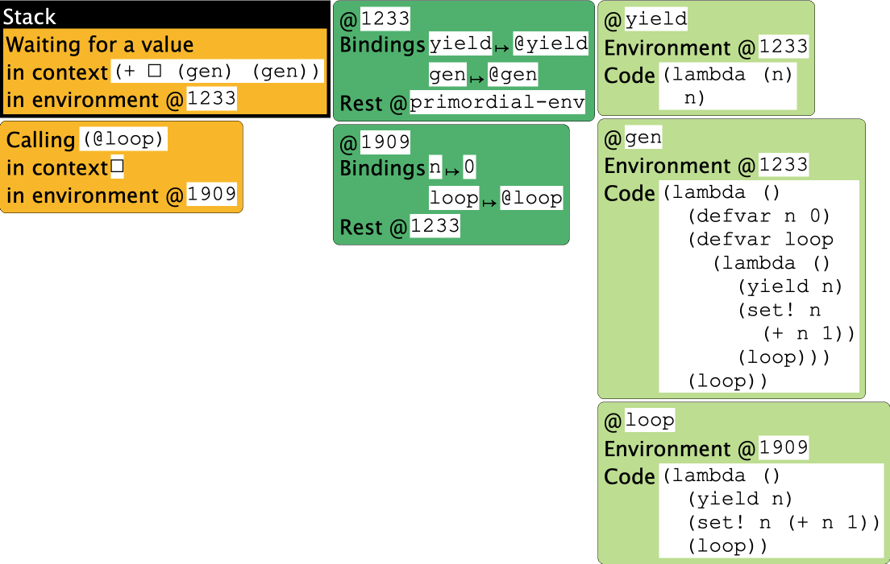
At this point, the oldest frame represents the top-level expression, which is waiting for the first call to gen to compute. Inside gen, we have initialized n to 0. Now we are about to start computing the (potentially) infinite loop.
A little bit later, we see the following:
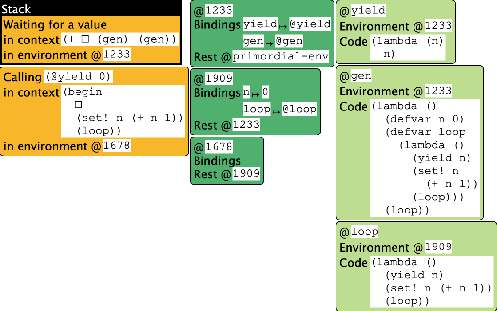
This picture is the essence of generators. Understanding it is critical.
Here is what is happening here. The top-level computation is waiting for the call to gen to finish and produce an answer. Within the generator, the computation has initialized n and is about to yield its current value. What is critical is the context of this operation:
(begin
•
(set! n (+ n 1))
(loop))
in @1678, which has no bindings and hence defers to @1909. This binds n to 0.
Now, suppose we could break up this stack into two parts (with the environment and store shared as needed):
(+ • (gen) (gen))
in @1233
(begin
•
(set! n (+ n 1))
(loop))
in @1678
Observe that each part looks like a full-fledged stack in its own right! The environment @1233 refers to names that the top-level uses (such as gen), while the environment @1678 (and hence @1909) refers to ones that the generator uses (such as n).
Until now, however, we have acted as if a program has only one stack. The simplest conceptual model for a generator is:
Each generator has its own local stack.
That is, the generator’s stack does not know about the computation in the main program or in any other generators. It only knows about the computation that it is performing. A yield does two things:
- It transparently (i.e., without the programmer’s knowledge) stores the local stack with the generator data structure.
- It returns the yielded value to the stack that invoked the generator.
Everything else—variables, aliasing, closures, growth and decline of the stack with functions calls and returns, etc.—stays exactly the same. The only difference is that calling a generator causes computation to start, or resume the context, in a separate, disconnected stack.
Thus, in the above model, after the first yield succeeds, the top-level stack frame would be
(+ 0 • (gen))
in @1233
invoking the generator. This would resume the previous stack, so n would be set to 1, and the next iteration of the loop would run, which would
- Store the generator’s stack (which, conceptually, is exactly the same—only the value of n has changed, but that is in the environment), and
- return the new value of n (i.e., 1) to the top-level stack.
This would result in
(+ 0 1 •)
in @1233
repeating the above process, and hence producing 3.
A Richer Example
Using what we have learned, let us consider another Python example:
def nats():
n = 0
while True:
yield n
n += 1
def odds():
ns = nats()
while True:
n = next(ns)
if n % 2:
yield n
g = odds()
next(g) + next(g) + next(g)
This program has two distinct generator creators: the one we’ve already seen for natural numbers, and one more that filters the natural numbers to produce only odd numbers.
We can now think of control proceeding as follows. First, we make an instance of odds and bind it to g. This immediately creates an instance of nats and binds it (within the instance of odds) to ns. Now all our generators are set up and ready to compute.
We now begin the infinite loop in odds. This calls the natural number generator. At this point, the odd number generator’s local stack looks like
while True:
n = •
if n % 2:
yield n
in an environment where ns is bound to a generator and n is uninitialized
Because we have called a generator, not a function, computation now runs in that generator’s own stack. This is the natural number generator, which we have already studied. It binds n to 0 and then yields, storing its local stack—
while True:
•
n += 1
in an environment where n is bound to 0
—and returning 0 to the odd number generator.
This resumes the odd generator’s stack. This binds n to 0 and performs the comparison. It fails, continuing the loop body:
n = next(ns)
if n % 2:
yield n
Now we are again ready to invoke the natural number generator. The odd number generator’s local stack is unchanged from before (same context, same environment, except this time the environment does have a binding for n, to 0). Meanwhile, the natural’s generator resumes from
while True:
•
n += 1
in an environment where n is bound to 0
This increments n and resumes the loop body:
yield n
n += 1
This immediately causes it to yield 1, leaving the stack
while True:
•
n += 1
in an environment where n is bound to 1
This resumes the odd generator’s stack. This binds n to 1, so the conditional succeeds. Therefore, the stack at the point of yielding becomes
while True:
n = next(ns)
if n % 2:
•
in an environment where ns is bound to a generator and n is bound to 1
This completes the first call to next(g), enabling the top-level stack frame to have the context
1 + • + next(g)
From this, we can see the next two computations will produce 3 and 5, and hence the total of 9.
Laziness
Evaluation Strategies
Back when we began to study evaluation [👉], we saw that we had a choice when performing evaluation. During function application, we could substitute the actual parameter as an expression or as a value. At that time, we indicated that SMoL is eager. Now we will investigate the other option, laziness.
Consider the following program:
(deffun (f x)
(g (+ x x)))
(deffun (g y)
(h (* y 2)))
(deffun (h x)
(+ x 5))
(f (+ 2 3))
When run eagerly in the Stacker, we see calls like
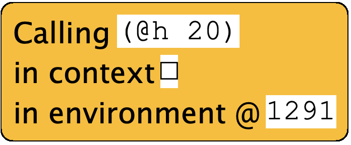
and the environment contents look like
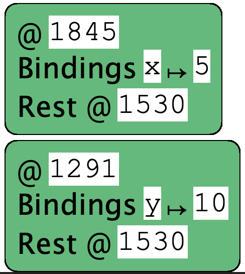
Both the call and the environment reinforce that parameters are evaluated before the function body begins to execute, so names are bound to values.
Why Lazy Evaluation
Suppose, instead, we evaluate this lazily. The evaluation would look like this:
(f (+ 2 3))
→ (g (+ (+ 2 3) (+ 2 3)))
→ (h (* (+ (+ 2 3) (+ 2 3))) 2))
→ (+ (* (+ (+ 2 3) (+ 2 3))) 2) 5)
A natural question might be, why bother doing this?
- A reason people often cite is that it can save time, in that we don’t need to evaluate parameters we don’t need. For instance, suppose we have
(deffun (f x y z)
(if (zero? x)
y
z))
and we call f with two expensive-to-compute parameters in the last two positions. In an eager language, we have evaluated both whether we want to or not. In a lazy language, we only evaluate the one we need. As we will see below, this is actually not a very compelling argument.
- A second reason is that it enables us to add new, non-eager constructs to the language through functions. Consider if: in an eager language it can’t be a function because the whole point of if is to not evaluate one of the branches (which would become parameters that are evaluated). Again, this argument has somewhat limited merit: we have seen how we can add such constructs using macros, which can do a great deal more as well.
- The most interesting reason is probably that the set of equations that govern the language changes. Consider the following. Suppose we have the expressions E and (lambda (x) (E x)). Are they the “same”? It would seem, intuitively, that they are. Suppose E is a function. In any setting where we apply E to a parameter, the second expression does exactly the same: it takes that parameter, binds it to x, and then applies E to x, which has the same effect.
However, note that E may not be a function! It could be a print statement, (/ 1 0), and so on. In those cases, E evaluates right away and has some observable effect, but the version “hidden under the lambda” will not until it is used.
Why does this matter? It matters because many parts of programming implementations and tools want to replace some terms with other terms. An optimizing compiler does this (replacing a term with an equivalent one that is better by whatever optimizing criterion is in use), as do program refactoring engines, and more. Thus, the more terms that can be replaced, or the fewer conditions under which terms can be replaced, the better. Lazy languages allow more terms to be replaced.
Terminology: This equivalence is called “rule eta” (η).
Terminology: You may see some people say that lazy languages have “referential transparency”. If you ask them to define it, they may say something like “you can replace equals with equals”. Think about that for a moment: you can always replace equals with equals. That is (by some definitions) literally what equality means: two things are equal exactly when you can replace one with the other. So that phrase tells us nothing. In fact, every language has some degree of “referential transparency”: you can always replace some things with other equivalent things. In lazy languages, the set of things you can replace is usually bigger: the referential transparency relation is larger. That’s all.
- One very important, practical reason is to create potentially-infinite data structures. See the example on streams below.
- More fundamentally, the famous paper Why Functional Programming Matters argues that laziness is a modularity concept, and develops this argument through several beautiful examples.
Strictness Points
Coming back to our example from earlier: when we run such a program in a language with lazy evaluation, when, if ever, does all this arithmetic resolve and print a value?
Before we answer that question, let us also observe that sometimes programs can’t really defer decisions indefinitely. For instance, consider this program:
(deffun (f x)
(if (even? x)
7
11))
(f (+ 2 3))
What happens when we try to evaluate it? Presumably substitution reduces this to
(if (even? (+ 2 3))
7
11)
and now what? Presumably that could be considered “the answer”, but that doesn’t seem very useful; and in real programs, these terms would just grow larger and larger. Furthermore, suppose the program were
(deffun (fact n)
(if (zero? n)
1
(* n (fact (- n 1)))))
(fact 5)
We can certainly produce as an answer
(if (zero? 5)
1
(* 5 (fact (- 5 1)))))
but…then what? And for that matter, what is fact in this response? This does not seem like a very useful programming language.
Instead, lazy programming languages define certain points in the language as strictness points, which are points where expressions are forced to compute and produce an answer. Different choices of strictness points will result in languages that behave slightly differently. Conventionally, the following are considered useful strictness points:
- The conditional portion of a conditional expression. This enables the language to determine which branch to take and which branch to ignore.
- Arithmetic. This avoids long chains of computations building up.
- The printer in an interactive environment. This makes the environment useful.
All three of these are pragmatic choices. Notice that our first example above concerned the top-level printer, while the second example has to do with conditionals.
Because of these strictness points, a typical lazy language will in fact compute the programs we have seen above very similarly to an eager language. To get to something that really differentiates eagerness from laziness, we need to get to richer programs.
Evaluating Without Substitution
Above, we saw how we can think of lazy evaluation using substitution. While this is a useful mental model, as we have seen in earlier interpreters, we don’t really want to use substitution as our implementation strategy. That involves repeatedly rewriting program source, which is not how our interpreter worked.
So let’s say we don’t pass the value but instead “the expression”. Does it mean the above sequence becomes this?
(f (+ 2 3))
→ (g (+ x x)) where x is bound to (+ 2 3)
→ (h (* y 2)) where y is bound to (+ (+ 2 3) (+ 2 3)))
→ (+ x 5) where x is bound to (* (+ (+ 2 3) (+ 2 3)) 2)
In fact, even this isn’t quite right. It should rather be
(f (+ 2 3))
→ (g (+ x x)) where x is bound to (+ 2 3)
→ (h (* y 2)) where y is bound to (+ x x)) whose x is (+ 2 3)
→ (+ x 5) where x is bound to (* y 2) whose y is (+ x x)) whose x is (+ 2 3)
In other words, we want to pass the unevaluated expression…but you can probably see where this is going! If we’re not careful, we will end up with dynamic scope. Even setting that aside, we can’t just pass the expression on its own, because when we eventually get a strictness point, we simply will have no idea what value a variable resolves to.
However, the solution also presents itself very naturally. We don’t just pass an expression, we pass along its corresponding environment. An expression and environment combine to form a…closure! Of course, this closure does not take any parameters; its only job is to suspend the evaluation of the expression until we reach a strictness point, and at that point, evaluate it in the right environment. Fortunately, we don’t need to do any new work here; closure application already does it for us.
Laziness Via Closures: Beyond Numbers
Laziness becomes more interesting when we consider data structures. Conventionally, data constructors are not strict, so their arguments are not evaluated eagerly. We can illustrate this using lists, though technically we will be constructing streams (which are infinite, as opposed to lists, which are finite).
First, read about streams represented using closures:
https://dcic-world.org/2022-08-28/func-as-data.html#%28part._streams-from-funs%29
What would the same code look like in a language that was already lazy?
To experiment with that, we’ll now use the Racket language
#lang lazy
(define ones (cons 1 ones))
(define (nats-from n)
(cons n (nats-from (add1 n))))
(define nats (nats-from 0))
(define (take n s)
(if (zero? n)
empty
(cons (first s) (take (sub1 n) (rest s)))))
Observe how some of these values print:
> ones
#<promise:ones>
> nats
#<promise:nats>
The word “promise” means these are thunks that represent the stream. To view the thunk’s content, we need to “force” the “promise”, which we do using the ! operator:
> (! ones)
#0='(1 . #<promise!#0#>)
> (! nats)
'(0 . #<promise:...e/pkgs/lazy/base.rkt:299:29>)
In the case of ones, Racket is telling us that the rest of the stream is the same stream as the one we are viewing: i.e., it’s a cyclic stream. For nats, it tells us that the first element is 0, followed by another promise. We can explore these streams a bit further:
> (! (rest ones))
#0='(1 . #<promise!#0#>)
> (! (rest (rest (rest ones))))
#0='(1 . #<promise!#0#>)
> (! (rest nats))
'(#<promise:...e/pkgs/lazy/base.rkt:299:29> . #<promise:...e/pkgs/lazy/base.rkt:299:29>)
> (! (rest (rest (rest nats))))
'(#<promise:...e/pkgs/lazy/base.rkt:299:29> . #<promise:...e/pkgs/lazy/base.rkt:299:29>)
Unsurprisingly, ones does not change. But with nats, as we explore more of the stream, we run into more thunks. This is where take is useful: it gives us a finite prefix of the potentially infinite stream. Unfortunately, that also seems to just produce more thunks, and it seems like we would need to laboriously apply ! to each part:
> (take 10 ones)
'(#<promise:...e/pkgs/lazy/base.rkt:299:29> . #<promise:...e/pkgs/lazy/base.rkt:299:29>)
> (take 10 nats)
'(#<promise:...e/pkgs/lazy/base.rkt:299:29> . #<promise:...e/pkgs/lazy/base.rkt:299:29>)
For situations like this, where we know the output is going to be finite, we might want to resolve all the thunks. For this, Lazy Racket provides !!, which recursively applies strictness to all contained thunks:
> (!! (take 10 ones))
'(1 1 1 1 1 1 1 1 1 1)
> (!! (take 10 nats))
'(0 1 2 3 4 5 6 7 8 9)
Sure enough, we get the expected answer.
Exercise: What happens if we apply !! to ones and to nats? Try it out, and explain what you see.
Tracing Laziness
Another way to understand laziness is to study the encoding of streams in the Stacker. Here is the code:
#lang stacker/smol/hof
(deffun (lz-first s) (left s))
(deffun (lz-rest s) ((right s)))
(deffun (take n s)
(if (equal? n 0)
empty
(cons (lz-first s) (take (- n 1) (lz-rest s)))))
(defvar ones (mpair 1 (λ () ones)))
(deffun (nats-from n)
(mpair n (λ () (nats-from (+ n 1)))))
(defvar nats (nats-from 0))
Now run each of
(take 3 ones)
(take 3 nats)
and study when evaluation happens and what is being held on to by the closures. (You may find it helpful to view just one of these at a time: the definition and use of ones, and separately of nats and nats-from.)
Laziness and Side-Effects
Given the (potential) benefits of lazy evaluation, why is laziness not more widely used?
The problem is that laziness makes it much harder to predict what will happen in programs that use state. Therefore, popular lazy languages do not have state, or have it in very controlled forms. (This is not a bad thing! State should only be used in very controlled ways, and Haskell, for instance, has very interesting designs that help with that. But programmers have traditionally expected to have unfettered access to state.)
Consider, for instance, the following pair of functions:
(define (f x y)
(g x y))
(define (g x y)
(if (zero? (random 2)) x y))
On their own, they seem harmless. However, now consider this call:
(f (print "X") (print "Y"))
In an eager language, we know both strings would be printed right away. However, in a lazy language, only one will, and we cannot tell which one. To understand which, we can no longer treat f as an abstraction but instead have to peer into its implementation, which in turn forces us to examine the source of g as well. We would have to examine every call, and track all the strictness points along the way, to determine which effects will occur and when. Here is another example:
(define n 0)
(f (set! n (add1 n)) (set! n (sub1 n)))
Again, if we ran this eagerly, we know n would be set back to 0 before the body of f even begins to evaluate. In lazy evaluation, we cannot be sure what value n will have: it could be -1 or 1. Furthermore if, tomorrow, g were altered to be
(define (g x y)
(if (zero? (random 2)) "X" "Y"))
then n remains 0—but we can’t know without examining its code!
A natural reaction to reading these programs might be, “Don’t do that!” That is in fact an entirely legitimate reaction. The problem is not laziness: it’s the interaction between laziness and state. As we deprecate the use of unfettered state in programming, that increases the potential for laziness. Still, there are other situations—like errors—that we cannot avoid, and that can stay latent under lazy evaluation.
Caching Results
If we use lazy programming without side effects, we get a nice benefit: each expression always produces the same result. In that case, we don’t ever have to recompute an expression; we can just store its result and reuse it on subsequent accesses. That is, we can cache the result, enabling us to trade space for time.
Aside: If you are not familiar with trading space for time in computation—as found in techniques such as memoization and dynamic programming—see DCIC:
https://dcic-world.org/2022-08-28/part_advtopics.html#%28part._avoid-recomp%29
There are, however, two kinds of result caching one can perform.
One is what happens in Lazy Racket, where each expression’s result is cached locally. This means that if the same source location is evaluated multiple times, the cached value can be reused. Other implementation strategies can look for the same expression even in a dynamic setting (as happens, for instance, in a Fibonacci function, which dynamically generates sub-problems). This requires a rather different implementation approach, but can yield even bigger time-space trade-offs.
Space Consumption
The ability to automatically memoize computation seems to show even more benefit to making lazy evaluation a default. Why not do it?
One problem is that lazy evaluation can often take up significant amounts of space, beyond the space consumed by memoization. To understand this, consider this squaring function:
(define (sq x)
(* x x))
Because we are evaluating lazily, x is bound to an expression represented as a closure. Now suppose our program looks like
(define v (make-vector 1000 0))
(sq (vector-ref v 2))
and beyond this we make no further reference to v. In an eager language, we would extract the second element of v and can reclaim all the remaining storage. But in a lazy language, the entire vector needs to stay alive until the last use of the closure that refers to it. Seemingly straightforward programs that have an intuitive space model in an eager language can have much more subtle and complicated space models in lazy programming. Observe that the issue above has nothing to do with memoization; it’s inherent in laziness.
Laziness in Eagerness
As a result of these issues, laziness has not gained popularity as a default option. At the same time, it is very useful in some settings. As we have seen above, we can always simulate laziness by using thunks. This can, however, be syntactically unwieldy, so some languages provide syntactic support for it. In languages like Racket, for instance, delay is a syntactic form that thunks its expression, and force is a function that evaluates it (caching the result).
Control on the Web
Server-Side Programming
Consider a program like this:
print(read("First number") + read("Second number"))
Imagine we were to run this program on a traditional command-line operating system. What happens when we call read? The operating system’s synchronous input-reading commands are invoked: synchronous meaning that the program suspends its execution—that is, the stack stays intact—waiting for the user to respond (if ever they do), and when they do, the program’s stack resumes, with the value typed in by the user becoming the value returned by read.
This seems so straightforward that we might never think twice about how remarkable this ability is. To understand that, we should try to run this program on the Web. When we do, we run headlong into a central problem on the Web: that there is no such thing as a “read” operation. Why not?
On the Web, a hypothetical read function can certainly send the prompt to the client. In principle, it should then wait for the client to respond with a value, which it returns. However, the stateless nature of the Web means that this can’t happen: the program has to terminate. This is an asynchronous operation. When the user responds (if they ever do), there is no computation waiting to go back to.
Recording Contexts
Therefore, a Web computation has to be arranged in a very different way. The programmer must manually remember the rest of the computation, and store it somewhere. For instance, we would break up the above program in the following way: what is going to be done next:
read("First number")
and what is waiting for the result:
print(• + read("Second number"))
(This is, of course, our old friend, a context.) But whereas the context is implicit on the program’s stack, because the program must terminate, the context needs to be written out explicitly. Of course, • is not a program operation; rather, we can think of the context as a function of one argument:
lam(•1): print(•1 + read("Second number"))
and this is the function that is stored in a way associated with the outgoing prompt. Then, when (if) the user responds, their response value is bound to •1, allowing the program to resume. Suppose, for instance, the user types 5. Then this program effectively becomes
print(5 + read("Second number"))
This needs to also perform a Web interaction, so we again split it into what must happen now
read("Second number")
and what is waiting for the result:
print(5 + •)
which we can represent as a function:
lam(•2): print(5 + •2)
If and when the user resumes, this function is applied to the value they supply, and the result prints as we would expect.
This explanation glosses over some important details. Real program evaluation, as we have seen, does not proceed by rewriting programs, so the second function is not really
lam(•2): print(5 + •2)
but rather a closure with the body
lam(•2): print(•1 + •2)
closed over an environment where •1 is bound to 5. Getting into these details is interesting from a Web architecture perspective, but for us, all we care about is that contexts must be saved and restored.
Simulating in the Stacker
We can simulate the above using the Stacker, provided we forego the input operation and pretend it always returns some constant:
#lang stacker/smol/hof
(deffun (get-number s)
5)
(+ (get-number "first") (get-number "second"))
At the point of the second call, we see that the state looks like this:
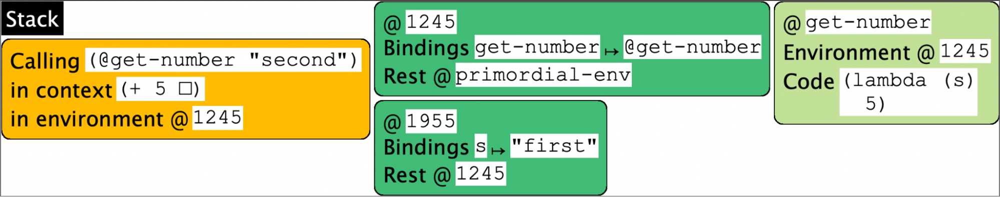
Client-Side Termination
On the client-side Web, in JavaScript, we see the same phenomenon, but for a completely different reason. Imagine we write a factorial computation in JavaScript:
function fact(n) {
ans = 1;
while (n != 0) {
ans = ans * n;
n = n - 1;
}
return ans;
}
Notice that the loop checks for n != 0 and not n > 0, so if we put this in a Web page and run it, the program will in principle run forever:
<script type="application/javascript">
function fact(n) {
ans = 1;
while (n != 0) {
ans = ans * n;
n = n - 1;
}
return ans;
}
function show() {
window.alert('here');
ans = fact(-1);
window.alert(ans);
document.getElementById('answer').innerHTML = ans;
}
</script>
</head>
<body>
<button onclick="show()">Click me</button>
<div id="answer"></div>
However, this creates a problem: the JavaScript virtual machine runs only one computation at a time, and the same JavaScript virtual machine also manages the page and the browser’s components. Therefore, if the program inside a page goes into an infinite loop, the entire page stops being responsive. For this reason, after a little while, the browser will pop up a window offering to kill the computation.
There is a solution to this in JavaScript, but it is hardly elegant. The programmer creates a closure—called a callback—that represents the rest of the computation. The programmer then calls
setTimeout(C, 0)
or, in more modern programs,
requestAnimationFrame(C)
(though the former version perhaps makes a bit clearer what is happening), where C is the callback. This creates an event to run C as soon as possible (after 0 units of time). The programmer then—does this sound familiar?—terminates the program. This returns control to the JavaScript virtual machine. It runs any other pending events, then arrives at this event, which it runs immediately—i.e., it “calls back” into the computation using C. If C was constructed correctly, then this properly resumes the computation, as if it had never halted. Phew!
Abstracting the Problem
Thus, we have the same problem on both the server and client sides of the Web. The reasons are very different, but the net effect is the same: the programmer has to manually keep track of information that needs to persist, store it somewhere, halt the computation to return control to whatever called it and, when resumed, fetch information back from storage; all this code must run exactly as if an interruption had never occurred.
This programming quandary is not new. Back in the early days of computing, programmers had to manually keep track of where in memory values resided; then we got compilers that did this for us. Then we had to manually keep track of allocation on the heap to later reclaim it; then we got garbage collectors to do this for us. The history of programming languages is full of tasks that programmers did manually until we learned to create language constructs and compilers that could do these automatically. It would be nice if we could do the same here to reduce the burden of writing such programs.
To study these phenomena better, it would be helpful if we could abstract away from the details of servers, clients, JavaScript, Web pages, timeouts, and so on, and examine the phenomenon in its essence.
Using Closures
We can simulate the solution by assuming a new primitive, get-number/k. Instead of taking one argument, the prompt string, it also takes a second argument. This second argument is a closure that represents the rest of the computation—i.e., it’s the stack represented as a closure. This function binds that closure to a variable, resume, and then…does nothing:
(defvar yielder #false)
(deffun (get-number/k s rest)
(set! resume rest))
Recall that we want the program to invoke this function and then halt; all remaining computation—the context—needs to be in the second parameter given to get-number/k. Thus, our program now looks like this:
(get-number/k "first"
(λ (•1)
(get-number/k "second"
(λ (•2)
(+ •1 •2)))))
Terminology: The second argument—embodying the entire rest of the computation—is called the continuation, and it’s traditional to use the letter k for it.
Terminology: The program structure above has been turned inside-out: instead of the first operation being innermost and last operation outermost, the first one is outermost and the last one is innermost. This unwieldy program structure has a name: inversion of control. Instead of the client calling the helper function whose values it wants (in this case, get-number), the helper function (in this case get-number/k) calls the client. This leads to an unnatural, unwieldy, and error-prone programming style.
Sure enough, when we run this program, it just…halts with no output. It is instructive to look at the state of the program when it ends:
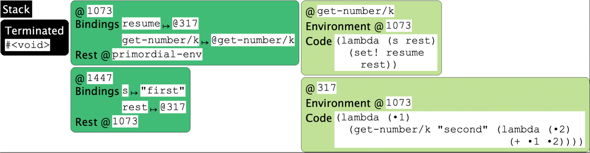
Notice that resume is bound to a function that is awaiting a number. If we invoke it:
(resume 5)
then our state (unfortunately, we had to re-run the program) becomes:
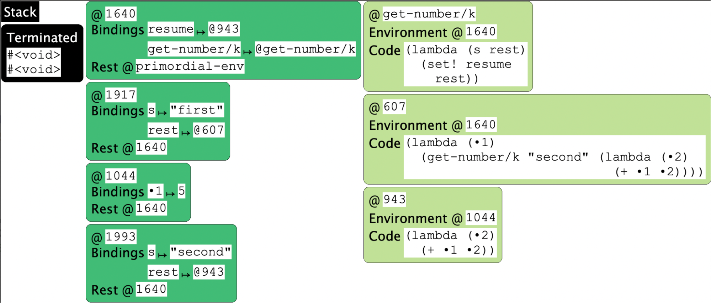
Observe that resume is now bound to a closure whose environment remembers the value of •1. If we now resume again:
(resume 7)
the “program” halts naturally, with an output of 12! (We use quotes around “program” because we have really fragmented our simple program into three: one that gets the prompts for the first input, one that remembers that value and prompts for the second, and the third that sums those two values.)
Using Racket
It turns out that Racket also has tools for manipulating continuations.
Imagine we have two tabs in DrRacket. In the first (let’s suppose we save it as "yielder.rkt") we have the following mysterious program:
#lang racket
(provide yield resume)
(define resumer #false)
(define (yield)
(let/cc k
(set! resumer k)
(raise 'yield)))
(define (resume)
(resumer 'dummy))
The operation let/cc binds the named variable (here, k) to a continuation value: it turns the current stack into a value that can be treated as a function.
In another tab, we will write a simple program that pretends to be our long-running computation: a factorial function. We can run this directly in Racket, of course. But fact could run for a very long time, depending on the input; so following the rules of JavaScript, we want it to halt periodically, let’s say every time n is divisible by 5 (i.e., roughly every five iterations). That is, we would like to run:
#lang racket
(require "yielder.rkt")
(define (fact n)
(if (= n 0)
1
(if (zero? (modulo n 5))
(begin
(yield)
(* n (fact (- n 1))))
(* n (fact (- n 1))))))
where (yield) makes it pause in a way that, when we run (resume), the computation will pick up exactly where it left off. Indeed, we see the following outcome:
> (fact 7)
uncaught exception: 'yield
> (resume)
5040
The first time it yields is when n is 5. Yielding, in this case, means terminating the computation using the Racket exception mechanism. Resuming somehow causes computation to continue and run to completion but, remarkably, it produces the exact same answer as if computation had never halted at all!
Observe that thanks to the use of let/cc, we have been able to invert the inverted control, i.e., write the program in what is called direct style. The language has taken care of storing and restoring the computation without the user program having to do it manually. Thus, continuations are useful tools for inverting inverted control. We will also see another language mechanism that does this: Non-SMoL: Reactivity.
Yielding on a Web Server
The Racket Web server has a special primitive that does just this for the Web. We’ll build it up in stages. First, we’ll use a special Racket language, designed to make it easier to write server-side Web programs:
#lang web-server/insta
Programs in this language must have a “main” function, called start, which is given an initial request (whatever information is provided when we first run the computation). This function is then written assuming a convenient fiction: the existence of a function get-number that will print a prompt, send out a Web page, wait for its response, extract the value entered, and return it as a number:
(define (start req)
(let ([result (+ (get-number "first") (get-number "second"))])
(response/xexpr
`(html (body (p "The result is " ,(number->string result)))))))
If we can make this fiction reality, then we can write a program like the above: it calls get-number in a “deep” context, twice, adds the results, and then converts the result into a string to embed it into a Web page.
The question, of course, is how such a function can exist. First, we have to discuss some Web mechanics. When we create a Web form, it needs a field called the action, which holds a URL. When the user submits the form, the browser bundles up the information entered into the fields of the form and sends them—effectively, as a set of key-value pairs—to the URL, i.e., to the server, requesting it to run the program at that URL and provide the key-value pairs to that program.
Therefore, we can see that we’ve turned the problem of suspending the program’s execution into one of being able to fill in this URL with something meaningful. If the URL can somehow correspond to the stack, then perhaps the stack (and hence the computation) can be restored, and can be provided with these key-value pairs, from which the program can extract the required information.
The “secret sauce” that the Racket Web server provides is a primitive called send/suspend. It does the following:
- It takes a single-argument function as a parameter.
- It records the current stack as a value.
- It stores this stack in a hash-table, associated with a unique, unguessable string.
- It turns this string into a URL.
- It then calls the given function with this URL string.
The resulting function can then use this URL string as the action field of the form.
Aside: This is not the only way to use it. The URL could also, for instance, be sent in an email message. This is a handy way to validate email addresses. Because the URL is unique and unguessable, the only way for someone to resume the computation would be to receive that URL, i.e., to have access to the email address. Thus, resuming the computation can be thought of as having validated the email address (assuming, of course, that an intruder is not reading emails and clicking on validation links that the email’s owner would not have clicked on).
So here is an actual working implementation of get-number:
(define (get-number which)
(define title (format "What is the ~a number?" which))
(define req
(send/suspend
(lambda (k-url)
(response/xexpr
`(html (head (title ,title))
(body
(form ([action ,k-url])
,title ": "
(input ([name "number"]))
(input ([type "submit"])))))))))
(string->number
(extract-binding/single 'number
(request-bindings req))))
Observe that most of this function is just HTML and API bookkeeping. We have to construct the Web page with the relevant components. When (if) the computation resumes, it returns with the key-value pairs sent from the form. These are bound to req. From there, it’s a simple matter of extracting the right value using the APIs.
And that’s it! That gives us a full, working program.
Interaction with State
Now let’s think about how all this interacts with state. Let’s write a simple Web program that simply counts how many times we submitted a form.
One natural way to write it is as follows. We’ll have a mutable variable, count, that keeps the count. We’ll have a page that shows the current count and provides the user a button. When they click it, computation resumes; the resumed computation increments the count, and loops:
#lang web-server/insta
(define count 0)
(define (show-count)
(send/suspend
(lambda (k-url)
(response/xexpr
`(html (head "Counter")
(body
(p () "The current count is " ,(number->string count))
(form ([action ,k-url])
(input ([type "submit"])))))))))
(define (start req)
(show-count)
(set! count (add1 count))
(start 'dummy))
We’ll call it the stateful counter.
This works as you might expect.
But now let’s think about a different way to write this same program. Instead of using a global mutable variable, we could instead keep the count as a local variable and functionally update it:
#lang web-server/insta
(define (show-count count)
(send/suspend
(lambda (k-url)
(response/xexpr
`(html (head "Counter")
(body
(p () "The current count is " ,(number->string count))
(form ([action ,k-url])
(input ([type "submit"])))))))))
(define (loop count)
(show-count count)
(loop (add1 count)))
(define (start req)
(loop 0))
We’ll call this the functional counter.
This, too, works as you would expect. And it works the same as the previous program. And yet, somehow, these programs seem to be different. Are they in fact exactly the same?
They’re not!
Exercise: Map out the stacks, environments, and stores to simulate how these programs would run.
Web Interactions
In conventional, desktop software, concurrency is an artifact of the program. If the program is not concurrent, we can’t really force it to behave concurrently.
Not so on the Web. There, we can copy URLs, duplicate them, and replay them. Therefore, the same program state can be invoked multiple times, returned to, and so on.
Consider the following sequence of interactions on the Web:
- A user visits a travel Web site.
- They enter a city and search for hotels.
- They are given a list of hotels, L.
- They click on one of the hotels, say L1.
- This takes them to a page for L1.
- They click the reservation link.
They obtain a reservation at L1. All this seems perfectly normal.
Now suppose instead they do the following:
- A user visits a travel Web site.
- They enter a city and search for hotels.
- They are given a list of hotels, L.
- They click on one of the hotels, say L1, in a new tab.
- They click on another of the hotels, say L2, in another new tab.
- They go back to L1’s tab.
- They click the reservation link.
Think about these two questions:
- At which hotel would you like the reservation to be made: L1 or L2?
- Where do you expect the site to make the reservation: L1 or L2?
Naturally, we would expect the reservation at L1, because we clicked on the reservation link from L1’s page. But on many Web sites, you used to get a reservation at L2, not L1. This suggests that there is some interaction between the two tabs: specifically, there seems to be mutable state, the “current hotel”, that is shared between the two tabs. Opening a hotel’s page sets this. Thus, this is initially set to L1; the new tab for L2 sets it to L2; when we return to L1’s tab and make a reservation, this act reads the mutable state, which makes the reservation at the “current hotel”, namely L2.
Returning to the Counters
Now let’s return to the two counters, armed with the ideas from the interactions above.
Run the stateful counter program and submit, say, 3 times. After that, the page will list the count as 3, and the URL will look something like
http://localhost:51264/servlets/standalone.rkt;((%22k%22%20.%20%22(1%203%2097639995)%22))?
Now copy this URL, create a new tab, paste it, and enter. This runs the computation associated with this URL. Perhaps surprisingly, this shows the count as 4. Now go back to the previous tab and submit the form. That tab now shows a count not of 4 but of 5. Return to the second tab and submit; it now shows 6. The stacks help us see why: every return mutates the same counter variable.
Now repeat the same process with the functional counter. After 3 submissions, we get a URL like
http://localhost:51379/servlets/standalone.rkt;((%22k%22%20.%20%22(1%203%2028533532)%22))?
which seems very similar. Now copy this URL into a new tab, and repeat the interactions above.
What we see is very different. Each tab has its own local “memory”, much as we expected of the pages on the travel Web site. The continuation does not mutate a single shared variable, but rather makes a new call to loop, which creates a new binding that is distinct from previous bindings. Each time we submit we make another call, which makes another stack frame and its corresponding environment frame, which are distinct.
This distinction between creating a single, shared, mutable variable and creating distinct variables that each have their own immutable value should be familiar: it’s the exact same problem that we saw in the Loops assignment [https://cs.brown.edu/courses/cs173/2022/loops.html].
Mapping between Web and Programming Language Features
Interestingly, there is a deep connection between features of Web programs and ideas from programming languages. On the Web, we have
| Server-side | Client-side |
Mutable | Database (page-independent) | Cookie (page-independent) |
Immutable |
| Hidden field (page-specific) |
Observe that when we have a single mutable entry, the net result will be that all pages that share it will end up seeing the effects of each other. Therefore, the bad travel Web site pattern is inherent in this style of programming. Unfortunately, Web APIs make cookies very easy to use, leading to programs following this bad pattern. In contrast, when we have immutable data that is specific to the page (the field is on the page…it’s just hidden), then each page keeps its own information separate from all the other pages. Notice also that hidden fields are key-value mappings. Therefore, a collection of hidden fields is an environment. Since a page also has a reference to code to run, a page with hidden fields is effectively a closure! In contrast, a page with shared mutable state is using the store (or heap). The Racket Web server simply makes these implicit ideas explicit.
Readings
The work in this chapter is elaborated in several papers:
Reactivity
We learned early on that SMoL languages evaluate formal arguments at a function call. We then saw laziness as a contrast to this: an argument is evaluated zero times at the call, and is maybe only evaluated later. (Of course, if the result is not cached, it may be evaluated many times.)
Now we will see another contrast to SMoL, focusing this time on the function call itself: where what syntactically looks like a single function call can actually be numerous, even an unbounded number.
GUIs through Callbacks
To do so, it helps to remind ourselves of the evaluation model in most graphical applications, these days embodied by JavaScript. Suppose we want to make a Web page with a timer that counts up every second, and whose value resets when we click on a Reset button:
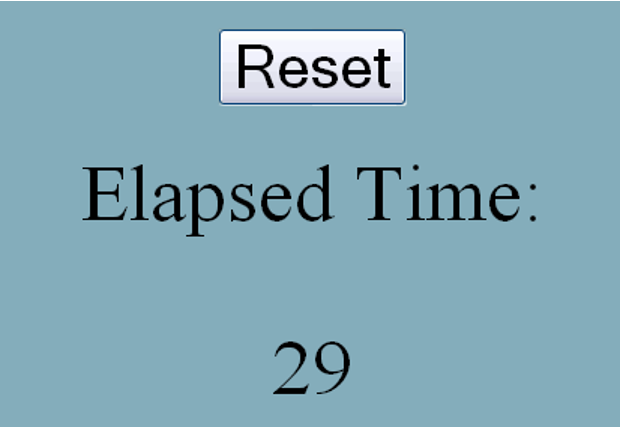
One version of the JavaScript code would look as follows:
<script type="text/javascript">
var timerID = null;
var elapsedTime = 0;
function doEverySecond() {
elapsedTime += 1;
document.getElementById('curTime').innerHTML = elapsedTime; }
function startTimer() {
timerId = setInterval(doEverySecond, 1000); }
function resetElapsed() {
elapsedTime = 0; }
</script>
<body onload="startTimer()">
<center>Elapsed time</center>
<center>
<div id='curTime'> </div>
</center>
<center>
<input id="reset" type="button" value="Reset" onclick="resetElapsed()" />
</center>
</body>
There are three parts to the logic here:
- Updating the elapsed time every second.
- Resetting the timer on a button-press.
- Initiating the computation.
These are accomplished as follows:
- When loaded, the Web page invokes startTimer.
- We use elapsedTime to record how much time has elapsed, and create a timer, referenced by timerID. This installs a timer (and records a reference to it in case we need it later, which we don’t in this program) that runs every second (1000 milliseconds). Whenever the timer goes off, it invokes the function doEverySecond. That function increments the elapsed time, and writes the current value into the Web page.
- Finally, the reset button has resetElapsed as its callback. This resets the value of elapsedTime, whose updated value is then shown the next time the display is updated. (In principle, we might want to update the display in this callback too.)
Let us suppose we were given this program to maintain. We want to ask a simple question: what is the value of the Web page’s curTime element? Observe the reasoning we have to perform:
- It is set inside doEverySecond.
- It’s set to the value of elapsedTime.
- That value is incremented in the previous statement.
- That increment takes place every time doEverySecond is called.
- That call takes place in the first argument of setInterval.
- That event is installed by startTimer.
- Which is called on page load.
- Wait. We also need to know the initial value, where elapsedTime is declared.
- Oh, but wait. We also see it reset.
- That happens inside resetElapsed.
- Which is called when the button is clicked.
In short, we have to follow all this:
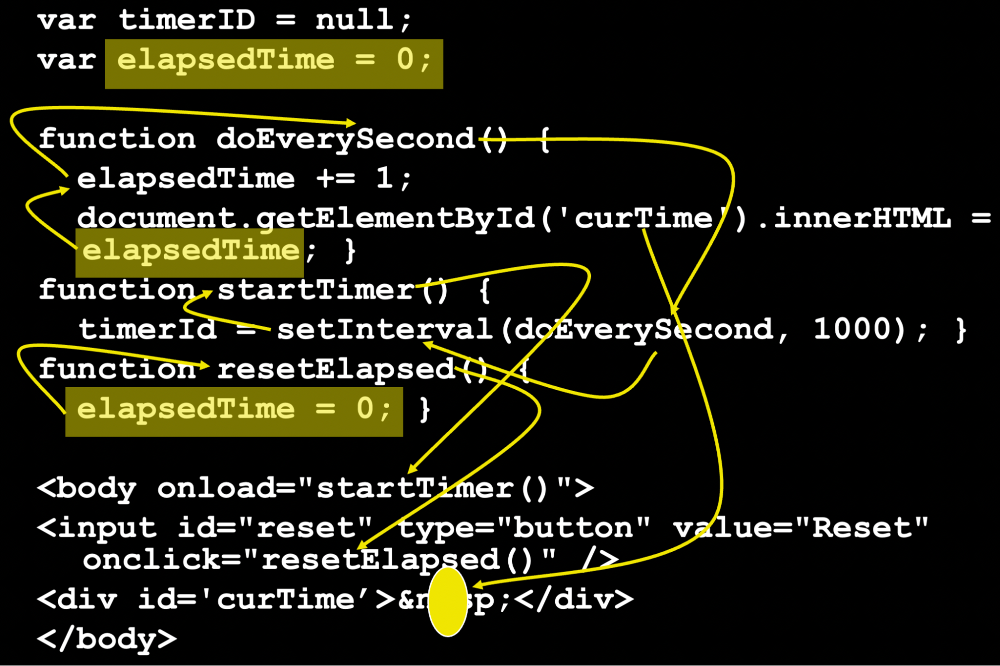
Reactivity
There is an alternative, called functional-reactive programming (FRP). We will see one particular instantiation, which is baked into Racket with an interesting user interface. The language is called FrTime. For technical reasons, we will not use a #lang but rather choose it from the Language menu (under Other Languages).
Do Now! Below are some expressions whose output is best experienced in DrRacket. Run them in DrRacket and see the output for yourself!
FrTime essentially provides a basic version of Racket, so basic computations work exactly as we would expect:
> 5
5
> (+ 2 3)
5
> (string-length "hello")
5
We can also ask for values like the current system time:
> (current-seconds)
1668363009
> (add1 (current-seconds))
1668363010
You will likely see a different value than the one shown above, because you are not reading this at the same time as when I wrote it. But that is a problem: indeed, even I am seeing a stale value, because time has passed since I ran the command.
The typical solution is to use callbacks. We can imagine a timer that takes a callback, which is called every time the time changes. However, this would invert control, which is exactly what happens in our timer example.
But FrTime, following the principles of FRP, provides a special kind of value. Try it:
> seconds
See what happens? seconds is a time-varying value: i.e., it is (technically: evaluates to) a value, but what it evaluates to changes over time. (It changes, in fact, every second.)
Naturally, we should ask: if seconds evaluates to a value, we can use it in expressions, so what happens if we write expressions like these?
> (add1 seconds)
> (modulo seconds 10)
Notice that both add1 and modulo demand that their first argument be numbers. seconds is a time-varying value that at every point in time is a number. Therefore, these expressions are well-typed, producing no errors, and in fact produce the answer we might expect (but also perhaps be a bit surprised by).
Nothing prevents us from writing even longer expressions. Consider the function build-list:
> (build-list 5 (lambda (n) n))
'(0 1 2 3 4)
What happens if we now use a time-varying value?
> (build-list (modulo seconds 10) (lambda (n) n))
Or build an even deeper expression:
> (length (build-list (modulo seconds 10) (lambda (n) n)))
How Evaluation Works
Dataflow Graphs
What happens when we write these expressions? FrTime rewrites the way function applications happen. If no argument to a function is time-varying, then the function evaluates just as it would in regular Racket. If, however, any of its arguments is time-varying, then FrTime constructs a node in a dataflow graph. This node is attached to the nodes corresponding to the time-varying arguments.
Consider this expression:
(length (build-list (modulo seconds 10) (lambda (n) n)))
The act of calling length evaluates its argument, which is a call to build-list, which evaluates its two arguments. The second argument is an ordinary closure. The first argument is a call to modulo, which evaluates its two arguments. Again, the second argument is just a number, but the first argument is time-varying. Consequently, this turns into a dataflow graph node, where we use the context notation to indicate where time-varying values go:
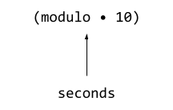
Because (modulo seconds 10) evaluates to a time-varying value, so does the next outer expression:
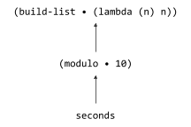
and finally the outermost one:
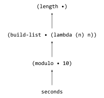
The program source therefore evaluates to this dataflow graph. Now, each time-varying value may evaluate at different rates and for different reasons. seconds, naturally, updates once every second. When it does, its updated value is pushed to all the nodes that depend on it, which update their value and push their values, and so on all the way through the graph. Finally, values may arrive at the REPL, which in FrTime is designed to display them automatically updating.
Rewriting Application
Essentially, we can think of reactivity being implemented by rewriting how function application works. In the simplest case, imagine we have a function application, (f a). Let us assume that f is itself not a time-varying value. Then, this application rewrites (f a) as
(let ([a-value a])
(if (time-varying? a-value)
…
(f a-value)))
We will return to the … in a moment. Observe that this evaluates the argument expression and, if it is not currently a time-varying value, then computation proceeds exactly as it would have in regular Racket. This means that progams that don’t use time-varying values behave exactly as they would in Racket, so this is a conservative extension of Racket.
Now let’s consider what happens if the parameter is time-varying. That means, instead of immediately computing an answer, we have to create a node in the dataflow graph. We can imagine a time-varying value is an object of the class tvv% (tvv for time-varying value, and % using the Racket convention for classes). We will first illustrate how this might be used, then show its definition. This class has two methods: add-consumer, which provides another object of tvv% that will receive updated values, and update, which receives updated values. We reproduce the bottom three parts of the above dataflow graph as follows and, to keep the output short, compute the remainder relative to 5 rather than 10:
(define seconds
(new tvv% [updater (λ (v) v)]))
In practice, seconds would be attached to a system timer that pushes an update every second. For simplicity, we make it an inert object that only changes when we manually call its updater.
The remainder node now looks like this:
(define mod•5
(new tvv% [updater (λ (v) (modulo v 5))]))
That is, every time it receives a value from seconds, it computes that value modulo 5. Of course, right now it has no way of knowing that it must listen to seconds; we have to register it as a consumer:
(send seconds add-consumer mod•5)
Similarly, the build-list expression creates a time-varying value object:
(define bl•id
(new tvv% [updater (λ (v) (build-list v (λ (n) n)))]))
which too we must attach to its value producer:
(send mod•5 add-consumer bl•id)
Observe how the v parameters in mod•5 and in bl•id correspond to the • in the dataflow graph.
Finally, just as seconds is a source in the graph, we will define a sink that prints results, and send values from bl•id to it:
(define show
(new tvv% [updater (λ (v) (println v))]))
(send bl•id add-consumer show)
Now we’re ready to test it all! If we simulate seconds updating for the first ten seconds:
(for-each (λ (n) (send seconds update n)) (range 0 10))
we see the following output printed, just as we would expect:
'()
'(0)
'(0 1)
'(0 1 2)
'(0 1 2 3)
'()
'(0)
'(0 1)
'(0 1 2)
'(0 1 2 3)
So how did this work? The tvv% class keeps track of a list of consumers, of which above we have had only one per object. add-consumer merely augments this list. The update method receives a value, uses its updater function to compute a new current value, and broadcasts it to all of its consumers:
(define tvv%
(class object%
(init updater)
(define updater-function updater)
(super-new)
(define consumers empty)
(define/public (add-consumer new-consumer)
(set! consumers (cons new-consumer consumers)))
(define/public (update pushed-value)
(let ([new-current-value (updater-function pushed-value)])
(for-each (λ (c) (send c update new-current-value))
consumers)))))
That’s (most of) the core logic (but read on). This brings us back to the rewriting of applications: what goes in …? Well, we have to
- make a new tvv% instance
- supply it an updater function that corresponds to (f •)
- registers that node as a consumer to the tvv% object that a-value references
- return the new tvv% instance as the result of this function “application”
Exercise: Turn the above rewriting idea into a proper macro. If you can, turn it into the #%app of a #lang so that one can program a module in a FrTime-like style.
Non-Linear Graphs
The above example may be a bit misleading in suggesting that an expression must always have at most one time-varying parameter. Consider this program:
(= (modulo seconds 3) (modulo seconds 5))
Its dataflow graph looks like
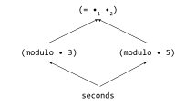
On every update of seconds, both expressions that depend on it update, and their result flows to the equality comparison. Every 15 seconds, we would expect to see 12 consecutive false values followed by three consecutive true values, and that is what we see.
Exercise: Does the above definition of tvv% permit non-linear graphs? Can you write the above example with it? If so, show how. If not, modify it to allow such a definition.
Avoiding Glitches
These forks in the graph, however, might be a cause for concern. Let us see an even simpler example:
(< seconds (add1 seconds))
Let us first be clear about what we expect this to produce: we want it to always be #true.
However, let us view how a simplistic dataflow graph evaluator might work. Here is the graph:
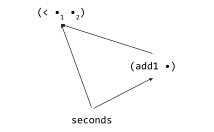
Suppose the value of seconds updates to become 10. This value is pushed, as we would expect, to both its listeners. This causes the (add1 seconds) node to update its value from 10 to 11. However, the update to seconds might have caused the comparison to occur immediately. At that point FrTime would be evaluating (< 10 10), which is clearly false. So for one instant this expression would evaluate to #true, before the update from (add1 seconds) arrives and it reverts to #false. This is called a glitch, a term borrowed from the same phenomenon in electrical circuits.
Avoiding glitches is actually quite simple. Rather than updating a node in this eager manner, FrTime schedules the graph to be updated in topographical order. That ensures that no node will ever see old, or “stale”, values, and the expression will evaluate correctly. Of course, we can only apply topological sorting to directed acyclic graphs, so handling cycles requires some additional work, which we do not discuss here.
Exercise: Make the above definition of non-linear graphs behave glitch-free.
Other Time-Varying Values
So far we have seen only one basic time-varying value, seconds. FrTime provides many others. For instance, mouse-pos is the current position of the mouse. If we run the following program:
(require frtime/animation)
(display-shapes
(list
(make-circle mouse-pos 10 "blue")))
we see a blue circle, and it automatically follows the mouse.
The function display-shapes in the FrTime animation library takes a list of shapes; above, we have only one. This function builds a list of (four) circles whose positions are determined by the mouse’s location, except each one is delayed, i.e., represents where the mouse used to be. (One might call this the Rhode Island mouse.) Therefore, as the mouse moves these circles appear to “follow” it around.
(display-shapes
(let ([n 4])
(build-list
n
(lambda (i)
(make-circle (delay-by mouse-pos (* 200 (- (- n 1) i)))
10
"green")))))
Even More Time-Varying Values
We have actually seen only one kind of time-varying value, called a behavior. There are actually two kinds of time-varying values, which is easy to see if we consider a few different kinds of stimuli from the world:
- Current mouse position
- Sequence of keystrokes
- Current user location
- Sequence of network responses
- Current status of mode keys
- Sequence of mouse-clicks
- Current time
Notice that several of those are “current…” and others are “sequence of…”. The former have the property that they always have a value, and the value may change at any time. The latter have the property that at any given moment they may not have a value—for instance, there may not be a “current keystroke”—and we don’t know when (or if) the next one will come, and there may be an infinite number of them. The latter are, of course, just streams, often called event streams.
If we go back to our original counter example, we had both present. The elapsed time was a behavior (always has a value, which changes either when a second finishes or when a button is clicked). The sequence of button presses is, conversely, an event stream: at any given moment there may not be a press, we don’t know when or even if the next one will come, and there may be an unbounded number of them (from a very bored user). To learn more, see the papers about the design and implementation of FrTime, and a similar language for JavaScript called Flapjax.
Returning to Our Timer
We can write the original timer program using FrTime’s GUI library. Here is the program, explained.
Elapsed Time Without Resetting
First we will write a simpler version that simply shows the elapsed time since the program began. To do so, we need to load the GUI library:
(require frtime/gui)
and then we need to determine how much time has elapsed. It may be tempting to write
(define init-time seconds)
(define elapsed-time (- seconds init-time))
and then make a GUI display object that presents this (after converting the number into a string):
(make-message (number->string elapsed-time))
When we run this, however, we get a rather disappointing display that seems to always show 0. That is because that’s what we asked for! We can check this by asking for the value of init-time in the REPL:
> init-time
When we do, we see that it is constantly changing. But that’s what we should expect: we defined it to be the same as seconds! Instead, we need to hold on to the value of seconds at the time we started the program: i.e., we do not want it to automatically update. For that, we instead write
(define init-time (value-now seconds))
and then the rest of the program works as we would expect.
Adding Resets
Now let’s add the button. We create a button object, which returns an event stream of its clicks:
(define reset-clicks (make-button "Reset"))
Every time there’s a click, we want the elapsed time to reset to 0. That is, we want to keep track of when the reset occurred. Note that again we need to use value-now to get the time when it occurred, not the current time. We use map-e to map over event streams:
(define click-times (map-e (lambda (_) (value-now seconds)) reset-clicks))
So we have two kinds of events: the start of the program, and the clicks. We want a single behavior that reflects when these occurred: starting with when the program began, and updating whenever there’s a click. The function switch does this, “switching” the behavior’s value whenever an event occurs:
(define event-times (switch click-times init-time))
At this point, the elapsed time to show is how far the current time is from the last event:
(define elapsed-time (- seconds event-times))
Visually:
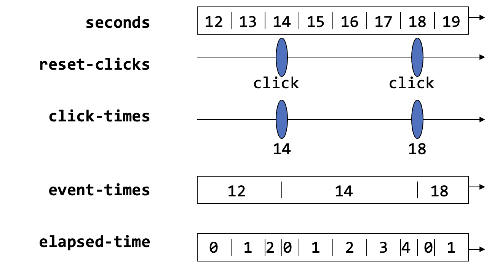
Putting this all together, and adding the output directive:
(define init-time (value-now seconds))
(define reset-clicks (make-button "Reset"))
(define click-times (map-e (lambda (_) (value-now seconds)) reset-clicks))
(define event-times (switch click-times init-time))
(define elapsed-time (- seconds event-times))
(make-message (number->string elapsed-time))
Observe that in this program, there are two kinds of changes that can occur:
- Another second elapses. Thus, seconds changes; so does elapsed-time; and so make-message updates its output.
- The user clicks the button. Then reset-clicks has an event, so click-times has an event, event-times updates, and so does elapsed-time, thereby also causing make-message to also update its output.
In both cases elapsed-time updates, triggering a change in the output. But there are two inputs to the subtraction in elapsed-time, and they update for different reasons.
What may be lost in the above presentation, which is incremental to enhance readability, is that we actually have deeply nested expressions that we can think of algebraically. To make that clearer, here is the whole program written as a single expression, with each name replaced with the expression it was bound to (though this is almost certainly a less readable version):
(make-message (number->string
(- seconds
(switch
(map-e (lambda (_) (value-now seconds))
(make-button "Reset"))
(value-now seconds)))))
The interested reader can prove properties of the time shown based purely on the rules of algebra, perhaps even identifying a slightly unsatisfying behavior in the time shown by the timer (which was also a problem with the callback version).
This example shows that we really can compose expressions in a conventional manner even though we are writing a reactive program using a GUI library. It is worth comparing the structure of this program against the callback-based version that we started with.
This paper shows how the GUI library was given a functional-reactive interface by exploiting the encapsulation of object-oriented state.
••••• What’s Next? •••••
You have just finished a detailed look at the landscape of programming languages.
It’s a broad and rich landscape with many, many dimensions to consider.
This book has largely eschewed programming language theory, because there are already many wonderful books about that. I recommend:
for three rather different, but all foundational, perspectives on the further study of the subject.
Equally, programming languages are more popular than ever before. Working programmers not only contribute to their development but also put a great deal of effort into understanding more advanced features and distilling them for others. Their work tends to be found on blogs or at various conferences (such as those listed here).
We’re done! I hope you’ve enjoyed reading this as much as I enjoyed writing it!